NIST Special Publication · PDF 原文抽出
Developing Security, Privacy, and Cybersecurity Supply Chain Risk Management Plans for Systems
システム向けセキュリティ、プライバシー、サイバーセキュリティ・サプライチェーンリスク管理計画の策定
NIST SP 800-18 Rev. 2（Developing Security, Privacy, and Cybersecurity Supply Chain Risk Management Plans for Systems）の英文と日本語訳を段落ごとに並べた閲覧用ページです。システムセキュリティ計画、システムプライバシー計画、サイバーセキュリティ・サプライチェーンリスク管理計画の要素と、リスク管理フレームワークに沿った策定方法を示します。 翻訳は非公式です。要件の確認にはNIST の正式版 PDFを参照してください。
PDF から抽出した原文は原本との照合待ちです。
本文の数式はLaTeXの構造からKaTeXで表示しています。
NIST Special Publication 800
NIST特別刊行物800
未レビュー訳NIST SP 800-18r2
NIST SP 800-18r2
未レビュー訳Developing Security, Privacy, and Cybersecurity Supply Chain Risk Management Plans for Systems
システムのためのセキュリティ、プライバシー、およびサイバーセキュリティサプライチェーンリスクマネジメント計画の策定
Jeremy Licata Rebecca McWhite Laura Calloway Dylan Gilbert Meghan Anderson Julie Snyder Jeremy Miller
ジェレミー・リカータ レベッカ・マックホワイト ローラ・キャロウェイ ディラン・ギルバート メーガン・アンダーソン ジュリー・スナイダー ジェレミー・ミラー
未レビュー訳This publication is available free of charge from: https://doi.org/10.6028/NIST.SP.800-18r2
本刊行物は以下より無料で入手可能です: https://doi.org/10.6028/NIST.SP.800-18r2
未レビュー訳NIST Special Publication 800
NIST特別刊行物800
未レビュー訳NIST SP 800-18r2
NIST SP 800-18r2
未レビュー訳Developing Security, Privacy, and Cybersecurity Supply Chain Risk Management Plans for Systems
システムのためのセキュリティ、プライバシー、およびサイバーセキュリティサプライチェーンリスクマネジメント計画の策定
Jeremy Licata, Rebecca McWhite, Laura Calloway
Jeremy Licata、Rebecca McWhite、Laura Calloway
未レビュー訳Computer Security Division Information Technology Laboratory
コンピュータセキュリティ部 情報技術研究所
未レビュー訳Dylan Gilbert1, Meghan Anderson Applied Cybersecurity Division Information Technology Laboratory
Dylan Gilbert1、Meghan Anderson 応用サイバーセキュリティ部 情報技術研究所
未レビュー訳Jeremy Miller2, Julie Snyder The MITRE Corporation
Jeremy Miller2、Julie Snyder The MITRE Corporation
未レビュー訳1 Former NIST employee; all work for this publication was done while at NIST. 2 Former MITRE employee; all work for this publication was done while at MITRE.
1 元NIST職員。本出版物に関するすべての作業はNIST在籍時に行われた。 2 元MITRE職員。本出版物に関するすべての作業はMITRE在籍時に行われた。
未レビュー訳This publication is available free of charge from: https://doi.org/10.6028/NIST.SP.800-18r2
本出版物は以下から無料で入手可能：https://doi.org/10.6028/NIST.SP.800-18r2
未レビュー訳June 2026
2026年6月
未レビュー訳
U.S. Department of Commerce Howard Lutnick, Secretary of Commerce
米国商務省 Howard Lutnick、商務長官
未レビュー訳National Institute of Standards and Technology
米国国立標準技術研究所
未レビュー訳Arvind Raman, NIST Director and Under Secretary of Commerce for Standards and Technology
アーヴィンド・ラマン、NIST所長兼標準技術担当商務次官
未レビュー訳Certain equipment, instruments, software, or materials, commercial or non-commercial, are identified in this paper in order to specify the experimental procedure adequately. Such identification does not imply recommendation or endorsement of any product or service by NIST, nor does it imply that the materials or equipment identified are necessarily the best available for the purpose.
実験手順を適切に規定するため、本稿では商用または非商用を問わず、特定の機器、器具、ソフトウェア、または材料を明記している。このような明記は、NISTによるいかなる製品やサービスの推奨や支持を意味するものではなく、明記された材料や機器がその目的に必ずしも最適であることを意味するものでもない。
未レビュー訳There may be references in this publication to other publications currently under development by NIST in accordance with its assigned statutory responsibilities. The information in this publication, including concepts and methodologies, may be used by federal agencies even before the completion of such companion publications. Thus, until each publication is completed, current requirements, guidelines, and procedures, where they exist, remain operative. For planning and transition purposes, federal agencies may wish to closely follow the development of these new publications by NIST.
本出版物には、割り当てられた法的責任に従ってNISTが現在策定中である他の出版物への言及が含まれる場合がある。本出版物の情報（概念や方法論を含む）は、そのような付随出版物の完成前であっても、連邦機関によって使用される場合がある。したがって、各出版物が完成するまでは、現行の要件、ガイドライン、手順が存在する場合には、それらが引き続き有効である。計画および移行を目的として、連邦機関はNISTによるこれら新規出版物の策定状況を注視することを希望する場合がある。
Organizations are encouraged to review all draft publications during public comment periods and provide feedback to NIST. Many NIST cybersecurity publications, other than the ones noted above, are available at https://csrc.nist.gov/publications.
組織は、パブリックコメント期間中にすべてのドラフト出版物をレビューし、NISTにフィードバックを提供することが推奨される。上記に記載されたもの以外の多くのNISTサイバーセキュリティ関連出版物は、https://csrc.nist.gov/publications で入手可能である。
未レビュー訳Authority This publication has been developed by NIST in accordance with its statutory responsibilities under the Federal Information Security Modernization Act (FISMA) of 2014, 44 U.S.C. § 3551 et seq., Public Law (P.L.) 113-283. NIST is responsible for developing information security standards and guidelines, including minimum requirements for federal information systems, but such standards and guidelines shall not apply to national security systems without the express approval of appropriate federal officials exercising policy authority over such systems. This guideline is consistent with the requirements of the Office of Management and Budget (OMB) Circular A-130.
権限 本出版物は、2014年連邦情報セキュリティ近代化法（FISMA）、合衆国法典第44編第3551条以下、公法（P.L.）113-283に基づく法的責任に従ってNISTにより策定された。NISTは、連邦情報システムの最小限の要件を含む情報セキュリティ基準およびガイドラインを策定する責任を担っているが、そのようなシステムに対する政策権限を行使する適切な連邦職員の明示的な承認がない限り、それらの基準およびガイドラインが国家安全保障システムに適用されてはならない。本ガイドラインは、行政管理予算局（OMB）サーキュラーA-130の要件と整合している。
Nothing in this publication should be taken to contradict the standards and guidelines made mandatory and binding on federal agencies by the Secretary of Commerce under statutory authority. Nor should these guidelines be interpreted as altering or superseding the existing authorities of the Secretary of Commerce, Director of the OMB, or any other federal official. This publication may be used by nongovernmental organizations on a voluntary basis and is not subject to copyright in the United States. Attribution would, however, be appreciated by NIST.
本出版物のいかなる内容も、商務長官が法的権限に基づいて連邦機関に対して義務付け、拘束力を持たせた基準およびガイドラインと矛盾するものと解釈されるべきではない。また、これらのガイドラインが、商務長官、OMB局長、またはその他の連邦職員の既存の権限を変更するもの、またはそれに優先するものとして解釈されるべきでもない。本出版物は非政府組織によって自発的に利用される場合があり、米国内において著作権の対象とはならない。ただし、NISTによるものとしての帰属表示（クレジット表記）を行っていただければ幸いである。
NIST Technical Series Policies Copyright, Use, and Licensing Statements NIST Technical Series Publication Identifier Syntax
NISTテクニカルシリーズのポリシー 著作権、使用、およびライセンスに関する声明 NISTテクニカルシリーズ出版物識別子構文
未レビュー訳Publication History Approved by the NIST Editorial Review Board on 2026-05-26 Supersedes NIST SP 800-18r1 (February 2006) https://doi.org/10.6028/NIST.SP.800-18r1
発行履歴 2026-05-26にNIST編集審査委員会（NIST Editorial Review Board）により承認 NIST SP 800-18r1（2006年2月）を改定 https://doi.org/10.6028/NIST.SP.800-18r1
未レビュー訳How to Cite this NIST Technical Series Publication Licata J, McWhite R, Calloway L, Gilbert D, Miller J (2026) Developing Security, Privacy, and Supply Chain Risk Management Plans for Systems. (National Institute of Standards and Technology, Gaithersburg, MD), NIST Special Publication (SP) NIST SP 800-18r2. https://doi.org/10.6028/NIST.SP.800-18r2
本NISTテクニカルシリーズ出版物の引用方法 Licata J, McWhite R, Calloway L, Gilbert D, Miller J (2026) Developing Security, Privacy, and Supply Chain Risk Management Plans for Systems. (National Institute of Standards and Technology, Gaithersburg, MD), NIST Special Publication (SP) NIST SP 800-18r2. https://doi.org/10.6028/NIST.SP.800-18r2
未レビュー訳Author ORCID iDs Meghan Anderson: 0009-0004-2875-5672 Laura Calloway: 0000-0003-4045-7307 Dylan Gilbert: 0009-0003-6061-3757 Jeremy Licata: 0000-0001-8793-5471 Rebecca McWhite: 0009-0000-9092-3500 Jeremy Miller: 0009-0004-3119-8803 Julie Snyder: 0009-0004-6352-2831
著者のORCID iD Meghan Anderson: 0009-0004-2875-5672 Laura Calloway: 0000-0003-4045-7307 Dylan Gilbert: 0009-0003-6061-3757 Jeremy Licata: 0000-0001-8793-5471 Rebecca McWhite: 0009-0000-9092-3500 Jeremy Miller: 0009-0004-3119-8803 Julie Snyder: 0009-0004-6352-2831
未レビュー訳Contact Information sec-cert@nist.gov
連絡先情報 sec-cert@nist.gov
未レビュー訳National Institute of Standards and Technology Attn: Computer Security Division, Information Technology Laboratory 100 Bureau Drive (Mail Stop 8930) Gaithersburg, MD 20899-8930
米国国立標準技術研究所（National Institute of Standards and Technology） 宛先: Computer Security Division, Information Technology Laboratory 100 Bureau Drive (Mail Stop 8930) Gaithersburg, MD 20899-8930
未レビュー訳Additional Information Additional information about this publication is available at https://csrc.nist.gov/pubs/sp/800/18/r2/final, including related content, potential updates, and document history.
追加情報 本出版物に関する追加情報（関連コンテンツ、今後の更新の可能性、文書の履歴など）は、https://csrc.nist.gov/pubs/sp/800/18/r2/final で入手できる。
All comments are subject to release under the Freedom of Information Act (FOIA).
すべてのコメントは、情報自由法（FOIA）に基づく公開の対象となる。
Abstract
概要
The system security plan, system privacy plan, and cybersecurity supply chain risk management plan are collectively referred to as system plans. They describe the purpose of the system, the operational status of the controls selected and allocated for meeting risk management requirements, and the responsibilities and expected behavior of all individuals who manage, support, and access the system. This publication identifies essential elements of system plans from security, privacy, and cybersecurity supply chain risk management perspectives to promote consistent information collection across the organization, regardless of the system’s mission or business function.
システムセキュリティ計画、システムプライバシー計画、およびサイバーセキュリティサプライチェーンリスクマネジメント計画は、総称してシステム計画と呼ばれる。これらは、システムの目的、リスクマネジメント要件を満たすために選択および配分された管理策の運用状況、ならびにシステムの管理、サポート、およびアクセスを行うすべての個人の責任と期待される行動について記述している。本出版物は、システムのミッションや業務機能に関わらず、組織全体で一貫した情報収集を促進するために、セキュリティ、プライバシー、およびサイバーセキュリティサプライチェーンリスクマネジメントの観点からシステム計画の必須要素を特定する。
Keywords
キーワード
未レビュー訳authorization boundary; authorizing official; common control authorization; control implementation details; cybersecurity supply chain risk management plan; privacy plan; privacy risk management; risk management framework; security plan; security risk management; authorization to operate; authorization to use; authorizing official designated representative; CASES Act; control implementation; controls; FASCSA; FISMA; ongoing authorization; Privacy Act; supply chain; supply chain risk management; system privacy plan; system security plan; system owner.
認可境界（authorization boundary）、認可責任者（authorizing official）、共通管理策の認可（common control authorization）、管理策実装の詳細（control implementation details）、サイバーセキュリティサプライチェーンリスクマネジメント計画（cybersecurity supply chain risk management plan）、プライバシー計画（privacy plan）、プライバシーリスクマネジメント（privacy risk management）、リスクマネジメントフレームワーク（risk management framework）、セキュリティ計画（security plan）、セキュリティリスクマネジメント（security risk management）、運用認可（authorization to operate）、利用認可（authorization to use）、認可責任者指定代理人（authorizing official designated representative）、CASES法（CASES Act）、管理策の実装（control implementation）、管理策（controls）、FASCSA、FISMA、継続的認可（ongoing authorization）、プライバシー法（Privacy Act）、サプライチェーン（supply chain）、サプライチェーンリスクマネジメント（supply chain risk management）、システムプライバシー計画（system privacy plan）、システムセキュリティ計画（system security plan）、システム所有者（system owner）。
未レビュー訳Reports on Computer Systems Technology
コンピュータシステム技術に関する報告書
The Information Technology Laboratory (ITL) at the National Institute of Standards and Technology (NIST) promotes the U.S. economy and public welfare by providing technical leadership for the Nation’s measurement and standards infrastructure. ITL develops tests, test methods, reference data, proof of concept implementations, and technical analyses to advance the development and productive use of information technology. ITL’s responsibilities include the development of management, administrative, technical, and physical standards and guidelines for the cost-effective security and privacy of other than national security-related information in federal information systems. The Special Publication 800-series reports on ITL’s research, guidelines, and outreach efforts in information system security, and its collaborative activities with industry, government, and academic organizations.
米国国立標準技術研究所（NIST）の情報技術研究所（ITL）は、米国の測定および標準インフラストラクチャに対する技術的リーダーシップを提供することにより、米国経済と公共の福祉を推進している。ITLは、情報技術の開発と生産的な利用を促進するために、テスト、テスト手法、参照データ、概念実証実装、および技術分析を策定・開発する。ITLの責務には、連邦情報システムにおける国家安全保障関連以外の情報の費用対効果の高いセキュリティとプライバシーのための、マネジメント、管理面、技術的、および物理的標準ならびにガイドラインの開発が含まれる。Special Publication 800シリーズは、情報システムセキュリティにおけるITLの研究、ガイドライン、およびアウトリーチ活動、ならびに産業界、政府、学術組織との連携活動について報告している。
未レビュー訳Supplemental Content
補足コンテンツ
未レビュー訳The following materials are available on the publication details page to supplement the guidelines provided in this publication:
本出版物で提供されるガイドラインを補足するために、出版物の詳細ページで以下の資料を入手できる。
•System Security Plan outline example
•システムセキュリティ計画のアウトライン例
•System Privacy Plan outline example
•システムプライバシー計画のアウトライン例
•Cybersecurity Supply Chain Risk Management Plan outline example
•サイバーセキュリティサプライチェーンリスク管理計画のアウトライン例
未レビュー訳•System Plan Roles and Responsibilities
•システム計画の役割と責任
未レビュー訳Audience
対象読者
未レビュー訳This publication is intended to serve a diverse audience, including:
本出版物は、以下を含む多様な読者を対象としている。
•Individuals with information security, privacy, and risk management program oversight responsibilities (e.g., authorizing officials, senior agency information security officers, senior agency officials for privacy)
•情報セキュリティ、プライバシー、およびリスクマネジメントプログラムの統括責任を有する者（例：承認責任者、機関のシニア情報セキュリティ責任者、機関のプライバシー担当シニアオフィシャル）
•Individuals with system development responsibilities (e.g., mission or business owners, program managers, systems engineers, systems security engineers, systems privacy engineers, software developers, systems integrators, acquisition or procurement officials)
•システム開発の責任を有する者（例：ミッション／業務責任者、プログラムマネージャー、システムエンジニア、システムセキュリティエンジニア、システムプライバシーエンジニア、ソフトウェア開発者、システムインテグレーター、取得／調達担当官）
•Individuals with system security and privacy implementation and operations responsibilities (e.g., mission or business owners, system owners, information owners or stewards, system administrators, system security officers, system privacy officers)
•システムセキュリティおよびプライバシーの実装と運用の責任を有する者（例：ミッション／ビジネス責任者、システム責任者、情報所有者またはスチュワード、システム管理者、システムセキュリティ責任者、システムプライバシー責任者）
未レビュー訳•Individuals with cybersecurity supply chain risk management-related responsibilities (e.g., C-SCRM program managers)
•サイバーセキュリティサプライチェーンリスクマネジメント関連の責任を持つ個人（例：C-SCRMプログラムマネージャー）
未レビュー訳•Individuals with acquisition and procurement-related responsibilities (e.g., acquisition officials, contracting officers)
•取得および調達関連の責任を持つ個人（例：取得担当官、契約担当官）
•Individuals with logistical or disposition-related responsibilities (e.g., program managers, system integrators, property managers)
•ロジスティクスまたは廃棄関連の責任を持つ個人（例：プログラムマネージャー、システムインテグレーター、資産管理者）
•Individuals with control assessment and monitoring responsibilities (e.g., auditors, Inspectors General, system evaluators, control assessors, independent verifiers and validators, analysts)
•管理策のアセスメントおよびモニタリングの責任を持つ個人（例：監査人、監察総監、システム評価者、管理策アセッサー、独立した検証・妥当性確認担当者、アナリスト）
•Commercial entities and industry partners that produce component products and systems, create security and privacy technologies, or provide services or capabilities that support information security or privacy
•コンポーネント製品やシステムを製造する、セキュリティおよびプライバシー技術を創出する、または情報セキュリティやプライバシーをサポートするサービスや機能を提供する営利組織および業界パートナー
未レビュー訳The material presented in this publication assumes that the audience has a basic understanding of the concepts presented in NIST Special Publication (SP) 800-37, NIST Risk Management Framework for Information Systems and Organizations: A System Life Cycle Approach for Security and Privacy.
本出版物の内容は、読者がNIST Special Publication (SP) 800-37『NIST Risk Management Framework for Information Systems and Organizations: A System Life Cycle Approach for Security and Privacy』で提示されている概念についての基本的な理解を有していることを前提としている。
Patent Disclosure Notice
特許開示に関する通知
未レビュー訳NOTICE: ITL has requested that holders of patent claims whose use may be required for compliance with the guidance or requirements of this publication disclose such patent claims to ITL. However, holders of patents are not obligated to respond to ITL calls for patents and ITL has not undertaken a patent search in order to identify which, if any, patents may apply to this publication.
注意：ITLは、本出版物のガイダンスまたは要件への準拠に使用が必要となる可能性のある特許クレームの保有者に対し、そのような特許クレームをITLに開示するよう要請している。ただし、特許権者はITLの特許の募集に応じる義務はなく、ITLは本出版物に適用される可能性のある特許（存在する場合）を特定するための特許調査を実施していない。
As of the date of publication and following call(s) for the identification of patent claims whose use may be required for compliance with the guidance or requirements of this publication, no such patent claims have been identified to ITL.
本書の公開日時点において、また本書のガイダンスまたは要件に準拠するために使用が必要となる可能性がある特許クレームの特定の募集を行った結果、ITLに対してはそのような特許クレームは特定されていない。
未レビュー訳No representation is made or implied by ITL that licenses are not required to avoid patent infringement in the use of this publication.
本出版物の使用において特許侵害を回避するためにライセンスが不要である旨を、ITLが表明または黙示するものではない。
Table of Contents
目次
Executive Summary — 1
エグゼクティブサマリー — 1
未レビュー訳1. Introduction — 2
1. はじめに — 2
未レビュー訳2. Overview — 6
2. 概要 — 6
未レビュー訳3. System Plan Elements — 11
3. システム計画の要素 — 11
未レビュー訳4. System Plan Development Through the Risk Management Framework Steps — 35
4. リスクマネジメントフレームワークのステップを通じたシステム計画の策定 — 35
未レビュー訳References — 44
参考文献 — 44
未レビュー訳Appendix A. RMF Task Outputs Related to System Plan Elements — 49
付録A システム計画要素に関連するRMFタスク成果物 — 49
未レビュー訳Appendix B. List of Abbreviations and Acronyms — 54
付録B 略語および頭字語一覧 — 54
未レビュー訳Appendix C. Glossary — 56
付録C 用語集 — 56
未レビュー訳Appendix D. Change Log — 60
付録D 改訂履歴 — 60
List of Tables
表目次
未レビュー訳Table 1. System Plan Elements Summary — 12
表1 システム計画要素の概要 — 12
未レビュー訳Table 2. RMF task outputs related to the system plan elements summary in Table 1 — 49
表2 表1のシステム計画要素の概要に関連するRMFタスク成果物 — 49
List of Figures
図目次
未レビュー訳Fig. 1. Cybersecurity, privacy, and cybersecurity supply chain risk relationships................................... 9 Fig. 2. NIST Risk Management Framework Steps ................................................................................ 35
Fig. 1. サイバーセキュリティ、プライバシー、およびサイバーセキュリティサプライチェーンリスクの関係................................... 9 Fig. 2. NISTリスクマネジメントフレームワークのステップ ................................................................................ 35
未レビュー訳Acknowledgments The authors would like to thank everyone who took the time to review and make comments on the revision of this publication, specifically Jon Boyens, Michaela Iorga, Victoria Yan Pillitteri, Eduardo Takamura, Daniel Eliott, Robert Staples, Claire Barrett, Jim Foti, Isabel Van Wyk, and the CSD web team of the National Institute of Standards and Technology (NIST); Ellen Nadeau of Fedwriters, Inc./Coralline; Michele Iversen of the Department of Defense; and Paul J. DeNaray of The Aerospace Corporation.
謝辞 著者らは、本出版物の改訂版をレビューしコメントを寄せるために時間を割いてくださったすべての方々、具体的には米国国立標準技術研究所（NIST）のJon Boyens氏、Michaela Iorga氏、Victoria Yan Pillitteri氏、Eduardo Takamura氏、Daniel Eliott氏、Robert Staples氏、Claire Barrett氏、Jim Foti氏、Isabel Van Wyk氏、CSDウェブチーム、Fedwriters, Inc./CorallineのEllen Nadeau氏、国防総省のMichele Iversen氏、ならびにThe Aerospace CorporationのPaul J. DeNaray氏に感謝の意を表す。
未レビュー訳The authors would also like to acknowledge the original authors — Marianne Swanson, Joan Hash, and Pauline Bowen — as well as the individuals who contributed to the original version of this publication.
また、著者らは原著者であるMarianne Swanson氏、Joan Hash氏、Pauline Bowen氏、ならびに本出版物の初版に貢献された方々にも謝意を表す。
未レビュー訳Executive Summary
エグゼクティブサマリー
未レビュー訳System plans collectively refer to the system security plan, system privacy plan, and cybersecurity supply chain risk management (C-SCRM) plan that describe the design and implementation of security, privacy, and cybersecurity supply chain protections throughout the system life cycle. System plans:
システム計画とは、システムライフサイクル全体を通じてセキュリティ、プライバシー、およびサイバーセキュリティサプライチェーンの保護対策の設計と実装を記述する、システムセキュリティ計画、システムプライバシー計画、およびサイバーセキュリティサプライチェーンリスクマネジメント（C-SCRM）計画を総称したものである。システム計画は以下の通りである。
•Include information about the data being created, collected, disseminated, used, stored, and disposed of;
•作成、収集、配布、使用、保存、および廃棄されるデータに関する情報を含めること。
•Identify individuals who are responsible for system risk management efforts;
•システムリスク管理の取り組みに責任を持つ担当者を特定すること。
未レビュー訳•Describe the environment of operation, system components, and data flows within the environment; and
•運用環境、システムコンポーネント、およびその環境内のデータフローを記述すること、ならびに
•Account for risks associated with the sharing of information outside the scope of the system.
•システムの範囲外での情報共有に関連するリスクを考慮すること。
The elements described in this publication provide building blocks for an organization to devise an effective method of collecting and consolidating information about a system so that it is readily available to organizational leadership, authorizing officials, system owners, and risk managers to support risk-based decisions. Organizations may also consider more responsive approaches to system plan structures (e.g., automated data collection methods, online reporting dashboards) in lieu of traditional document-focused system plans that may not support the rapid pace of modern system development.
本書で説明する要素は、組織のリーダーシップ、承認責任者（Authorizing Official）、システム所有者、およびリスク管理者がリスクに基づく意思決定を支援できるようにシステムに関する情報を容易に入手できるよう、その情報を収集および統合する効果的な方法を組織が考案するための構成要素を提供する。また、組織は、現代の迅速なシステム開発のペースに対応できない可能性がある従来の文書中心のシステム計画に代えて、システム計画の構成に対するより即応性の高いアプローチ（例：自動化されたデータ収集手法、オンラインレポートダッシュボード）を検討してもよい。
NIST Special Publication (SP) 800-18r2 (Revision 2) addresses the development of system plans in support of risk management activities, such as tasks in the NIST Risk Management Framework (RMF) steps in [SP800-37]. This revision:
NIST Special Publication (SP) 800-18r2（改訂第2版）は、[SP800-37] におけるNISTリスクマネジメントフレームワーク（RMF）の各ステップのタスクなど、リスクマネジメント活動を支援するシステム計画の策定を扱っている。本改訂版は：
未レビュー訳•Provides content considerations for elements in system plans;
•システム計画の構成要素に関する内容面の考慮事項を提供する。
未レビュー訳•Discusses the use of automation to maintain system plans over the system life cycle, including sharing and protecting system plan information; and
•システム計画情報の共有および保護を含め、システムのライフサイクル全体にわたってシステム計画を維持するための自動化の利用について論じる。ならびに
未レビュー訳•Provides supplemental materials, including system plan outline examples and updated roles and responsibilities associated with system plans, that may factor into system plan development.
•システム計画の策定において考慮され得る、システム計画のアウトライン例やシステム計画に関連する更新された役割と責任を含む補足資料を提供する。
未レビュー訳Office of Management and Budget (OMB) Circular A-130 [OMBA-130] requires federal agencies to develop and maintain system plans for managing risks, including implementation details for the controls allocated to address the requirements. Nonfederal organizations may voluntarily apply the guidelines provided in this publication to develop and maintain system plans consistent with their risk management strategies.
行政管理予算局（OMB）サーキュラーA-130 [OMBA-130] は、連邦機関に対し、要件に対処するために割り当てられた管理策の実装の詳細を含め、リスクを管理するためのシステム計画を策定および維持することを義務付けている。非連邦組織は、各自のリスク管理戦略に沿ったシステム計画を策定および維持するために、本書で提供されるガイドラインを自発的に適用してもよい。
1. Introduction
1. はじめに
All systems that process, store, and transmit information within an organization need safeguards that adhere to an organization-wide risk management strategy to address security, privacy, and cybersecurity supply chain risks. A standardized method of presenting risk management information about a system can help organizational leadership, risk managers, and system personnel understand the safeguards that are designed to protect the organization and system assets.
組織内で情報を処理、格納、送信するすべてのシステムには、セキュリティ、プライバシー、およびサイバーセキュリティサプライチェーンのリスクに対処するための組織全体のリスク管理戦略に準拠した保護策が必要である。システムに関するリスク管理情報を提示する標準化された方法は、組織のリーダーシップ、リスク管理者、およびシステム関係者が、組織およびシステムの資産を保護するために設計された保護策を理解するのに役立つ。
System plans collectively refer to the system security plan, system privacy plan, and cybersecurity supply chain risk management (C-SCRM) plan, which describe the assets and individuals being protected within the scope of a system and the risks associated with information exchanges that involve systems outside the scope (e.g., database sharing, cloud- or web-based service, simple file exchange).
システム計画は、システムセキュリティ計画、システムプライバシー計画、およびサイバーセキュリティサプライチェーンリスクマネジメント（C-SCRM）計画を総称したものであり、システムの範囲内で保護される資産や個人、ならびに範囲外のシステムが関与する情報交換（例：データベース共有、クラウドベースまたはWebベースのサービス、単純なファイル交換）に関連するリスクを記述する。
•The system security plan describes the system security requirements, including the controls selected to protect the confidentiality, integrity, and availability of the system and its information.
•システムセキュリティ計画は、システムおよびその情報の機密性、完全性、可用性を保護するために選択された管理策を含む、システムセキュリティ要件を記述する。
•The system privacy plan describes the system privacy risk management requirements, including the controls selected to address predictability, manageability, and disassociability.1
•システムプライバシー計画は、予測可能性、管理可能性、および分離可能性に対処するために選択された管理策を含む、システムプライバシーリスク管理要件を記述する。1
未レビュー訳•The C-SCRM plan describes the system’s C-SCRM requirements, including the controls to manage, implement, and monitor the supply chain and to develop and sustain the system across mission and business functions.
•C-SCRM計画は、サプライチェーンを管理、実装、監視し、ミッションおよび業務機能全体にわたってシステムを開発および維持するための管理策を含む、システムのC-SCRM要件を記述する。
未レビュー訳The NIST Risk Management Framework (RMF) [SP800-37] provides a flexible methodology for organizations and systems to manage security, privacy, and supply chain risks. The expected outputs of RMF tasks (see Appendix A) inform the system plan elements (see Sec. 3.1) that describe the purpose and scope of the system; the environment of operation; the information types created, collected, disseminated, used, stored, and disposed of; the data flows within the environment and with interconnected systems; the control implementation details; and the roles and responsibilities of individuals associated with the system. Organizations determine the level of detail and areas of focus that are appropriate for each system plan element based on the information needed to support:
NISTリスクマネジメントフレームワーク（RMF）[SP800-37]は、組織およびシステムがセキュリティ、プライバシー、およびサプライチェーンのリスクを管理するための柔軟な方法論を提供する。RMFタスクの期待される成果物（付録Aを参照）は、システムの目的とスコープ、運用環境、作成、収集、配布、使用、格納、廃棄される情報タイプ、環境内および相互接続されたシステムとのデータフロー、管理策の実装の詳細、ならびにシステムに関連する個人の役割と責任を記述するシステム計画要素（セクション3.1を参照）に情報を提供する。組織は、以下をサポートするために必要な情報に基づいて、各システム計画要素に適切な詳細レベルと重点分野を決定する。
未レビュー訳•System assessment, ongoing assessment, and continuous monitoring activities by system personnel and assessment teams
•システム関係者およびアセスメントチームによるシステムアセスメント、継続的アセスメント、および継続的モニタリング活動
未レビュー訳•Risk-based decisions by senior leadership (i.e., authorizing official, senior agency official for privacy)
•上級幹部（すなわち、承認権限者、プライバシー担当シニア組織高官）によるリスクに基づく意思決定
未レビュー訳Organizations are encouraged to automate the collection of system information (see Sec. 3.3) using information management tools with a central data repository, including Governance, Risk, and Compliance (GRC); Security Orchestration, Automation, and Response (SOAR); and Security Information and Event Management (SIEM) tools. Automation can control the availability and shareability of collected system information, enabling personnel responsible for the system to access an appropriate level of detail based on their system risk management role.
組織は、ガバナンス、リスク、コンプライアンス（GRC）、セキュリティオーケストレーション、自動化、レスポンス（SOAR）、およびセキュリティ情報およびイベント管理（SIEM）ツールを含む、中央データリポジトリを備えた情報管理ツールを使用して、システム情報の収集を自動化することが推奨される（Sec. 3.3を参照）。自動化により、収集されたシステム情報の可用性と共有可能性を制御でき、システムを担当する担当者がシステムリスク管理の役割に基づいて適切な詳細レベルにアクセスできるようになる。
未レビュー訳While there is a shift toward automating information capture and managing system plans using standardized machine-readable formats,2 organizations with limited resources to automate may rely on the manual preparation of traditional system plan artifacts.
標準化された機械可読形式を使用して情報取得を自動化し、システム計画を管理する動きがある一方で2、自動化のためのリソースが限られている組織は、従来のシステム計画成果物の手動作成に依存する場合がある。
未レビュー訳1.1. Publication Scope
1.1. 本出版物の対象範囲
This publication focuses on the development of system plans that address system-level security, privacy, and C-SCRM requirements that are derived from enterprise, organization, and mission/business process requirements. The guidelines in this publication can be extended to:
本出版物は、企業、組織、およびミッション／業務プロセスの要件から導出されるシステムレベルのセキュリティ、プライバシー、およびC-SCRM要件に対応するシステム計画の策定に焦点を当てている。本出版物のガイドラインは、以下に拡張できる。
•Common control providers that provide implementation details for controls available to be inherited by other systems;
•他のシステムによって継承可能な管理策の実装の詳細を提供する共通管理策プロバイダー。
•Requirements identified in [SP800-171] and [SP800-172] for the development of system security plans for nonfederal organizations protecting Controlled Unclassified Information (CUI); and
•管理対象非機密情報（CUI）を保護する非連邦組織向けのシステムセキュリティ計画策定のために[SP800-171]および[SP800-172]で特定された要件、ならびに
•Organizations developing system plans for service offerings from cloud service providers, including software as a service (SaaS), platform as a service (PaaS), and infrastructure as a service (IaaS).
•Software as a Service（SaaS）、Platform as a Service（PaaS）、Infrastructure as a Service（IaaS）を含む、クラウドサービスプロバイダーからのサービス提供に対するシステム計画を作成する組織。
System plans are required for federal systems in accordance with Office of Management and Budget (OMB) Circular A-130 [OMBA-130] and the provisions of the Federal Information Security Modernization Act (FISMA) of 2014 [FISMA].3 Nonfederal organizations — including private and small businesses, academic institutions, and state, local, and tribal governments — may utilize the guidelines provided in this publication to support their risk management programs.
連邦政府のシステムについては、行政管理予算局（OMB）Circular A-130 [OMBA-130] および2014年連邦情報セキュリティ近代化法（FISMA）[FISMA] の規定に従ってシステム計画が要求されている。3 民間企業や中小企業、学術機関、ならびに州・地方・部族政府を含む非連邦組織は、各自のリスクマネジメントプログラムをサポートするために本出版物で提供されるガイドラインを利用してもよい。
未レビュー訳The guidelines provided can support training for individuals in roles that are responsible for the development and maintenance of system plans. Organizations can leverage the example plans, provided as supplemental materials, to develop localized plan templates. Third-party templates are available4 to address planning requirements for specific organizations or industry sectors.
提供されるガイドラインは、システム計画の作成および維持に責任を負う役割を持つ個人のトレーニングを支援できる。組織は、補足資料として提供されている計画の例を活用して、ローカライズされた計画テンプレートを作成できる。特定の組織または業界セクターの計画要件に対応するために、サードパーティのテンプレートが利用可能である4。
未レビュー訳1.2. Relationship With Other NIST Publications
1.2. 他のNIST出版物との関係
This publication is designed to support the NIST portfolio of risk management initiatives and publications5 that address security, privacy, and supply chain risk management concepts and methodologies, including:
本出版物は、セキュリティ、プライバシー、およびサプライチェーンリスクマネジメントの概念や方法論を扱うNISTのリスクマネジメントイニシアチブおよび出版物5のポートフォリオをサポートするように設計されており、以下を含む：
未レビュー訳•SP 800-37, Risk Management Framework for Information Systems and Organizations: A System Life Cycle Approach for Security and Privacy [SP800-37]
•SP 800-37、情報システムおよび組織のためのリスクマネジメントフレームワーク：セキュリティおよびプライバシーのためのシステムライフサイクルアプローチ [SP800-37]
•SP 800-53, Security and Privacy Controls for Information Systems and Organizations
•SP 800-53、情報システムおよび組織のためのセキュリティおよびプライバシー管理策
未レビュー訳[SP800-53]
[SP800-53]
未レビュー訳•SP 800-53A, Assessing Security and Privacy Controls in Information Systems and Organizations [SP800-53A]
•SP 800-53A、情報システムおよび組織におけるセキュリティおよびプライバシー管理策の査定 [SP800-53A]
未レビュー訳•SP 800-53B, Control Baselines for Information Systems and Organizations [SP800-53B]
•SP 800-53B、情報システムおよび組織のための管理策ベースライン [SP800-53B]
•SP 800-161, Cybersecurity Supply Chain Risk Management Practices for Systems and Organizations [SP800-161]
•SP 800-161、システムおよび組織のためのサイバーセキュリティサプライチェーンリスクマネジメント実践 [SP800-161]
•SP 800-171, Protecting Controlled Unclassified Information in Nonfederal Systems and Organizations [SP800-171]
•SP 800-171、非連邦系システムおよび組織における管理対象非機密情報の保護 [SP800-171]
•SP 800-172, Enhanced Security Requirements for Protecting Controlled Unclassified Information [SP800-172]
•SP 800-172、管理対象非機密情報を保護するための強化セキュリティ要件 [SP800-172]
•NIST Privacy Framework: A Tool for Improving Privacy through Enterprise Risk Management [NISTPF]
•NISTプライバシーフレームワーク：エンタープライズリスク管理を通じたプライバシー向上のためのツール [NISTPF]
•The NIST Cybersecurity Framework (CSF) [NISTCSF]
•NISTサイバーセキュリティフレームワーク（CSF） [NISTCSF]
未レビュー訳1.3. Document Organization
1.3. 文書の構成
The publication is organized into the following sections:
本出版物は、以下のセクションで構成される。
•Section 2 describes system security, system privacy, and C-SCRM plans and discusses the development of consolidated plans.
•セクション2では、システムセキュリティ計画、システムプライバシー計画、およびC-SCRM計画について説明し、統合計画の策定について論じる。
未レビュー訳•Section 3 identifies elements that may be included in system security, privacy, and C-SCRM plans and describes how automation can support the collection and reporting of system information.
•セクション3では、システムセキュリティ、プライバシー、およびC-SCRM計画に含まれる可能性のある要素を特定し、自動化によってシステム情報の収集および報告をどのように支援できるかについて説明する。
•Section 4 provides a management-level overview of how system plans are developed and maintained in relation to the NIST RMF.
•セクション4では、システム計画がNIST RMFに関連してどのように策定および維持されるかについての管理レベルの概要を提供する。
•The References section lists the source materials cited in this publication.
•参考文献（References）セクションでは、本出版物で引用された情報源資料を列挙する。
The following appendices provide additional information and resources that support the development of system plans:
以下の付録では、システム計画の策定を支援する追加情報およびリソースを提供する。
•Appendix A summarizes the RMF task outputs included in system plans.
•付録Aでは、システム計画に含まれるRMFタスク成果物を要約している。
未レビュー訳•Appendix B lists the abbreviations and acronyms used in this publication.
•付録Bでは、本書で使用されている略語および頭字語を一覧表示している。
未レビュー訳•Appendix C provides a glossary of the terms used in this publication.
•付録Cでは、本書で使用されている用語の用語集を提供している。
未レビュー訳•Appendix D provides a publication change log.
•付録Dでは、出版物の変更履歴を提供している。
未レビュー訳2. Overview
2. 概要
Based on the organization’s risk management strategy and NIST guidelines (e.g., [SP800-37], [SP800-53], [SP800-161]), system plans:
組織のリスクマネジメント戦略およびNISTガイドライン（例：[SP800-37]、[SP800-53]、[SP800-161]）に基づき、システム計画は：
•Identify the authorization boundary of the system;
•システムの認可境界（authorization boundary）を特定する。
•Identify individuals who are responsible for managing and supporting the system;
•システムの管理およびサポートを担当する個人を特定する。
•Help organizational personnel understand how to manage risks to an acceptable level throughout the system life cycle and respond to changing risks in a timely manner;
•組織の人員が、システムライフサイクル全体を通じてリスクを許容可能なレベルに管理し、変化するリスクにタイムリーに対応する方法を理解できるように支援する。
•Demonstrate the application of security engineering approaches to building resilient and trustworthy systems following [SP800-160v1r1] and [SP800-160v2r1];
•[SP800-160v1r1]および[SP800-160v2r1]に従って、回復力があり信頼に足るシステムを構築するためのセキュリティエンジニアリングアプローチの適用を実証する。
•Define capabilities to defend the organization against threats and threat actors;
•脅威および脅威アクターから組織を防御するための能力を定義する。
•Consider requirements for information technology, operational technology, and emerging technologies that may be informed by system artifacts, such as risk assessments, business impact analyses (BIAs), and information exchange agreements;
•リスクアセスメント、ビジネス影響度分析（BIA）、情報交換協定などのシステム成果物によって情報提供される可能性のある、情報技術（IT）、運用技術（OT）、およびエマージング技術に対する要件を検討する。
•Address organizationally defined parameters, acceptable risk thresholds, and organizational policies that support the organization’s security, privacy, and C-SCRM objectives;
•組織のセキュリティ、プライバシー、およびC-SCRM目標をサポートする、組織的に定義されたパラメーター、許容可能なリスク閾値、および組織のポリシーに対処する。
•Provide sufficient evidence to support risk-based decisions regarding the ongoing operation or use of the system; and
•システムの継続的な運用または使用に関するリスクベースの決定をサポートするための十分な証拠を提供する。
•Require methodical reviews and periodic updates to maintain information about the system’s mission, technologies, components, personnel, and the status of controls that are selected and allocated for system implementation.
•システムのミッション、技術、構成要素、要員に関する情報、およびシステムの実装のために選択され割り当てられた管理策の状況を維持するため、体系的な見直しおよび定期的な更新を義務付ける。
This section addresses the objectives and purposes of the system security plan, system privacy plan, and C-SCRM plan.
本節では、システムセキュリティ計画、システムプライバシー計画、およびC-SCRM計画の目標と目的を取り上げる。
2.1. System Security Plan
2.1. システムセキュリティ計画
The system security plan identifies the system’s security requirements and describes the controls that are planned and implemented to meet those requirements. The system security plan:
システムセキュリティ計画は、システムのセキュリティ要件を特定し、それらの要件を満たすために計画され実装される管理策を記述する。システムセキュリティ計画は：
•Supports situational awareness of the system security posture over the course of the system life cycle (i.e., “living document”);
•システムライフサイクル全体にわたるシステムセキュリティ態勢の状況認識を支援する（すなわち「生きた文書」）。
•Enables organizational leadership and system management personnel to manage security risks and make effective risk management decisions;
•組織のリーダーシップおよびシステム管理者層がセキュリティリスクを管理し、効果的なリスク管理の意思決定を行えるようにする。
•Identifies the individuals responsible for maintaining the security protections and safeguards for information and systems;
•情報およびシステムのセキュリティ保護策ならびにセーフガードの維持を担当する個人を特定する。
•Consolidates details about the system, including its purpose, authorization boundary, [FIPS199] security categorization, operational status, and environment of operation; and
•目的、認可境界、[FIPS199]セキュリティカテゴリ設定、運用状況、および運用環境を含む、システムに関する詳細情報を統合する。そして
未レビュー訳•Explains how controls are implemented to achieve security objectives (i.e., confidentiality, integrity, and availability).
•セキュリティ目標（すなわち、機密性、完全性、および可用性）を達成するために管理策がどのように実装されるかを説明する。
未レビュー訳2.2. System Privacy Plan
2.2. システムプライバシー計画
The system privacy plan identifies controls that are allocated and implemented to address privacy risks related to both cybersecurity events and data processing. The privacy plan:
システムプライバシー計画は、サイバーセキュリティイベントおよびデータ処理の双方に関連するプライバシーリスクに対処するために割り当てられ、実装される管理策を特定する。プライバシー計画は：
•Aligns the system’s privacy objectives with the organization’s mission, risk tolerance, and privacy goals;
•システムのプライバシー目標を組織のミッション、リスク許容度、およびプライバシー目標と整合させる。
•Defines system requirements with respect to the privacy engineering objectives of predictability, manageability, and disassociability and the Fair Information Practice Principles (FIPPs)6; and
•予測可能性、管理可能性、および非関連付け可能性というプライバシーエンジニアリング目標ならびに公正情報慣行原則（FIPPs）6に関してシステム要件を定義する。そして
未レビュー訳•Describes planned and implemented controls to address privacy requirements and data processing activities that may compromise privacy (i.e., problematic data actions7).
•プライバシー要件およびプライバシーを侵害するおそれのあるデータ処理活動（すなわち、問題のあるデータアクション7）に対処するために計画および実装された管理策を記述する。
未レビュー訳Systems must comply with laws governing data subject rights (i.e., the right to access, correct, or delete information8). The system privacy plan describes how the organization manages the risks of over-collection, unauthorized profiling, or the misuse of data about individuals.
システムは、データ主体の権利（すなわち、情報へのアクセス、訂正、または削除の権利8）を規定する法律に準拠しなければならない。システムプライバシー計画には、個人に関するデータの過剰収集、不正なプロファイリング、または誤用のリスクを組織がどのように管理するかが記述されている。
未レビュー訳Privacy requirements may be informed by the following:
プライバシー要件は、以下を踏まえて定められる場合がある：
•Legal and regulatory obligations
•法的および規制上の義務
•Privacy activities and artifacts including the Privacy Impact Assessment (PIA) and Privacy Risk Assessment (PRA)9
•プライバシー影響評価（PIA）およびプライバシーリスク評価（PRA）9を含むプライバシー活動および成果物
未レビュー訳•Information exchange agreements [SP800-47]
•情報交換協定 [SP800-47]
•Public notices for the collection and use of personal information, such as a System of Records Notice (SORN)[PRIVACT]
•システム記録通知（SORN）[PRIVACT]などの個人情報の収集および利用に関する公的通知
未レビュー訳This includes identifying and cataloging key inputs, such as data actions, contextual factors that describe the circumstances surrounding data processing, privacy capabilities, and privacy engineering and security objectives based on organizational mission needs, risk tolerance, and privacy goals.
これには、組織のミッションニーズ、リスク許容度、プライバシー目標に基づく、データアクション、データ処理を取り巻く状況を説明する文脈的要因、プライバシー能力、プライバシーエンジニアリングおよびセキュリティ目標などの主要なインプットの特定とカタログ化が含まれる。
2.3. Cybersecurity Supply Chain Risk Management Plan
2.3. サイバーセキュリティサプライチェーンリスクマネジメント計画
The system-level C-SCRM plan draws from the organization’s overarching C-SCRM strategy10 to address cybersecurity risks at the system level throughout the supply chain, including commercial-off-the-shelf (COTS) products, turn-key solutions, and support services. It incorporates organization-level priorities, policies, and risk tolerances to address system-level risks and interdependencies with inherited or system-specific controls that enhance trust and protection. The C-SCRM plan:
システムレベルのC-SCRM計画は、組織の包括的なC-SCRM戦略10を活用して、商用オフザシェルフ（COTS）製品、ターンキーソリューション、サポートサービスを含むサプライチェーン全体にわたるシステムレベルのサイバーセキュリティリスクに対処する。この計画には、信頼性と保護を強化する継承された管理策やシステム固有の管理策を用いて、システムレベルのリスクや相互依存関係に対処するための組織レベルの優先事項、ポリシー、リスク許容度が組み込まれている。C-SCRM計画は以下を行う。
未レビュー訳•Identifies policy implementations, requirements, constraints, and implications that are specific to the cybersecurity supply chain at the system level and that derive from the organization-level C-SCRM strategy and mission/business process risk priorities;
•システムレベルでのサイバーセキュリティサプライチェーンに特有であり、組織レベルのC-SCRM戦略およびミッション／業務プロセスのリスクの優先順位から派生するポリシーの実施、要件、制約、および影響を特定すること。
未レビュー訳•Describes the system’s approach to managing supply chain risks that are associated with the research, development, design, manufacturing, acquisition, delivery, integration, operations, maintenance, and disposal of its components or services;
•コンポーネントまたはサービスの研究、開発、設計、製造、調達、納入、統合、運用、保守、および廃棄に関連するサプライチェーンリスクを管理するためのシステムのアプローチを記述すること。
未レビュー訳•Describes the system in the context of the organizational supply chain risk tolerance, including acceptable supply chain risk response strategies or controls, a process for the continuous evaluation and monitoring of supply chain risks, approaches for implementing and communicating the plan, and a description of and justification for the supply chain risk mitigation measures that are taken;
•許容可能なサプライチェーンリスク対応戦略や管理策、サプライチェーンリスクの継続的な評価と監視のためのプロセス、計画を実施および伝達するためのアプローチ、ならびに講じられたサプライチェーンリスク軽減策の説明と正当化の根拠を含む、組織のサプライチェーンリスク許容度の文脈におけるシステムを記述すること。
•Includes supplier and component inventories that specify the associated criticality to the system and identify key individuals who fill supply chain-relevant roles;
•システムに対する関連する重要度を明記し、サプライチェーンに関連する役割を担う主要な個人を特定するサプライヤーおよび構成要素のインベントリを含めること。
•Considers security control implementation information that is specific to supply chain considerations, system diagrams, and interdependencies with other systems; and
•サプライチェーンの考慮事項に特有のセキュリティ管理策の実施情報、システム構成図、および他のシステムとの相互依存関係を考慮すること。
•Defines the relationships between key suppliers and the system owner by establishing roles and responsibilities, setting stakeholder expectations, managing supplier performance, and enumerating policies, processes, and procedures for supplier governance that can evolve as the system C-SCRM plan matures.
•役割と責任の確立、ステークホルダーの期待値の設定、サプライヤーのパフォーマンス管理、およびシステムのC-SCRM計画が成熟するにつれて発展可能なサプライヤーガバナンスのための方針、プロセス、手順の列挙を行うことによって、主要なサプライヤーとシステム所有者との間の関係を定義する。
未レビュー訳Different types of systems may have specific considerations that can be addressed in the C-SCRM plan, such as the system architecture, security category, or type of technology used within the system. [SP800-161] Appendix A, C-SCRM Security Controls, provides an enhanced overlay with selected [SP800-53] security and privacy controls along with implementation guidelines to support the effective implementation of the controls from a supply chain risk management perspective.
異なるタイプのシステムには、システムアーキテクチャ、セキュリティカテゴリ、システム内で使用される技術のタイプなど、C-SCRM計画で対処可能な特定の考慮事項が存在する場合がある。[SP800-161]の付録A「C-SCRMセキュリティ管理策」では、サプライチェーンリスクマネジメントの観点からの管理策の効果的な実装を支援するための実装ガイドラインとともに、選定された[SP800-53]のセキュリティおよびプライバシー管理策を含む強化されたオーバーレイを提供している。
2.4. Consolidated System Plan
2.4. 統合システム計画
Organizations determine whether to consolidate the system security, system privacy, or C-SCRM plans, as described in RMF [SP800-37] Task S-4, Documentation of Planned Control Implementations, and [SP800-161]. For a consolidated plan:
組織は、RMF [SP800-37] タスクS-4「計画された管理策の実装の文書化」および[SP800-161]に記載されているように、システムセキュリティ、システムプライバシー、またはC-SCRMの各計画を統合するかどうかを決定する。統合計画の場合:
•Common elements in the security, privacy, and C-SCRM plans (e.g., System Name and Identifier, System Operational Status, System Overview, Authorization Boundary Description) provide consistent information about the system’s mission, purpose, and environment of operation.
•セキュリティ、プライバシー、およびC-SCRM計画における共通要素（例：システム名および識別子、システム運用状況、システムの概要、認可境界の記述）は、システムのミッション、目的、および運用環境に関する一貫した情報を提供する。
•Roles and responsibilities are defined to support the ongoing collaboration between individuals who are responsible for meeting system security, privacy, and C-SCRM requirements.
•システムのセキュリティ、プライバシー、およびC-SCRMの要件を満たす責任を担う個人の間での継続的なコラボレーションを支援するために、役割と責任が定義される。
•Each control that is allocated, tailored, and implemented or planned for implementation has details that clearly address system requirements.
•割り当てられ、調整（テーラリング）され、実装されたか、または実装が計画されている各管理策には、システム要件に明確に対処する詳細が含まれている。
When choosing whether to consolidate plans, an organization may consider the interrelationship of controls that address the risks associated with overlapping cybersecurity, cybersecurity supply chain, and privacy incidents or events, as shown in Fig. 1.
計画を統合するかどうかを選択する際、組織は、Fig. 1 に示されているように、重複するサイバーセキュリティ、サイバーセキュリティ・サプライチェーン、およびプライバシーのインシデントまたはイベントに関連するリスクに対処する管理策の相互関係を検討することができる。
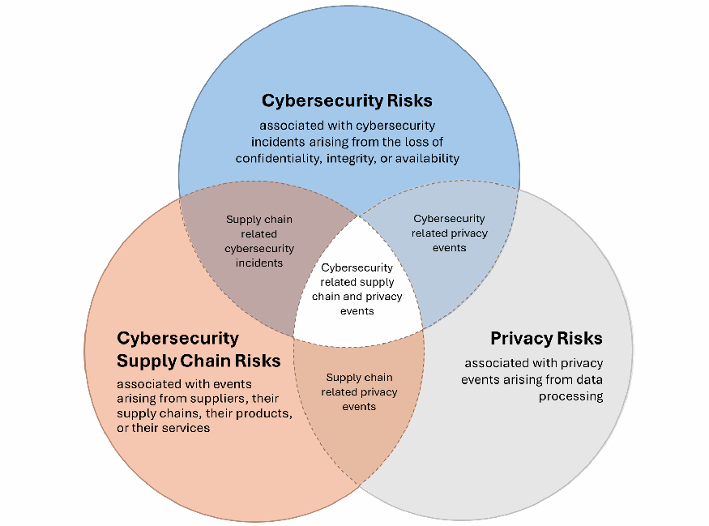
Fig. 1. Cybersecurity, privacy, and cybersecurity supply chain risk relationships
Fig. 1. サイバーセキュリティ、プライバシー、およびサイバーセキュリティ・サプライチェーンのリスク関係
未レビュー訳While security-related controls can support system privacy outcomes, privacy risks may require additional privacy-focused controls that go beyond protecting confidentiality, integrity, and availability. Some may also introduce privacy risks that require additional management, such as monitoring for insider threats. For example, an implemented software component may have vulnerabilities that allow organization users to gain unauthorized access to datasets with employees’ personal information.
セキュリティ関連の管理策はシステムのプライバシーの成果を支えることができる一方で、プライバシーリスクには機密性、完全性、および可用性の保護にとどまらない、プライバシーに焦点を当てた追加の管理策が必要となる場合がある。また、一部の管理策は、内部脅威の監視など、追加の管理を必要とするプライバシーリスクをもたらす可能性もある。例えば、実装されたソフトウェアコンポーネントに脆弱性があり、組織のユーザーが従業員の個人情報を含むデータセットへの不正アクセスを取得できるようになる可能性がある。
未レビュー訳Cybersecurity and cybersecurity supply chain controls may not address certain aspects of data handling and governance that can arise from the authorized processing of personal information. For example, an attacker may exfiltrate an organization’s customer data files through the exploitation of a third-party service provider entrusted with the data.
サイバーセキュリティおよびサイバーセキュリティ・サプライチェーンの管理策は、個人情報の正当な取り扱いから生じる可能性のあるデータ処理およびガバナンスの特定の側面に対処できない場合がある。例えば、攻撃者がデータを受託したサードパーティサービスプロバイダーを悪用して、組織の顧客データファイルを窃取する可能性がある。
未レビュー訳Unauthorized data access and authorized disclosures that are made without sufficient disassociability can introduce privacy problems for individuals that may have an impact on the organization and result in noncompliance costs, direct business costs, or other impacts [PDAP]. Incorporating the security, privacy, and C-SCRM controls into a unified system plan provides a holistic view of the risk management requirements and activities throughout the system life cycle.
不正なデータアクセスや、十分な非関連付け可能性なしに行われる許可された開示は、組織に影響を及ぼし、コンプライアンス違反コスト、直接的なビジネスコスト、またはその他の影響をもたらす可能性がある、個人に対するプライバシーの問題を引き起こす場合がある [PDAP]。セキュリティ、プライバシー、および C-SCRM の管理策を統合システム計画に組み込むことで、システムライフサイクル全体を通じたリスク管理要件および活動の全体像が提供される。
3. System Plan Elements
3. システム計画の構成要素
This section describes the types of system information to include in the system plan. Information management tools (e.g., GRC, SOAR, SIEM) can be used to capture, report, and update system information details following consistent and logical structures that address security, privacy, and C-SCRM risk management objectives. Organizations define the methods, structures, and formats used to develop system plans that include the described elements and additional organization- or system-specific elements as needed to achieve security, privacy, and cybersecurity supply chain risk management program objectives.
本セクションでは、システム計画に含めるシステム情報の種類について説明する。情報管理ツール（例：GRC、SOAR、SIEM）を使用して、セキュリティ、プライバシー、および C-SCRM のリスク管理目標に対処する一貫性のある論理的な構造に従って、システム情報の詳細を収集、報告、および更新することができる。組織は、セキュリティ、プライバシー、およびサイバーセキュリティ・サプライチェーンのリスク管理プログラムの目標を達成するために必要に応じて、説明された構成要素および追加の組織固有またはシステム固有の構成要素を含むシステム計画を策定するために使用される方法、構造、および形式を定義する。
3.1. System Plan Elements Summary
3.1. システム計画の構成要素の概要
The system plan elements summary in Table 1 is organized based on the RMF tasks in [SP800-37], where the system and privacy plan are identified as either potential inputs or expected outputs for tasks. Inputs and outputs from multiple RMF tasks may be combined to fully address some system plan element.
表1のシステム計画要素の概要は、システム計画およびプライバシー計画が各タスクの潜在的なインプットまたは期待されるアウトプットのいずれかとして特定されている[SP800-37]のRMFタスクに基づいて構成されている。一部のシステム計画要素に完全に対処するために、複数のRMFタスクからのインプットとアウトプットが組み合わされる場合がある。
未レビュー訳This structure provides a basis for the logical development and maintenance of a “living” system plan. The system plan elements enable an organization to determine a method for collecting and presenting information about the system, whether it is being developed or is authorized to operate. The information collected and reported for each element accurately communicates the efforts to safeguard the system information and components to organizational leadership, authorizing officials, system owners, and risk managers throughout the system life cycle.
この構造は、「生きた」システム計画の論理的な策定と維持のための基礎を提供する。システム計画の構成要素により、組織はシステムが開発中であるか運用を認可されているかにかかわらず、そのシステムに関する情報を収集および提示するための方法を決定できるようになる。各構成要素について収集および報告された情報は、システムライフサイクル全体を通じて、組織のリーダーシップ、認可責任者、システム所有者、およびリスク管理者に対し、システム情報およびコンポーネントを保護するための取り組みを正確に伝達する。
Each system plan element in Table 1 is cross-referenced with the corresponding RMF task outputs in Appendix A, Table 2. Section 3.2 discusses the objectives and content considerations for each system plan element. Section 4 describes additional considerations for the RMF steps to support those responsible for managing the development of system plans.
表1の各システム計画要素は、付録Aの表2にある対応するRMFタスクのアウトプットと相互参照されている。セクション3.2では、各システム計画要素の目的と内容に関する考慮事項について説明する。セクション4では、システム計画の策定管理を担当する担当者を支援するためのRMFステップに関する追加の考慮事項について説明する。
未レビュー訳System plan outline examples are provided as supplemental materials to this publication and show potential ways to combine these elements into an automated system plan report or system plan artifact.
システム計画のアウトラインの例は、本出版物の補足資料として提供されており、これらの要素を自動化されたシステム計画レポートまたはシステム計画アーティファクトに統合するための潜在的な方法を示している。
Table 1. System Plan Elements Summary
表1. システム計画要素の概要
未レビュー訳原本PDFの抜粋画像
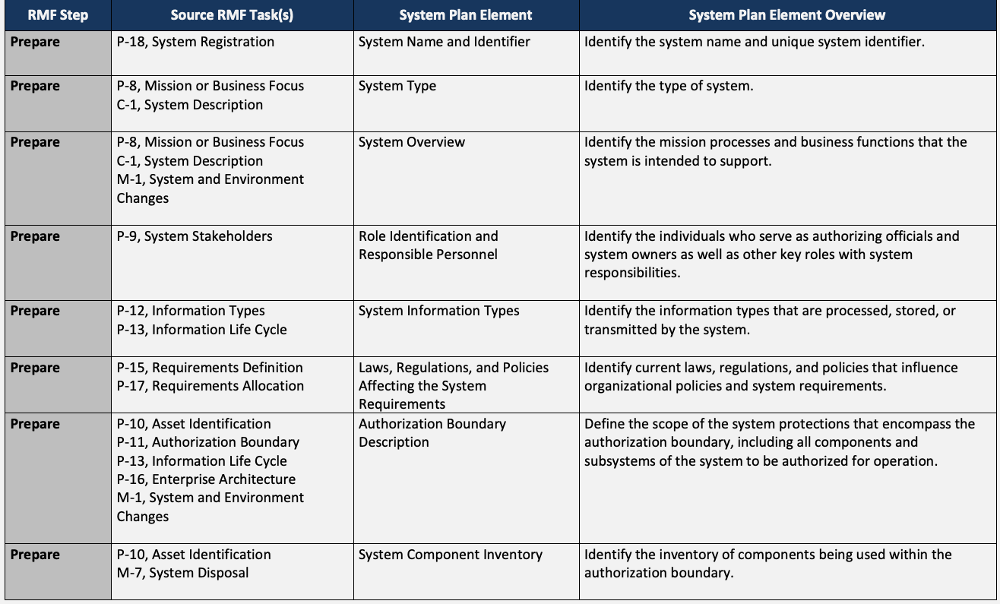
原本PDFの抜粋画像
原本PDFの抜粋画像
原本PDFの抜粋画像
原本PDFの抜粋画像
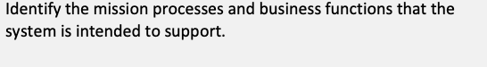
原本PDFの抜粋画像
原本PDFの抜粋画像
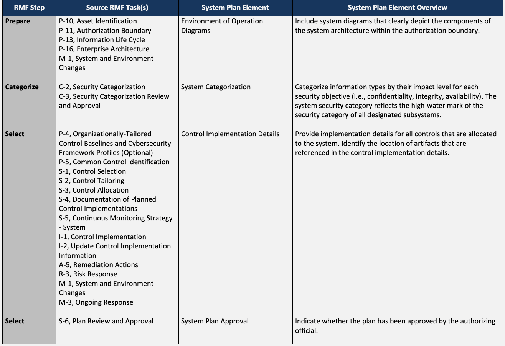
原本PDFの抜粋画像
原本PDFの抜粋画像
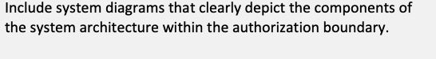
原本PDFの抜粋画像
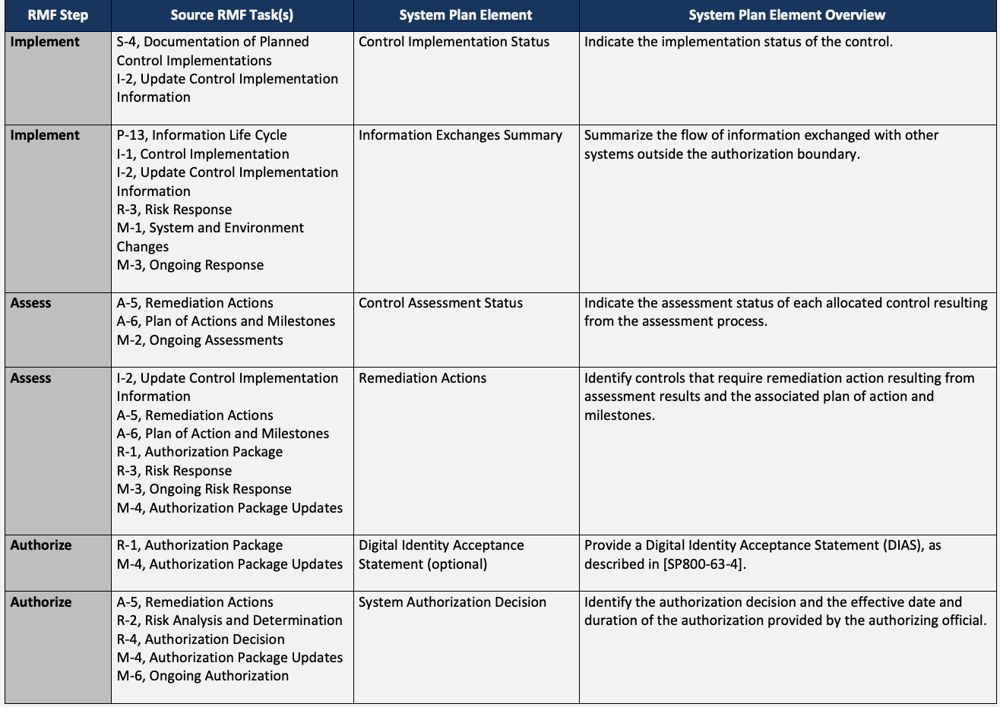
原本PDFの抜粋画像
原本PDFの抜粋画像
原本PDFの抜粋画像
原本PDFの抜粋画像
原本PDFの抜粋画像
原本PDFの抜粋画像
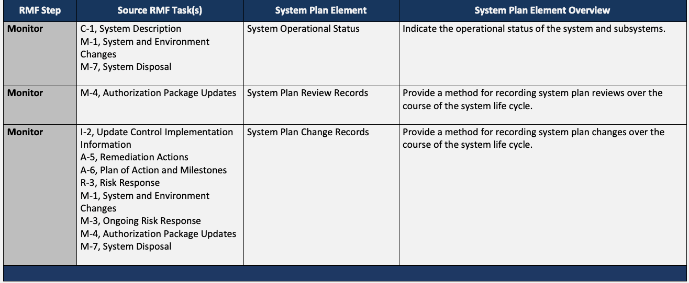
原本PDFの抜粋画像
3.2. System Plan Element Details
3.2. システム計画の構成要素の詳細
This section provides a discussion of each of the system plan elements identified in Table 1.
本節では、表1で特定された各システム計画要素についての説明を提供する。
System Name and Identifier
システム名および識別子
未レビュー訳Discussion: Designate a unique system name and identifier to distinguish one system from another in organizational records. Organizations determine the method for assigning the system name, an associated acronym, and a unique system identifier for all systems in the organization’s inventory based on the implementation of [SP800-53] PM-05, System Inventory. The system identifier may be automatically generated or manually assigned using organization-defined conventions.
考察：組織の記録においてシステムを相互に区別するために、一意のシステム名および識別子を指定する。組織は、[SP800-53] PM-05（システムインベントリ）の実施に基づき、組織のインベントリに含まれるすべてのシステムに対してシステム名、関連する頭字語、および一意のシステム識別子を割り当てる方法を決定する。システム識別子は、組織が定義した規則を用いて自動生成されても手動で割り当てられてもよい。
未レビュー訳The system name and identifier remain the same throughout the system life cycle to facilitate the management and tracking of system components, artifacts, assessment and monitoring reports, and risk-based decisions, as well as the traceability of responses to privacy and security events (e.g., access to data, data transfers). Where possible, the system name and identifier are referenced in PIAs and PRAs to link privacy risks to specific systems and their associated controls.
システムコンポーネント、成果物、評価およびモニタリングレポート、リスクに基づく意思決定の管理と追跡、ならびにプライバシーおよびセキュリティイベント（例：データへのアクセス、データ転送）への対応の追跡可能性を促進するため、システム名および識別子はシステムライフサイクルを通じて同一のままとする。可能であれば、プライバシーリスクを特定のシステムおよび関連する管理策に結び付けるため、システム名および識別子はPIAおよびPRAで参照される。
未レビュー訳For a complex system (see [SP800-37] Appendix G, Authorization Boundary Considerations), additional subsystem or system element identifiers may be assigned to reflect the relationship between the authorization boundary and the individual subsystems within the environment of operation.
複雑なシステム（[SP800-37] 付録G「認可境界の検討事項」を参照）については、運用環境内の認可境界と個々のサブシステムとの関係を反映するために、追加のサブシステムまたはシステム構成要素の識別子を割り当てることができる。
Related plan elements: System Type, System Overview
関連する計画要素：システムタイプ、システム概要
未レビュー訳System Type
システムタイプ
未レビュー訳Discussion: Identify key characteristics that define the type of system, such as:
考察：以下のように、システムタイプを定義する主要な特性を特定する：
未レビュー訳•Common control provider (e.g., data center facility, enterprise architecture services)
•共通管理策提供者（例：データセンター設備、エンタープライズアーキテクチャサービス）
•Implemented or supported technology (e.g., operational technology, cloud-based system, cloud-supported application, artificial intelligence system, high-performance computing)
•実装またはサポートされている技術（例：運用技術（OT）、クラウドベースのシステム、クラウドサポート型アプリケーション、人工知能システム、ハイパフォーマンスコンピューティング）
未レビュー訳•Environment Type (e.g., development, testing, training, production)
•環境タイプ（例：開発、テスト、トレーニング、本番運用）
•System exposure (e.g., restricted access, public-facing system, physically or logically isolated)
•システムのエクスポージャー（例：アクセス制限、一般公開システム、物理的または論理的な隔離）
未レビュー訳•System criticality11 (e.g., organization-critical, mission-critical, high-availability, low-priority)
•システムの重要度11（例：組織にとって極めて重要、ミッションクリティカル、高可用性、低優先度）
未レビュー訳•Ownership of the system (e.g., federal information system; government-owned, contractor-supported system; contractor-owned and operated system)
•システムの所有形態（例：連邦情報システム、政府所有・請負業者支援システム、請負業者所有・運用システム）
未レビュー訳•Function of the system (e.g., transaction processing, operational management, decision support, customer relationship management, science data processing, machine learning)
•システムの機能（例：トランザクション処理、運用管理、意思決定支援、顧客関係管理（CRM）、科学データ処理、機械学習）
未レビュー訳The terms “general support system,” “major application,” and “minor application” for system types have been deprecated for federal information systems following [OMBA-130] requirements. This change reflects shifts in technology away from perimeter-based security and toward risk-based requirements for holistically protecting systems and system data, including the system infrastructure and applications within the infrastructure.
システムタイプを表す「一般サポートシステム（general support system）」、「主要アプリケーション（major application）」、および「副次アプリケーション（minor application）」という用語は、[OMBA-130] の要件に従い、連邦情報システムにおいて非推奨となった。この変更は、境界型セキュリティから脱却し、システムインフラストラクチャおよびそのインフラストラクチャ内のアプリケーションを含む、システムとシステムデータを包括的に保護するためのリスクベースの要件へと向かう技術の移行を反映している。
未レビュー訳The system type is distinct from the system information types used to assign the security categorization of the system.
システムタイプは、システムのセキュリティカテゴリ分けを割り当てるために使用されるシステム情報タイプとは異なる。
未レビュー訳Related plan elements: System Overview, Authorization Boundary Description
関連する計画要素：システム概要、承認境界の説明
未レビュー訳System Overview
システム概要
未レビュー訳Discussion: Provide a brief overview of the mission/business functions of the system and the purpose of the system (e.g., economic indicator, network support for an agency, business census data analysis, crop reporting support).The overview may highlight risk management strategies for high-risk aspects of the environment of operation, such as high-availability components or public-facing services.
考察：システムのミッション／業務機能およびシステムの目的（例：経済指標、機関のネットワークサポート、事業所センサスデータ分析、作物報告サポート）の簡潔な概要を提供すること。この概要では、高可用性コンポーネントや公開サービスなど、運用環境の高リスクな側面に対するリスクマネジメント戦略を強調してもよい。
未レビュー訳Summarize the data and information types handled by the system (e.g., CUI, privacy). Highlight the relationship between the system owner and data owner responsibilities for data collection, processing, and disposal as provided from the organization or system data governance strategy. In the privacy plan, the overview aligns with the information provided in the PIA, PRA, and other applicable privacy documentation (e.g., notices to the public, information exchange agreements).
システムが扱うデータおよび情報タイプ（例：CUI、プライバシー）を要約する。組織またはシステムのデータガバナンス戦略から提供される、データの収集、処理、および廃棄に関するシステム所有者とデータ所有者の責任関係を強調する。プライバシー計画において、概要はPIA、PRA、およびその他の該当するプライバシー文書（例：一般への通知、情報交換協定）で提供される情報と整合する。
Compile a list of the technologies being used to support the mission/business functions and factors that present additional security- or privacy-specific risks, such as cloud-based products and services, “bring your own device” (BYOD) policies, or the processing of data about individuals. Reference key design considerations (e.g., centralization methods, continuous integration and continuous delivery, zero trust architecture, emerging technologies) in the approach for identifying and managing system risks.
ミッション／業務機能をサポートするために使用されている技術のリストと、クラウドベースの製品・サービス、「自己所有デバイスの持ち込み」（BYOD）ポリシー、個人に関するデータの処理など、追加のセキュリティまたはプライバシー固有のリスクをもたらす要因のリストを作成する。システムリスクの特定および管理のアプローチにおいて、主要な設計上の考慮事項（例：集中化手法、継続的インテグレーションと継続的デリバリー、ゼロトラストアーキテクチャ、新興技術）を参照する。
未レビュー訳Identify the system user base and user roles that require privileged access to specific components, enclaves, or data flows that contain data about individuals to ensure accountability and transparency.
説明責任と透明性を確保するために、個人に関するデータを含む特定のコンポーネント、エンクレーブ、またはデータフローへの特権アクセスを必要とするシステムのユーザーベースおよびユーザーロールを特定する。
Summarize the system’s supply chain profile and highlight C-SCRM-relevant technologies (e.g., foreign-sourced components, vendor-managed services, TAA/Common Criteria/NIAP compliance or open-source dependencies) to support a holistic understanding of system risks and to ensure alignment of security, privacy, and C-SCRM risk management.
システムリスクの全体的な理解を深め、セキュリティ、プライバシー、およびC-SCRMのリスクマネジメントの整合性を確保するために、システムのサプライチェーンプロファイルを要約し、C-SCRMに関連する技術（例：外国調達のコンポーネント、ベンダー管理サービス、TAA／コモンクライテリア／NIAP準拠、またはオープンソースの依存関係）を強調する。
Related plan elements: System Type, System Information Types, Authorization Boundary Description
関連する計画要素：システムタイプ、システム情報タイプ、認可境界の説明
未レビュー訳Role Identification and Responsible Personnel
役割の特定および責任者
未レビュー訳Discussion: Identify the role of each individual that has responsibilities for coordinating system-specific risk management activities. An individual’s organizational job title may not clearly demonstrate or align with the risk management role and responsibilities. Identified individuals are generally held accountable for the ongoing operation of the system, the continuous monitoring of the implemented controls, and additional risk mitigation efforts that are required throughout the system life cycle. Based on the plan type, key roles include the system security officer, system privacy officer, and personnel who support the C-SCRM Program Management Office (PMO).
考察：システム固有のリスクマネジメント活動を調整する責任を持つ各個人の役割を特定する。個人の組織における役職名は、リスクマネジメントの役割や責任を明確に示していなかったり、整合していなかったりする場合がある。特定された個人は一般に、システムの継続的な運用、実装された管理策の継続的なモニタリング、およびシステムのライフサイクル全体を通じて必要とされる追加のリスク軽減の取り組みに対して説明責任を負う。計画のタイプに基づき、主要な役割にはシステムセキュリティ担当官、システムプライバシー担当官、およびC-SCRMプログラムマネジメントオフィス（PMO）を支援する人員が含まれる。
未レビュー訳Common roles and responsibilities of key participants involved in risk management activities are provided in [SP800-37] Appendix D, Roles and Responsibilities. Additional responsibilities for roles related to the development and management of system plans are provided as a supplement to this publication. An organization may identify other individuals in roles that directly support system plan development, as needed.
リスクマネジメント活動に関与する主要な関係者の共通の役割と責任は、[SP800-37] 付録D「Roles and Responsibilities（役割と責任）」に示されている。システム計画の策定および管理に関連する役割の追加の責任は、本出版物の補足として提供されている。組織は必要に応じて、システム計画の策定を直接支援する役割を担うその他の個人を特定してもよい。
If an individual has multiple roles related to system security, privacy, or cybersecurity supply chain risk management, the system plan may provide additional information for managing the separation of duties and define the risk mitigations for any conflicts of interest.
個人がシステムセキュリティ、プライバシー、またはサイバーセキュリティサプライチェーンリスクマネジメントに関連する複数の役割を持つ場合、システム計画には職務分掌を管理するための追加情報を提供し、いかなる利益相反に対するリスク軽減策も定義することができる。
未レビュー訳When applicable, identify the roles and responsibilities of personnel responsible for external services supporting the system (i.e., account manager, service coordinator). These individuals may be different from those identified in information exchange artifacts that support [SP800-53] CA-03, Information Exchange.
該当する場合、システムをサポートする外部サービスを担当する担当者（例：アカウントマネージャー、サービスコーディネーター）の役割と責任を特定する。これらの個人は、[SP800-53] CA-03「Information Exchange（情報交換）」をサポートする情報交換成果物で特定された担当者とは異なる場合がある。
Organizations include the following contact information for each identified individual:
組織は、特定された各個人について以下の連絡先情報を含める：
•Name
•氏名
•Risk-management-related role (e.g., system-specific role, organizational role)12
•リスクマネジメント関連の役割（例：システム固有の役割、組織的な役割）12
未レビュー訳•Organizational unit, department, or division
•組織単位、部署、または部門
未レビュー訳•Primary business phone number
•主業務電話番号
•Alternate business phone number
•副業務電話番号
•Business email address
•業務メールアドレス
未レビュー訳Restrict contact information to business information to avoid exposing personal information. Using personal information (e.g., a home phone or personal cell phone number as the “alternate business phone number”) may create unnecessary privacy risks for the individuals identified as having a role protecting the system.
個人情報の漏えいを避けるため、連絡先情報は業務情報に限定する。個人情報（例：「副業務電話番号」としての自宅電話番号や個人の携帯電話番号など）を使用すると、システムの保護に関する役割を持つと特定された個人に不必要なプライバシーリスクが生じる可能性がある。
Related plan elements: System Overview, Authorization Boundary Description
関連する計画要素：システム概要、承認境界の記述
未レビュー訳System Information Types
システム情報タイプ
未レビュー訳Discussion: Identify the [SP800-60v2] information types processed, stored, and transmitted by the system. Understanding the information types handled by the system and the information life cycle for each information type across all stages of the system life cycle can assist the system owner in recognizing where security and privacy risks could arise, identifying considerations for protecting the information, and applying controls where they can be most effective.
考察：システムによって処理、格納、送信される [SP800-60v2] の情報タイプを特定する。システムが取り扱う情報タイプと、システムライフサイクルの全段階における各情報タイプの情報ライフサイクルを理解することは、セキュリティおよびプライバシーのリスクがどこで生じる可能性があるかを認識し、情報を保護するための検討事項を特定し、最も効果的となる管理策を適用する上でシステム所有者を支援できる。
未レビュー訳The types of information handled by the system in support of organizational mission/business functions and processes are key to determining the system security category and the initial selection of controls.
組織のミッション／業務機能およびプロセスを支援してシステムが取り扱う情報のタイプは、システムのセキュリティカテゴリおよび管理策の初期選択を決定するための鍵となる。
Related plan elements: System Categorization
関連する計画要素：システムのカテゴリ化
未レビュー訳Laws, Regulations, and Policies Affecting the System Requirements
システム要件に影響を与える法律、規制、および方針
未レビュー訳Discussion: Identify the sources of specific requirements for the:
考察：以下に関する具体的な要件の出所を特定する：
•Confidentiality, integrity, or availability of the system components and information
•システムコンポーネントおよび情報の機密性、完全性、または可用性
•Predictability, manageability, and disassociability of information processed, stored, or transmitted by the system
•システムによって処理、格納、または送信される情報の予測可能性（Predictability）、管理可能性（Manageability）、および非関連付け可能性（Disassociability）
•Acquisition of trustworthy system components through the supply chain
•サプライチェーンを通じた信頼できるシステムコンポーネントの調達
未レビュー訳Organizational policies may identify the laws, regulations, and policies that are applicable to all systems within the organization or include a standardized list of requirement sources in an organizational template for system plans. As the legal and regulatory landscape evolves, the system plans are updated to adapt to new security, privacy, and cybersecurity supply chain risk management requirements, such as those that arise from the use of emerging technologies, automated decision-making, and data analytics. For example, privacy laws that govern data subject rights directly influence the development of the system privacy plan, including how data is handled and how the system protects individual rights, frames broader privacy risks, and addresses organizational privacy goals. The C-SCRM plan identifies suppliers or products that are prohibited by law, subject to regulatory exclusions, and constrained by organization- or system-specific policies.
組織のポリシーでは、組織内のすべてのシステムに適用される法律、規制、およびポリシーを特定する場合や、システム計画用の組織テンプレートに要件ソースの標準化されたリストを含める場合がある。法規制の状況が進化するにつれて、新興技術の利用、自動化された意思決定、データ分析などから生じる新たなセキュリティ、プライバシー、およびサイバーセキュリティサプライチェーンリスクマネジメント要件に適応するために、システム計画は更新される。例えば、データ主体の権利を管理するプライバシー法は、データの取り扱い方法や、システムが個人の権利をどのように保護し、より広範なプライバシーリスクをどのように枠組み化し、組織のプライバシー目標にどのように対処するかなど、システムプライバシー計画の策定に直接影響を与える。C-SCRM計画は、法律で禁止されているサプライヤーや製品、規制による除外の対象となるサプライヤーや製品、および組織固有またはシステム固有のポリシーによって制約を受けるサプライヤーや製品を特定する。
Related plan elements: System Overview, Control Implementation Details
関連する計画要素：システム概要、コントロール実装の詳細
未レビュー訳Authorization Boundary Description
承認境界の記述
未レビュー訳Discussion: Identify the subsystems and system elements that comprise the system to be authorized for operation or use by an authorizing official (i.e., the scope of the authorization). Summarize key aspects of the system architecture, including the use of subsystems and external service providers; physical or logical separations; local and remote management functionalities; customized or specialized components, functions, or data flows; and the use of private, public, or hybrid cloud service provider services.
考察：承認権限者によって運用または使用が承認されるシステムを構成するサブシステムおよびシステム要素（すなわち、承認の範囲）を特定する。サブシステムおよび外部サービスプロバイダーの使用、物理的または論理的な分離、ローカルおよびリモートの管理機能、カスタマイズまたは特殊化されたコンポーネント、機能、データフロー、ならびにプライベート、パブリック、またはハイブリッドクラウドサービスプロバイダーサービスの利用など、システムアーキテクチャの主要な側面を要約する。
未レビュー訳The description can also identify the following:
記述では以下を特定することもできる：
•Enabling systems that may provide services or functionalities used or inherited by the system or other systems that interact with the operational environment outside of the authorization boundary and may exist outside the environment of operation, as explained in [SP800-37]
•[SP800-37] で説明されているように、システムまたは認可境界外の運用環境と相互作用する他のシステムによって使用または継承されるサービスや機能を提供する可能性があり、運用環境の外に存在する可能性もある実現システム
•System elements that are critical to both the mission and organization
•ミッションと組織の双方にとって不可欠なシステム要素
•System functions that are subject to additional requirements, such as the protection of CUI
•CUIの保護など、追加の要件が課されるシステム機能
•Any third-party authorization services and API implementations as part of the identification of external system services that support the system
•システムをサポートする外部システムサービスの特定の一環としての、あらゆるサードパーティの認可サービスおよびAPI実装
•The set of common controls to be authorized for inheritance purposes
•継承の目的で認可される共通管理策のセット
未レビュー訳While the system security plan may focus on broad cybersecurity risks, the system privacy plan highlights the role of the system in handling personal data and the controls implemented in response to associated privacy risks. For example, the system privacy plan may address how risks related to the collection, use, and sharing of data across multiple authorization boundaries are managed and how those practices align with the organization’s privacy policies
システムセキュリティ計画が広範なサイバーセキュリティリスクに焦点を当てることがあるのに対し、システムプライバシー計画は、個人データを扱うシステムにおける役割と、関連するプライバシーリスクに対応して実装される管理策を強調する。例えば、システムプライバシー計画では、複数の認可境界にわたるデータの収集、使用、共有に関連するリスクがどのように管理されているか、またそれらの慣行が組織のプライバシーポリシーとどのように整合しているかを扱うことがある
未レビュー訳Related plan elements: System Type, Environment of Operation Diagrams, System Component Inventory
関連する計画要素：システムタイプ、運用環境図、システムコンポーネントインベントリ
未レビュー訳System Component Inventory
システムコンポーネントインベントリ
未レビュー訳Discussion: Summarize the component inventory provided in the [SP800-53] CM-08, System Component Inventory, control implementation. System components are discrete, identifiable information technology assets that represent the building blocks of a system, including hardware, software, and firmware. Organizations can associate distinct hardware and software components with specific system elements defined in the authorization boundary. Identify the criticality of individual system components, particularly those that support mission-critical functions or multiple system elements.
考察：[SP800-53] CM-08「システムコンポーネントインベントリ」管理策の実装で提供されるコンポーネントインベントリを要約する。システムコンポーネントとは、ハードウェア、ソフトウェア、ファームウェアなど、システムの構成要素を表す、個別の識別可能な情報技術資産である。組織は、認可境界内で定義された特定のシステム要素に、個別のハードウェアおよびソフトウェアコンポーネントを関連付けることができる。個々のシステムコンポーネント、特にミッションクリティカルな機能や複数のシステム要素をサポートするコンポーネントの重要度を特定する。
The component inventory presented in the privacy plan can support an understanding of the components that participate in the business process flows and the data transactions that involve individual PII data elements. While specific technical details about the components are generally included as part of the security plan, the privacy plan can associate specific privacy-related data flows with individual components or groups of components (e.g., databases, applications, file storage arrays) which are subject to privacy management requirements.
プライバシー計画に提示されるコンポーネントインベントリは、ビジネスプロセスのフローや個々のPIIデータ要素に関係するデータトランザクションに関与するコンポーネントの理解をサポートできる。コンポーネントに関する具体的な技術的詳細は通常セキュリティ計画の一部として含まれるが、プライバシー計画では、プライバシー管理要件の対象となる個々のコンポーネントまたはコンポーネントのグループ（データベース、アプリケーション、ファイルストレージアレイなど）に特定のプライバシー関連のデータフローを関連付けることができる。
•Hardware component description
•ハードウェアコンポーネントの説明
未レビュー訳Component function and role o Unique component identifier (e.g., serial number, asset tracking identifier, other o service codes that identify supply chain information, designation for physical or virtual implementation)
コンポーネントの機能および役割 o 一意のコンポーネント識別子（例：シリアル番号、資産追跡識別子、サプライチェーン情報を特定するその他の o サービスコード、物理的または仮想的な実装の指定）
未レビュー訳Manufacturer and model, including sub-model identifiers or distinctions (e.g., o subcomponent country of origin)
製造業者およびモデル（サブモデルの識別子または区別を含む）（例： o サブコンポーネントの原産国）
未レビュー訳Deployment date, warranty duration, expiration date, and maintenance support o contract status
導入日、保証期間、有効期限、および保守サポート o 契約状況
未レビュー訳Specific physical locations (e.g., room number, rack and slot number) or logical o locations for virtualized components either hosted on-premises or using external third-party services
特定の物理的な場所（例：部屋番号、ラックおよびスロット番号）、またはオンプレミスでホストされているかもしくは外部のサードパーティサービスを使用している仮想化コンポーネントの論理的な o 場所
未レビュー訳Differentiate between physical and virtual “hardware” components that host the o software products that support organizational missions, business functions, and mission/business processes
組織のミッション、業務機能、およびミッション／業務プロセスをサポートするソフトウェア製品をホストする物理的および仮想的な「ハードウェア」コンポーネントの o 区別
未レビュー訳•Software product description
•ソフトウェア製品の説明
未レビュー訳Purpose o Product type (e.g., COTS, GOTS) o Software developer, manufacturer, vendor, and version or build information, as o indicated in the Software Bill of Materials (SBOM) Secure software development attestation13 o Product license o Type (e.g., single user, volume license, public license, freeware) Expiration date/renewal date Component installation location
目的 o 製品タイプ（例：COTS、GOTS） o ソフトウェア部品構成表（SBOM）に記載されているソフトウェア開発者、製造業者、ベンダー、およびバージョンまたはビルド情報 o セキュアソフトウェア開発の証明13 o 製品ライセンス o タイプ（例：シングルユーザー、ボリュームライセンス、パブリックライセンス、フリーウェア） 有効期限／更新日 コンポーネントのインストール場所
未レビュー訳o Software warranty and maintenance support contract status
The validation of the SBOM can be addressed as part of the control implementation for the retention and management of the software inventory. Reviews of other supplier-provided component inventory lists can provide a way to also check for manifestless components, which may contain additional vulnerabilities. [SP800-53] SR-04, Provenance, provides guidelines for acquiring information about the provenance/pedigree14 of the software and firmware included in the inventory.
o ソフトウェアの保証および保守サポート契約の状況
SBOMの検証は、ソフトウェアインベントリの保持および管理のための管理策実装の一環として対処できる。サプライヤーから提供された他のコンポーネントインベントリリストをレビューすれば、マニフェストのないコンポーネントも確認できる。そうしたコンポーネントには追加の脆弱性が含まれている可能性がある。[SP800-53] SR-04「Provenance（来歴）」は、インベントリに含まれるソフトウェアおよびファームウェアの来歴／ペディグリー14に関する情報を取得するためのガイドラインを提供している。
The capture date of the inventory summary can convey the timeliness of the summary related to continuous monitoring activities, system plan approval, and system authorization. Automation may be used to generate a summary from the authoritative inventory data repository.
インベントリ要約の取得日は、継続的モニタリング活動、システム計画の承認、およびシステム認可に関連する要約の適時性を示すことができる。信頼できるインベントリデータリポジトリから要約を生成するために、自動化が使用される場合がある。
未レビュー訳Provide a reference to the authoritative system component inventory data repository. The system component inventory is often distinct from the organization’s physical inventory, which may be handled through a distinct procurement and property management repository. For instance, the system component inventory accounts for hardware as well as instances of virtualized components on host devices that may not be included in the physical inventory repository.
信頼できるシステムコンポーネントインベントリデータリポジトリへの参照を提供する。システムコンポーネントインベントリは、個別の調達および資産管理リポジトリを通じて処理される場合がある組織の物理インベントリとは区別されることが多い。たとえば、システムコンポーネントインベントリは、ハードウェアだけでなく、物理インベントリリポジトリには含まれない可能性があるホストデバイス上の仮想化コンポーネントのインスタンスも考慮する。
未レビュー訳Related plan elements: Authorization Boundary Description, Environment of Operation Diagrams
関連する計画要素：認可境界の説明、運用環境図
未レビュー訳Environment of Operation Diagrams
運用環境図
未レビュー訳Discussion: Provide visual representations of key internal boundaries, critical components, subsystems, primary and secondary data stores, virtual components, information exchanges, and services from third-party providers to demonstrate how resilience and redundancy are addressed in the system architecture. Supporting topology narratives may be included.
考察：システムアーキテクチャにおいて耐障害性（レジリエンス）と冗長性がどのように対処されているかを実証するために、主要な内部境界、重要なコンポーネント、サブシステム、プライマリおよびセカンダリのデータストア、仮想コンポーネント、情報交換、ならびにサードパーティプロバイダからのサービスの視覚的表現を提供する。補足的なトポロジーの説明を含めることができる。
未レビュー訳Diagrams may identify the usage of API implementations as part of the identification of external system services as well as connection points and data flow for information exchanges.
図は、外部システムサービス、ならびに情報交換のための接続ポイントおよびデータフローの特定の一環として、API実装の使用状況を特定することができる。
When developing or generating diagrams, certain system architecture information (e.g., IP addresses, network routing and access rules) may be redacted commensurate with organizational system data protection requirements. Additional artifacts associated with the diagram may detail information about the architecture, such as IP subnets, MAC addresses, and relevant ports that support communication for key services.
図を策定または生成する際、組織のシステムデータ保護要件に応じて、特定のシステムアーキテクチャ情報（例：IPアドレス、ネットワークルーティングおよびアクセスルール）をマスキング（墨消し）しても構わない。図に関連する追加の成果物には、主要サービスの通信をサポートするIPサブネット、MACアドレス、関連ポートなど、アーキテクチャに関する詳細情報を記載できる。
未レビュー訳•System/Subsystem Diagrams
•システム／サブシステム図
未レビュー訳Identify the physical and logical locations of active system components in the authorization boundary inventory. Components are identified based on their roles in the system, such as application interfaces, information data stores, or development, test, and production environments. Diagrams account for all system components, whether they are located on premises, hosted by an external system, virtualized on system host devices, physically or logically isolated within the authorization boundary, or physically or virtually hosted by third-party service providers. Automation may be used to link the components represented in the diagram to the inventory source data.
認可境界インベントリ内のアクティブなシステムコンポーネントの物理的および論理的な場所を特定する。コンポーネントは、アプリケーションインターフェース、情報データストア、あるいは開発・テスト・本番環境など、システム内での役割に基づいて特定される。図には、オンプレミスにあるか、外部システムによってホストされているか、システムホストデバイス上で仮想化されているか、認可境界内で物理的または論理的に分離されているか、あるいはサードパーティサービスプロバイダによって物理的または仮想的にホストされているかを問わず、すべてのシステムコンポーネントが考慮される。図に示されているコンポーネントをインベントリのソースデータにリンクするために、自動化を使用することができる。
Physical and environmental protections are identified, including physical entry points and the locations of key environmental control systems (e.g., climate control, fire control, water control and detection) components, such as sensors and shut-off valves.
物理的エントリポイントや、主要な環境制御システム（例：空調管理、消火制御、水の制御・検知）のコンポーネント（センサーや遮断弁など）の設置場所を含め、物理的および環境的保護が特定される。
•System/Network Architecture Diagrams
•システム／ネットワークアーキテクチャ図
未レビュー訳Illustrate the physical and logical boundaries for communication between system components, including:
以下を含む、システムコンポーネント間の通信に関する物理的および論理的な境界を図示する。
未レビュー訳Technologies used to define the authorization boundary and to enable o communication between components and services within the boundary or from third-party providers
認可境界を定義し、境界内のコンポーネントおよびサービス間、またはサードパーティプロバイダーからの通信を可能にするために使用される技術 o
未レビュー訳Data routing and traffic controls, including monitoring for suspicious network o activity
疑わしいネットワークアクティビティの監視を含む、データルーティングおよびトラフィック制御 o
未レビュー訳Communication routes for specialized components (e.g., operational technology, o Internet of Things)
特殊なコンポーネント（例：運用技術、Internet of Things）向けの通信ルート o
未レビュー訳Components involved in the physical and logical protection of other components o Components that are physically or logically isolated (e.g., air-gapped) o
他のコンポーネントの物理的および論理的保護に関与するコンポーネント o 物理的または論理的に隔離されている（例：エアギャップされた）コンポーネント o
未レビュー訳•Data Flow Diagrams
•データフロー図
未レビュー訳Identify the direction of data exchanges and the components that receive and transmit data, including:
以下を含む、データ交換の方向、ならびにデータを送受信するコンポーネントを特定する：
Data types (e.g., privacy, CUI) and associated security impact levels o Where data is created, processed, and delivered (e.g., database servers, o application servers, storage networks, replication services)
データタイプ（例：プライバシー、CUI）および関連するセキュリティ影響レベル o データが作成、処理、配信される場所（例：データベースサーバー、アプリケーションサーバー、ストレージネットワーク、レプリケーションサービス） o
未レビュー訳Where data enters and exits key internal boundaries, including any data loss o protection mechanisms and flow control mechanisms based on data labels or data classification
データラベルまたはデータ分類に基づくデータ損失防止メカニズムおよびフロー制御メカニズムを含む、データが主要な内部境界に出入りする場所 o
未レビュー訳The flow of information that results from information exchanges with external o organization systems, including any data movement constraints due to laws, regulations, policies, or agreement limitations
法律、規制、ポリシー、または合意書の制限によるデータ移動の制約を含む、外部組織システムとの情報交換から生じる情報の流れ
未レビュー訳Related plan elements: System Type, System Information Types, Authorization Boundary Description, System Component Inventory
関連する計画要素：システムタイプ、システム情報タイプ、認可境界の説明、システムコンポーネントインベントリ
未レビュー訳System Categorization
システムのカテゴリ分け
未レビュー訳Discussion: Assign the security category according to the security impact levels (i.e., low, moderate, and high) associated with the information types processed, stored, and transmitted by the system following the guidelines in [SP800-60v1]. The security category is a key factor when selecting a [SP800-53B] security baseline as the starting point for the selection of controls.
考察：[SP800-60v1] のガイドラインに従い、システムによって処理、保存、送信される情報タイプに関連付けられたセキュリティ影響レベル（すなわち、低、中、高）に従ってセキュリティカテゴリを割り当てる。セキュリティカテゴリは、管理策の選択の出発点として [SP800-53B] のセキュリティベースラインを選択する際の重要な要素である。
Impact levels are based on risk management activities, system artifacts (e.g., Risk Assessment Report, PIA, SORN), guidelines on the categorization of federal information and systems [FIPS199], and justifications for adjusting the [SP800-60v2] provisional impact levels. Special conditions may be applied to the provisional impact levels for each information type. The high-water mark for each of the security impacts determines the final system category.
影響レベルは、リスクマネジメント活動、システム成果物（例：リスクアセスメントレポート、PIA、SORN）、連邦政府の情報およびシステムのカテゴリ分けに関するガイドライン [FIPS199]、ならびに [SP800-60v2] の暫定影響レベルを調整するための正当な理由に基づいている。各情報タイプの暫定影響レベルには特別な条件が適用される場合がある。各セキュリティ影響のハイウォーターマーク（最高水準）によって、最終的なシステムカテゴリが決定される。
未レビュー訳Related plan elements: System Information Types
関連する計画要素：システム情報タイプ
未レビュー訳Control Implementation Details
管理策の実装の詳細
未レビュー訳Discussion: Provide implementation details for each control that is selected and allocated to the system. Maintaining accurate control implementation details throughout the system life cycle supports ongoing assessment and continuous monitoring activities that evaluate the effectiveness of the control implementation.
考察：選択され、システムに割り当てられた各管理策の実装の詳細を提供する。システムライフサイクル全体を通じて正確な管理策の実装の詳細を維持することは、管理策の実装の有効性を評価する継続的なアセスメントおよび継続的モニタリング活動を支援する。
未レビュー訳As explained in [SP800-53], controls are outcome-based and “are selected and implemented by the organization in order to satisfy the system requirements.” The implementation details reflect how requirement outcomes are achieved, rather than restating the control statement as a requirement. System-specific implementation details or common control implementation details for a common control plan indicate how to address risk management requirements based on the “as-implemented” state of the control, including:
[SP800-53] で説明されているように、管理策は成果ベースであり、「システム要件を満たすために組織によって選択および実装され」る。実装の詳細は、管理策ステートメントを要件として言い直すのではなく、要件の成果がどのように達成されるかを反映する。システム固有の実装の詳細、または共通管理策計画における共通管理策の実装の詳細は、管理策の「実装された（as-implemented）」状態に基づいて、以下を含め、リスクマネジメント要件に対処する方法を示す。
•Information that addresses basic questions (i.e., who, what, where, when, why, and how) about security, privacy, and supply chain risk management requirements
•セキュリティ、プライバシー、およびサプライチェーンリスクマネジメント要件に関する基本的な質問（すなわち、誰が、何を、どこで、いつ、なぜ、どのように）に対処する情報
未レビュー訳Roles or specific entities that are responsible for control implementation, o including information about shared responsibilities for hybrid controls
ハイブリッドコントロールの共有責任に関する情報を含む、コントロールの実装に責任を負う役割または特定のエンティティ o
未レビュー訳Components, products, or services associated with the control o Results of tailoring activities and tailoring decisions o Planned inputs, related data sources, and expected system outputs for controls o that are implemented in the hardware, software, or firmware components of the system
コントロールに関連するコンポーネント、製品、またはサービス o テーラリング活動およびテーラリング決定の結果 o システムのハードウェア、ソフトウェア、またはファームウェアコンポーネントに実装されるコントロールに関する、計画された入力、関連データソース、および期待されるシステム出力 o
未レビュー訳Considerations for additional technical objectives (i.e., continuous o integration/continuous delivery, zero trust architecture, artificial intelligence and machine learning) addressed by the control implementation
コントロールの実装によって対処される、追加の技術目標（すなわち、継続的インテグレーション／継続的デリバリー、ゼロトラストアーキテクチャ、人工知能および機械学習）に対する考慮事項 o
未レビュー訳Reliance on automation for control monitoring, including performance o thresholds defined for the implementation that can be evaluated using automation, or a combination of manual and automated methods
自動化、または手動と自動化手法の組み合わせを使用して評価できる、実装に対して定義されたパフォーマンスしきい値を含む、コントロール監視における自動化への依存 o
未レビュー訳•Rationale and approval for tailoring associated with the control (see Sec. 4.3.1)
•管理策に関連するテーラリングの根拠および承認（Sec. 4.3.1 を参照）
•Location of policy and procedure artifacts associated with the implementation
•実装に関連するポリシーおよび手順の成果物の場所
未レビュー訳Reference sections of operational procedures rather than including the o procedures in the system plan.
運用手順書をシステム計画書に含めるのではなく、運用手順書の該当セクションを参照すること。
未レビュー訳Identify sources of information relevant to the control, such as network o monitoring tools, vulnerability scanning tools, endpoint management tools, and GRC, SOAR, and SIEM tools.
ネットワーク監視ツール、脆弱性スキャンツール、エンドポイント管理ツール、GRC、SOAR、SIEMツールなど、管理策に関連する情報源を特定すること。
未レビュー訳•Description of metrics that are collected and analyzed to monitor the control implementation, including the baseline and threshold definitions used to evaluate control conformance to implementation procedures and parameters
•実施手順およびパラメータに対する管理策の適合性を評価するために使用されるベースラインおよびしきい値の定義を含む、管理策の実施を監視するために収集および分析されるメトリクスの説明
未レビュー訳•Inherited risks from the common control implementations
•共通管理策の実施から継承されたリスク
•Control assessment status (i.e., satisfied, other than satisfied)
•管理策のアセスメントステータス（すなわち、満たされている［satisfied］、満たされている以外［other than satisfied］）
未レビュー訳Automation can provide the ability to include the assessment history, including o the results of control monitoring activities.
自動化により、管理策の監視活動の結果を含むアセスメント履歴を含める機能を提供できる。
未レビュー訳Reference plans of action and milestones (POA&Ms), remediation, and retest o artifacts for controls that are identified as “other than satisfied.”
「満たされている以外（other than satisfied）」として特定された管理策について、行動計画およびマイルストーン（POA&M）、是正措置、再テストの成果物を参照すること。
未レビュー訳To address the inheritance of controls from common control providers, the control implementation details in the system plan may:
共通管理策プロバイダーからの管理策の継承に対処するために、システム計画書内の管理策実装の詳細は、以下を行ってもよい：
•Include a reference to common controls inherited by the system
•システムによって継承される共通管理策への参照を含めること
未レビュー訳Implementation details for common controls are provided in the artifacts o developed by common control providers that are made available to system owners.
共通管理策の実装の詳細は、共通管理策プロバイダーによって開発され、システム所有者が利用できるようにされたアーティファクトで提供される。
未レビュー訳Controls that are inherited from cloud service providers may require additional o documentation, such as the Control Implementation Summary/Customer Responsibility Matrix (CIS/CRM), which conveys the control implementation responsibilities between the cloud service provider and their customer.
クラウドサービスプロバイダーから継承される管理策には、クラウドサービスプロバイダーとその顧客との間での管理策実装の責任を伝える管理策実装サマリー／顧客責任マトリクス（CIS/CRM）などの追加の文書化が必要となる場合がある。
未レビュー訳•Provide system-specific implementation details for hybrid controls with considerations for:
•以下を考慮して、ハイブリッド管理策に関するシステム固有の実装の詳細を提供すること：
Which parts of the control are provided by the common control provider or are o implemented at the system level
管理策のどの部分が共通管理策プロバイダーによって提供されるか、またはシステムレベルで実装されるか
未レビュー訳How the associated security, privacy, and cybersecurity supply chain risks are o shared between the system and the common control provider
関連するセキュリティ、プライバシー、およびサイバーセキュリティサプライチェーンのリスクが、システムと共通管理策プロバイダーの間でどのように共有されるか
未レビュー訳Control implementation details in the C-SCRM plan reflect the mitigation of cybersecurity risks throughout the supply chain. [SP800-161] Appendix A, C-SCRM Security Controls, discusses the application of C-SCRM controls, requiring controls to flow down through key suppliers, and controls for monitoring adherence with organizational supply chain requirements. Implementation details for C-SCRM controls reference applicable organizational and mission/business process policies that provide inherited controls or are issued by the chief information officer (CIO), senior accountable official for risk management, C-SCRM PMO, or senior procurement executive.
C-SCRM計画における管理策実装の詳細は、サプライチェーン全体を通じたサイバーセキュリティリスクの低減を反映している。[SP800-161]の付録A「C-SCRMセキュリティ管理策」では、C-SCRM管理策の適用、主要なサプライヤーへの管理策のフローダウンの要求、および組織のサプライチェーン要件の遵守を監視するための管理策について論じている。C-SCRM管理策の実装の詳細は、継承される管理策を提供する、または最高情報責任者（CIO）、リスク管理担当上級責任者、C-SCRM PMO、もしくは上級調達責任者によって発行される、該当する組織およびミッション／業務プロセスのポリシーを参照する。
Control implementation details in a system privacy plan differ from those in system security and C-SCRM plans in several ways, including:
システムプライバシー計画における管理策実装の詳細は、システムセキュリティ計画およびC-SCRM計画における詳細とはいくつかの点で異なっており、これには以下が含まれる：
•• Scope and focus: While the system security plan primarily addresses safeguarding the system against unauthorized access and ensuring data confidentiality, integrity, and availability, the system privacy plan focuses on the broader implications of data processing. This includes considerations such as the context of data use, the potential impact on individuals, and adherence to privacy principles (e.g., transparency, data minimization, purpose specification). In this way, privacy controls may address more foundational data handling and data governance in pursuit of privacy objectives.
•• 範囲と焦点：システムセキュリティ計画が主に不正アクセスからのシステムの保護と、データの機密性、完全性、可用性の確保を扱うのに対し、システムプライバシー計画はデータ処理のより広範な影響に焦点を当てる。これには、データ利用の文脈、個人への潜在的な影響、プライバシー原則（例：透明性、データ最小化、利用目的の特定）の遵守などの考慮事項が含まれる。このように、プライバシー管理策は、プライバシー目標を追求する中で、より基礎的なデータ取り扱いおよびデータガバナンスに対処する場合がある。
•Privacy-specific risks: The system privacy plan addresses privacy-specific risks that might arise, even from authorized data processing activities. For example, privacy controls might include measures to minimize data collection to only what is necessary, restrict data sharing with third parties, or implement mechanisms that
•プライバシー特有のリスク：システムプライバシー計画は、許可されたデータ処理活動からであっても生じる可能性のある、プライバシー特有のリスクに対処する。例えば、プライバシー管理策には、データ収集を必要なもののみに最小化する措置、第三者とのデータ共有を制限する措置、あるいは以下のメカニズムを実装する措置が含まれる場合がある。
未レビュー訳原本PDFの抜粋画像
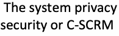
allow individuals to exercise their rights over their personal data. The system privacy
個人が自身の個人データに対する権利を行使できるようにする。システムプライバシー
未レビュー訳原本PDFの抜粋画像
•Individual autonomy and transparency: Privacy controls often emphasize giving individuals control over their data (i.e., autonomy) and ensuring that individuals are informed about how their data is processed (i.e., transparency). These aspects may require different implementations compared to security controls, which are primarily concerned with protecting systems and information rather than individuals.
•個人の自律性と透明性：プライバシー管理策では、個人に自身のデータに対する管理権を与えること（すなわち自律性）や、自身のデータがどのように処理されるかを個人に確実に周知させること（すなわち透明性）が重視されることがよくある。これらの側面は、個人ではなくシステムや情報の保護を主眼とするセキュリティ管理策と比較して、異なる実装が必要となる場合がある。
Related plan elements: Control Implementation Status, Control Assessment Status
関連する計画要素：管理策の実施状況（Control Implementation Status）、管理策のアセスメント状況（Control Assessment Status）
未レビュー訳System Plan Approval
システム計画の承認
未レビュー訳Discussion: System plan approval is critical prior to control implementation for systems under development. By approving the system plans before the system is in operation, the authorizing official or designated representative accepts and agrees to the allocated set of controls, the proposed implementation of the allocated controls, and the inheritance of controls from common control provider plans. Input from other organizational officials provides information to support the approval of system plans. For example:
考察: 開発中のシステムにおいて、管理策の実装に先立ちシステム計画を承認することは極めて重要である。システムが運用に入る前にシステム計画を承認することにより、承認権限者または指定された代理人は、割り当てられた管理策のセット、割り当てられた管理策の提案された実装、および共通管理策提供者の計画からの管理策の継承を受諾し、合意する。他の組織関係者からのインプットにより、システム計画の承認を支援する情報が提供される。例えば、以下の通りである。
•System security plan approval includes concurrence between the system owner and the senior accountable official for risk management or risk executive (function), CIO, or senior agency information security officer.
•システムセキュリティ計画の承認には、システム所有者と、リスクマネジメント担当上級責任者またはリスクエグゼクティブ（機能）、CIO、もしくは機関上級情報セキュリティ責任者との間の同意が含まれる。
•System privacy plan approval includes concurrence between the system owner and the senior agency official for privacy to demonstrate alignment between the organization’s privacy and security programs.
•システムプライバシー計画の承認には、組織のプライバシープログラムとセキュリティプログラムとの整合性を示すための、システム所有者とプライバシー担当機関上級責任者との間の同意が含まれる。
未レビュー訳•C-SCRM plan approval includes coordination with the C-SCRM PMO.
•C-SCRM計画の承認には、C-SCRM PMOとの調整が含まれる。
System plan approval includes the full names, system roles, organizational titles, signatures, and signature dates of the individuals who approved the plan. Information management tools and document management systems can electronically capture the required signatures from the appropriate approvers.
システム計画の承認には、計画を承認した個人の氏名、システム上の役割、組織上の役職、署名、および署名日が含まれる。情報管理ツールおよび文書管理システムにより、適切な承認者から必要な署名を電子的に収集できる。
The system owner or common control provider is responsible for updates to the system plan. System plan reviews and change records, along with the subsequent reauthorization or ongoing authorization of the system, ensure that updates to the system plan based on the “as-implemented” state of the controls are reviewed and approved [SP800-37] by the authorizing official.
システム所有者または共通管理策提供者は、システム計画の更新に責任を負う。システム計画のレビューおよび変更記録は、その後のシステムの再認可または継続的な認可とともに、管理策の「実装された（as-implemented）」状態に基づくシステム計画の更新が承認権限者によってレビューおよび承認 [SP800-37] されることを確実にする。
Approval of the system plans does not authorize the operation of the system or the offering of common controls for inheritance.
システム計画の承認は、システムの運用や、継承のための共通管理策の提供を認可するものではない。
未レビュー訳Related plan elements: System Plan Review Records, System Plan Change Records
関連する計画要素：システム計画レビュー記録、システム計画変更記録
未レビュー訳Control Implementation Status
管理策の実装状況
未レビュー訳Discussion: Identify the implementation status of the control following the system plan approval. The control implementation status indicator may be included in the control implementation details.
考察：システム計画の承認後に、管理策の実装状況を特定する。管理策の実装状況指標は、管理策の実装詳細に含めることができる。
Typical control implementation status indicators include:
典型的な管理策の実装状況指標には以下が含まれる：
•Planned: Control is selected but implementation has not started.
•計画済み（Planned）：管理策は選択されているが、実装は開始されていない。
•Partially Implemented: Planned control implementation has started but has not been completed. This may indicate that an implemented control is in the process of being changed based on items in POA&Ms.
•部分的に実装済み（Partially Implemented）：計画された管理策の実装は開始されているが、完了していない。これは、実装された管理策がPOA&Mの項目に基づいて変更の処理中であることを示している場合がある。
•Fully Implemented: The “as-implemented” state of the control has been fully realized in the operational system.
•完全に実装済み（Fully Implemented）：運用システムにおいて、管理策の「実装された（as-implemented）」状態が完全に実現されている。
Details related to the timeline for full implementation may be provided. For complex systems, the control implementation status may differentiate the control implementation status for individual subsystems that may be at different stages of planning and development.
完全な実装に向けたタイムラインに関する詳細が提供される場合がある。複雑なシステムの場合、管理策の実装状況において、計画および開発の異なる段階にある個々のサブシステムごとの管理策の実装状況を区別することがある。
未レビュー訳Related plan elements: Control Implementation Details
関連する計画要素：管理策の実装詳細
未レビュー訳Information Exchanges Summary
情報交換の概要
未レビュー訳Discussion: Summarize the information exchanges that are defined between the system and systems outside of the authorization boundary [SP800-47], whether inside or outside the organization. Agreements can vary based on the impact level of the information being exchanged, the relationship between the organizations exchanging information, or the level of access granted to personnel from the interconnected system.
考察：組織の内外を問わず、システムと承認境界の外側にあるシステムとの間で定義されている情報交換 [SP800-47] を要約する。合意内容は、交換される情報のインパクトレベル、情報を交換する組織間の関係、または相互接続されたシステムの担当者に付与されるアクセスのレベルに基づいて異なる場合がある。
未レビュー訳The summary of information exchanges may include information about outstanding risks from the interconnected systems to support the implementation of secure system interconnections. Information collected about each valid information exchange in which the system participates may include the following, as determined by the organization implementation of the [SP800-53] CA-03, Information Exchange, control:
情報交換の概要には、安全なシステム相互接続の実装をサポートするために、相互接続されたシステムからの未解決のリスクに関する情報が含まれる場合がある。システムが参加する各有効な情報交換に関して収集される情報には、組織による [SP800-53] CA-03（情報交換）管理策の実装によって決定される以下の内容が含まれる場合がある：
•Type of agreement used for the information exchange (e.g., information exchange agreement, interconnection security agreement, memorandum of agreement, memorandum of understanding)
•情報交換に使用される合意の種類（例：情報交換協定、相互接続セキュリティ協定、合意覚書、基本合意書）
未レビュー訳•Effective start and end dates of the agreement based on the acceptance signatures provided in the agreement artifact
•合意成果物で提供される受諾署名に基づく、合意の有効開始日および終了日
•Systems participating in the agreement, including:
•以下を含む、合意に参加するシステム：
Name, role, title, and organization of the system owner and authorizing official o System name and unique system identifier assigned by the system owner’s o organization
システム所有者および承認責任者の氏名、役割、役職、および組織 o システム所有者の組織によって割り当てられたシステム名および一意のシステム識別子 o
未レビュー訳FIPS 199 categorization of the system and the information being exchanged o System authorization decisions status o
システムおよびやり取りされる情報のFIPS 199カテゴリ分け o システム承認決定の状況 o
未レビュー訳•Brief description of the exchange, including purpose, type of data, and expected outputs
•目的、データの種類、期待される出力を含む、やり取りの簡潔な説明
未レビュー訳•Method of information exchange (e.g., virtual private network, extranet, dedicated data transfer application)
•情報交換の方法（例：仮想プライベートネットワーク、エクストラネット、専用データ転送アプリケーション）
•Interface characteristics that explain how the information is being exchanged between the systems
•システム間で情報がどのように交換されているかを説明するインターフェース特性
•Diagrams that show the data flows, system components, and technologies involved
•データフロー、システムコンポーネント、および関連するテクノロジーを示す図
•Findings and mitigation strategies that are relevant to the components involved in the information exchange and may be identified in:
•情報交換に関与するコンポーネントに関連し、以下において特定され得る所見および緩和策：
未レビュー訳Security, privacy, or cybersecurity supply chain risk assessment reports; o Security and privacy control assessments; or o Information security continuous monitoring (ISCM) processes that identify o security and privacy risks and mitigation strategies.
セキュリティ、プライバシー、またはサイバーセキュリティサプライチェーンリスク評価報告書； o セキュリティおよびプライバシー管理策のアセスメント；または o セキュリティおよびプライバシーのリスクと緩和策を特定する情報セキュリティ継続的モニタリング（ISCM）プロセス。 o
未レビュー訳Exchanges that involve data about individuals have the potential to introduce additional privacy risks. The system privacy plan describes protections for ensuring the confidentiality and integrity of data about individuals during transmission and storage, including details about the information being exchanged, the organizations and systems involved, and data sharing and service agreements between the system and entities that are outside of the authorization boundary.
個人に関するデータを含むやり取りは、追加のプライバシーリスクをもたらす可能性がある。システムプライバシー計画には、送信中および保管中における個人に関するデータの機密性および完全性を確保するための保護策が記述され、これには交換される情報、関係する組織およびシステム、ならびにシステムと認可境界の外にあるエンティティとの間のデータ共有合意およびサービス合意に関する詳細が含まれる。
Related plan elements: System Overview, Authorization Boundary Description, Environment of Operation Diagrams, Control Implementation Details
関連する計画要素：システム概要、承認境界の説明、運用環境図、管理策の実装詳細
未レビュー訳Control Assessment Status
管理策のアセスメント状況
未レビュー訳Discussion: Identify the assessment status of the control. The plan can specify whether the control was “satisfied” or “other than satisfied” based on the requirements provided in the assessment plan. The assessment status may specify when the control was last assessed and provide a reference to the assessment report and the assessment plan that explains the scope, breadth, and depth of the assessment performed.
考察：管理策のアセスメント状況を特定する。計画では、アセスメント計画で提示された要件に基づいて、管理策が「満たされている（satisfied）」か「満たされている以外（other than satisfied）」かを指定できる。アセスメント状況には、管理策が前回アセスメントされた時期が指定される場合があり、実施されたアセスメントの範囲、網羅性、および深さを説明するアセスメント報告書およびアセスメント計画への参照が提供される場合がある。
未レビュー訳The control assessment status indicator may be included in the control implementation details. Automation can provide the ability to include the assessment history, including the results of control monitoring activities. References to POA&Ms and retest artifacts may be included for controls identified as “other than satisfied.”
管理策アセスメント状況指標は、管理策の実装詳細に含めることができる。自動化により、管理策のモニタリング活動の結果を含むアセスメント履歴を含める機能を提供できる。「満たされている以外（other than satisfied）」と特定された管理策については、POA&Mおよび再テスト成果物への参照を含めることができる。
Related plan elements: Control Implementation Details, Control Implementation Status
関連する計画要素：管理策の実装詳細、管理策の実装状況
未レビュー訳Remediation Actions
是正処置
未レビュー訳Discussion: Identify the status of control remediation actions that result from assessment activities. A list of outstanding risk remediation activities, including POA&M items and system changes that result from control monitoring, can provide information about the risk posture of the system to organizational leadership, risk managers, and the managers of systems with which information exchange agreements are in place.
考察：アセスメント活動から生じる管理策の是正処置の状況を特定する。POA&M項目や管理策のモニタリングから生じるシステム変更を含む、未解決のリスク是正活動のリストは、組織のリーダーシップ、リスク管理者、および情報交換合意が締結されているシステムの管理者に対して、システムのリスク態勢に関する情報を提供できる。
The control assessment status indicator may be included in the control implementation details. Automating the generation of this information based on assessment reports and monitoring results provides transparency about existing threats and vulnerabilities that have not been fully remediated.
管理策アセスメント状況インジケーターは、管理策の実装詳細に含めることができる。アセスメント報告書およびモニタリング結果に基づいてこの情報の生成を自動化することで、完全には是正されていない既存の脅威および脆弱性に関する透明性がもたらされる。
未レビュー訳Related plan elements: Control Implementation Details, Control Implementation Status, Control Assessment Status
関連する計画要素：管理策の実施詳細（Control Implementation Details）、管理策の実施状況（Control Implementation Status）、管理策の評価状況（Control Assessment Status）
未レビュー訳Digital Identity Acceptance Statement (DIAS) (optional)
デジタルID受入表明（DIAS）（任意）
未レビュー訳Discussion: Organization- and system-level risk assessments determine the extent to which risk is managed by various processes,15 which in turn drive decisions regarding applicable technologies and mitigation strategies. During the risk management process, the organization determines the assurance levels for identity proofing, authentication, and federation, if applicable; selects appropriate processes and technologies to meet each assurance level; and identifies compensating controls when necessary.
考察：組織レベルおよびシステムレベルのリスクアセスメントにより、各種プロセスによってリスクが管理される範囲が決定され15、それがひいては適用可能な技術や緩和戦略に関する決定を推進する。リスクマネジメントプロセスの過程で、組織は身元確認、認証、および（該当する場合は）連携に対する保証レベルを決定し、各保証レベルを満たすための適切なプロセスと技術を選択し、必要に応じて代替管理策を特定する。
未レビュー訳The DIAS is not required to be included in the system plan but is required to be included in the system authorization package for federal systems.
DIASはシステム計画に含めることは求められないが、連邦政府システムにおいてはシステム認可パッケージに含めることが求められる。
Related plan elements: System Authorization Decision
関連する計画要素：システム認可の決定（System Authorization Decision）
未レビュー訳System Authorization Decision
システム認可の決定（System Authorization Decision）
未レビュー訳Discussion: The authorization decision is made by the authorizing official before the system is put into the operational environment and to maintain its operational status. The system plan may refer to authorization decision artifacts, such as an authorization to operate (ATO) letter or memorandum issued by the authorizing official, to explain the terms and conditions of the authorization decision. If the organization implements a program for ongoing system authorization, the ongoing authorization decision information may be referenced in the system plan. The organization determines how to identify the authorization status of the system as a part of an ISCM strategy that includes ongoing authorization.
考察：認可の決定は、システムが運用環境に導入される前、およびその運用ステータスを維持するために、認可責任者によって行われる。システム計画は、認可決定の諸条件を説明するために、運用認可（ATO）のレターや認可責任者によって発行された覚書などの認可決定の成果物を参照する場合がある。組織が継続的システム認可プログラムを実施している場合、継続的認可決定情報がシステム計画内で参照されることがある。組織は、継続的認可を含むISCM戦略の一環として、システムの認可ステータスを特定する方法を決定する。
未レビュー訳Related plan elements: Remediation Actions
関連する計画要素：是正処置（Remediation Actions）
未レビュー訳System Operational Status
システムの運用ステータス
未レビュー訳Discussion: Identify the readiness of the system and related subsystems within the environment of operation. Common status indicators include:
考察：運用環境内におけるシステムおよび関連するサブシステムの準備状況を特定する。一般的なステータス指標には以下が含まれる：
未レビュー訳•Under development: The system is being designed or developed and is not fully functioning in an operational environment.
•開発中：システムが設計中または開発中であり、運用環境において完全に機能していない。
•Operational: The authorized system is operating in the operational environment.
•運用中：承認されたシステムが運用環境において稼働している。
•Undergoing a significant modification: The authorized operational system is undergoing a significant change to the operational environment that is likely to substantively affect the security, privacy, or supply chain posture of a system.
•大幅な改修中：承認され運用中のシステムが、システムのセキュリティ、プライバシー、またはサプライチェーンの態勢に実質的な影響を与える可能性が高い、運用環境に対する重大な変更を受けている最中である。
未レビュー訳[SP800-37]
[SP800-37]
未レビュー訳•Disposal: The system is no longer authorized or operational.
•廃棄：システムがもはや承認されておらず、運用もされていない。
未レビュー訳Organizations may use other operational status indicators as needed based on the components and services within the environment of operation.
組織は、運用環境内のコンポーネントおよびサービスに基づいて、必要に応じて他の運用ステータス指標を使用してもよい。
For complex systems, include the operational status of the subsystems within the authorization boundary. Using automation, the operational status of key components within the system or subsystems can be identified to provide organizational management with a full accounting of the status of the mission or business process supported by the system.
複雑なシステムの場合、認可境界内のサブシステムの運用ステータスを含める。自動化を使用することで、システムまたはサブシステム内の主要コンポーネントの運用ステータスを特定し、システムによってサポートされるミッションまたは業務プロセスのステータスに関する完全な説明を組織の管理層に提供することができる。
Related plan elements: System Overview, System Authorization Decision
関連する計画要素：システム概要、システム認可決定
未レビュー訳System Plan Review Records
システム計画レビュー記録
未レビュー訳Discussion: System plan reviews ensure accountability for periodic (e.g., life cycle milestones, gate reviews, significant contracting activities) and ad hoc changes. Organization-designated individuals can verify the accuracy and completeness of the information in the system plans and alignment between system plans.
考察：システム計画のレビューは、定期的（例：ライフサイクルのマイルストーン、ゲートレビュー、重大な契約活動）およびアドホックな変更に対する説明責任を確保する。組織が指定した担当者は、システム計画内の情報の正確性と完全性、およびシステム計画間の整合性を検証することができる。
A system plan review log records the name and role of the individual performing the review, the review date, the feedback generated during the review process, and associated notes. The review record may include additional information, such as:
システム計画レビューログには、レビューを実施する担当者の氏名と役割、レビュー日、レビュープロセス中に生成されたフィードバック、および関連するメモが記録される。レビュー記録には、次のような追加情報が含まれる場合がある：
•Dates of review
•レビューの日付
•Review Participants
•レビュー参加者
•Notable outcomes (i.e., recommended revisions, concerns, other action items)
•注目すべき成果（例：推奨される改訂事項、懸念事項、その他のアクションアイテム）
未レビュー訳Updates to the system plan are approved and applied as part of organizational or system-specific change management processes. The records help management understand the content updates that have been implemented and verify that the authorization package contains the most current revision of the system plans.
システム計画の更新は、組織的またはシステム固有の変更管理プロセスの一環として承認および適用される。これらの記録は、管理部門が実施されたコンテンツの更新を理解し、認可パッケージにシステム計画の最新の改訂版が含まれていることを検証するのに役立つ。
未レビュー訳Related plan elements: System Plan Approval, Control Implementation Status, Control Assessment Status
関連する計画要素：システム計画の承認（System Plan Approval）、管理策の実施状況（Control Implementation Status）、管理策のアセスメント状況（Control Assessment Status）
未レビュー訳System Plan Change Records
システム計画の変更記録
未レビュー訳Discussion: A system plan change record focuses on specific updates that are made to the system plan. Updates to the system plan are often the result of changes to the system that are approved and applied as part of organization- or system-specific change management processes implemented as part of [SP800-53] CM-03, Configuration Change Control. A system plan change record can include the following information:
考察：システム計画の変更記録は、システム計画に加えられた特定の更新事項に焦点を当てる。システム計画の更新は多くの場合、[SP800-53] CM-03（構成変更管理）の一環として実施される、組織固有またはシステム固有の変更管理プロセスの一部として承認および適用されたシステムへの変更の結果である。システム計画の変更記録には、以下の情報を含めることができる。
•Date of revision
•改訂日
•Plan revision identifier
•計画改訂識別子
•Identity of individual making the system plan change
•システム計画の変更を行った個人の身元
•The system plan elements affected (e.g., control implementation details, authorization boundary description, information exchange summary)
•影響を受けるシステム計画要素（例：管理策の実装詳細、承認境界の記述、情報交換の概要）
•Details of the plan changes (e.g., controls affected, role assignment changes, updated links to referenced artifacts)
•計画変更の詳細（例：影響を受ける管理策、役割割り当ての変更、参照アーティファクトへの更新されたリンク）
未レビュー訳The records help management understand the content updates that have been implemented and verify that the authorization package contains the most current revision of the system plans. While document management processes may require manual change record updates, information management tools (e.g., IT service desk solutions, ticketing systems) can automatically track changes made to specific system plan elements. Organizational and system managers can generate reports that identify the users who approved and implemented individual changes to the system plans.
これらの記録は、管理層が実装されたコンテンツの更新内容を把握し、認可パッケージにシステム計画の最新改訂版が含まれていることを確認するのに役立つ。文書管理プロセスでは手動による変更記録の更新が必要となる場合があるが、情報管理ツール（例：ITサービスデスクソリューション、チケッティングシステム）を使用すれば、特定のシステム計画要素に加えられた変更を自動的に追跡できる。組織およびシステムの管理者は、システム計画に対する個々の変更を承認および実装したユーザーを特定するレポートを生成できる。
未レビュー訳Related plan elements: System Plan Approval, Control Implementation Details, Remediation Actions
関連する計画要素：システム計画の承認、管理策の実装詳細、是正措置
未レビュー訳3.3. Automation Support for System Plan Information
3.3. システム計画情報に対する自動化サポート
未レビュー訳Automating the collection of system plan element information can increase the effectiveness and efficiency of maintaining system plans. Organizations have the flexibility to decide when, where, and how to use automation tools (e.g., GRC, SOAR, SIEM) to manage information for the system plan elements associated with each system. For instance, automation tools can:
システム計画要素情報の収集を自動化することで、システム計画の維持管理の有効性と効率性を向上させることができる。組織には、各システムに関連付けられたシステム計画要素の情報を管理するために、自動化ツール（例：GRC、SOAR、SIEM）をいつ、どこで、どのように使用するかを柔軟に決定する余地がある。例えば、自動化ツールは以下を行うことができる：
未レビュー訳•Capture control implementation status information to demonstrate ongoing risk management activities,16
•継続的なリスク管理活動を実証するために、管理策の実装状況情報を収集すること、16
未レビュー訳•Support the tracking of POA&M activities to ensure that remediation actions are completed,
•是正措置が確実に完了するようにPOA&M活動の追跡を支援すること、
未レビュー訳•Facilitate the management of system plan reviews, and
•システム計画のレビュー管理を促進すること、および
未レビュー訳•Control access to system plan information.
•システム計画情報へのアクセスを制御すること。
While some organizations have the resources to implement dedicated, organization-wide information management tools to manage many system plans, organizations with limited resources may be able to leverage commercially available services (e.g., office productivity applications, open-source solutions, cloud-based services) to manage information for the limited number of system plans within the organization.
多くのシステム計画を管理するために組織全体向けの専用情報管理ツールを導入するリソースを持つ組織もあれば、限られたリソースしかない組織では、組織内の限られた数のシステム計画に関する情報を管理するために商用サービス（例：オフィス生産性向上アプリケーション、オープンソースソリューション、クラウドベースのサービスなど）を活用できる場合がある。
NIST does not recommend, endorse, or certify specific products, vendors, or technologies for the automation of system plan development and maintenance.
NISTは、システム計画の策定および維持の自動化に向けた特定の製品、ベンダー、または技術を推奨、支持（エンドース）、または認証するものではない。
3.3.1. System Plan Information Collection
3.3.1. システム計画情報の収集
The information contained in the system elements may be collected from both organization-wide and system-specific data sources, including:
システム要素に含まれる情報は、組織全体およびシステム固有の双方のデータソースから収集される場合があり、これには以下が含まれる：
未レビュー訳•System component inventory information (e.g., technology, function, role, and configuration of components used within the operational environment17)
•システムコンポーネントのインベントリ情報（例：運用環境17内で使用されるコンポーネントの技術、機能、役割、および構成）
未レビュー訳•Personnel contact information from an organizational directory
•組織ディレクトリからの要員連絡先情報
•Information types that are detected within the system but excluded from system categorization determination
•システム内で検出されたが、システムカテゴリ決定から除外された情報タイプ
•Changes to common controls and the inherited portion of hybrid controls
•共通管理策およびハイブリッド管理策の継承部分に対する変更
•Changes to system plan information to enforce separation of duties
•職務分掌を実施するためのシステム計画情報に対する変更
•New, in-process, and resolved POA&Ms
•新規、処理中、および解決済みのPOA&M
未レビュー訳The collected information informs various management activities, such as prioritizing security, privacy, or C-SCRM initiatives and allocating resources based on impact priorities. Automating the collection of system-level risk information in a centralized repository following organization-defined data standards can reduce inconsistencies that may lead to erroneous risk-based decisions.
収集された情報は、セキュリティ、プライバシー、またはC-SCRMの取り組みの優先順位付けや、影響の優先度に基づくリソースの割り当てなど、さまざまな管理活動に役立つ。組織が定義したデータ標準に従って一元化されたリポジトリにシステムレベルのリスク情報の収集を自動化することで、誤ったリスクベースの意思決定につながる可能性のある不整合を減らすことができる。
未レビュー訳3.3.2. System Plan Information Sharing and Usability
3.3.2. システム計画情報の共有とユーザビリティ
Maintaining system plan element information in a central repository using well-designed user interfaces (e.g., dashboards, search functions, reporting methods) in place of potentially lengthy traditional security plan artifacts may improve the responsiveness of risk-based decision-making. Increased information usability supports various stakeholders, including:
長大になりがちな従来のセキュリティ計画の成果物に代わり、適切に設計されたユーザーインターフェース（例：ダッシュボード、検索機能、レポーティング手法）を用いてシステム計画要素の情報を中央リポジトリで管理することは、リスクに基づく意思決定の即応性を向上させる可能性がある。情報のユーザビリティ向上は、以下を含む多様なステークホルダーを支援する：
•Senior leadership and risk managers to evaluate the organizational risk profile across all systems in the organization’s inventory
•組織のインベントリ内のすべてのシステムにわたる組織のリスクプロファイルを評価する上級幹部およびリスク管理者
•Authorizing officials, senior agency officials for privacy, and system owners to quickly locate, review, and update specific system plan elements in support of continuous monitoring activities and ongoing authorization processes
•継続的モニタリング活動および継続的認可プロセスを支援するために、特定のシステム計画要素を迅速に見つけ出し、レビューし、更新する承認権限者、プライバシー担当上級機関職員、およびシステム所有者
•System management personnel to track approval processes for change management functions and review control implementation metrics
•変更管理機能の承認プロセスを追跡し、管理策の実装メトリクスをレビューするシステム管理要員
未レビュー訳The dashboard interfaces and reporting functions of organization-wide information management tools can ensure that authorized personnel receive updates on system component inventory information and the status of risk management efforts, including the system’s operational status, assessment and reauthorization schedules, POA&M statuses (e.g., late POA&Ms, expiring POA&Ms), and accepted risk information.
組織全体の情報管理ツールのダッシュボードインターフェースおよびレポーティング機能により、認可された要員は、システムコンポーネントのインベントリ情報や、システムの運用状況、アセスメントおよび再認可のスケジュール、POA&Mのステータス（例：遅延しているPOA&M、期限切れ間近のPOA&M）、受容されたリスク情報を含むリスク管理の取り組みの状況に関する更新情報を確実に受け取ることができる。
Information management tools may share control implementation statuses, control assessment statuses, and implementation details with system owners and other authorized individuals from:
情報管理ツールは、以下からの管理策の実装ステータス、管理策のアセスメントステータス、および実装の詳細を、システム所有者やその他の認可された個人と共有することができる：
•Interconnected systems within the organization,
•組織内の相互接続されたシステム、
•Systems inheriting common controls, and
•共通管理策を継承するシステム、および
•External organizations participating in approved information exchanges.
•承認された情報交換に参加する外部組織。
Relevant control assessment status information may also be shared in support of information exchanges with external organizations.
外部組織との情報交換を支援するために、関連する管理策のアセスメント状況情報が共有されることもある。
Information that is relevant to the preparation, planning, and execution of control assessments can be restricted to prevent the inadvertent release of system information by third-party assessors. Assessors may be given limited access to input assessment results and artifacts directly into the information management tool to generate assessment reports.
サードパーティのアセッサによるシステム情報の不注意な開示を防止するために、管理策アセスメントの準備、計画、および実施に関連する情報を制限することができる。アセスメントレポートを生成するためにアセスメント結果および成果物を情報管理ツールに直接入力する限定的なアクセス権が、アセッサに付与される場合がある。
未レビュー訳3.3.3. System Plan Information Management
3.3.3. システム計画情報管理
Automation facilitates system plan information management throughout the system life cycle, including:
自動化により、以下を含むシステムライフサイクル全体を通じたシステム計画情報管理が促進される：
未レビュー訳•Tracking changes to system plan elements, including control implementations, agreements for information exchanges, POA&Ms, and supporting roles
•管理策の実装、情報交換の合意、POA&M、および支援役割を含む、システム計画要素への変更の追跡
•Managing specific configuration settings on defined components within a system or across all systems within the organization to facilitate continuous monitoring reporting
•継続的モニタリングの報告を容易にするための、システム内の定義されたコンポーネントまたは組織内のすべてのシステムにわたる特定の設定構成の管理
未レビュー訳•Alerting organizational leaders and system management of changes or inconsistencies in the collected system plan information
•収集されたシステム計画情報における変更または不整合に関する、組織のリーダーおよびシステム管理者へのアラート通知
未レビュー訳•Generating system plans using organization-approved templates to minimize the duplication of element-specific content (e.g., system description, system environment, identification of roles related to risk management or system operations)
•組織が承認したテンプレートを使用してシステム計画を作成し、要素固有のコンテンツ（例：システム記述、システム環境、リスクマネジメントまたはシステム運用に関連する役割の特定）の重複を最小限に抑えること
未レビュー訳Automation can be particularly useful in assessing and continuously monitoring controls throughout the system life cycle. Storing system plan data in machine-readable formats can facilitate updates to control implementation details due to assessment results, control catalog or baseline updates, and other system changes. For example, POA&Ms for “other than satisfied” findings in a machine-readable assessment report can trigger updates to system plans and other system artifacts that are stored within a central repository.
自動化は、システムライフサイクル全体を通じて管理策をアセスメントし、継続的にモニタリングする上で特に有用となり得る。システム計画データを機械可読形式で保存することにより、アセスメント結果、管理策カタログまたはベースラインの更新、およびその他のシステム変更に伴う管理策実装詳細の更新を促進できる。例えば、機械可読なアセスメントレポート内の「満たされている以外（other than satisfied）」の所見に対するPOA&Mは、中央リポジトリ内に保存されているシステム計画やその他のシステム成果物の更新の契機となることがある。
3.3.4. System Plan Information Protection
3.3.4. システム計画情報の保護
Organizations determine the level of protection required for system plan element information based on the system’s information types [SP800-60v2] and organizational requirements. Centralized access control policies in an organization-wide information management tool can manage logical access to information about the system to:
組織は、システムの情報タイプ [SP800-60v2] および組織の要件に基づいて、システム計画要素の情報に要求される保護水準を決定する。組織全体にわたる情報管理ツールにおける集中型アクセス制御ポリシーにより、以下の目的でシステムに関する情報への論理アクセスを管理できる。
•Limit the visibility of information about the system to specific access holders based on their management role
•システムに関する情報の可視性を、管理上の役割に基づいて特定のアクセス権保有者に制限すること
未レビュー訳•Ensure that only authorized users can update system information, review change records, and approve changes that have been made
•認可されたユーザーのみがシステム情報を更新し、変更記録をレビューし、加えられた変更を承認できるようにすること
未レビュー訳Additional access controls can be applied to prevent unauthorized access to the system’s weakness and vulnerability information. Organization- and system-specific policies may further control access to technical details about the system, such as IP addresses, vulnerability information, and architectural designs.
システムの弱点および脆弱性情報への不正アクセスを防止するために、追加のアクセス制御を適用できる。組織およびシステム固有のポリシーにより、IPアドレス、脆弱性情報、アーキテクチャ設計などのシステムに関する技術的詳細へのアクセスをさらに制御できる。
未レビュー訳4. System Plan Development Through the Risk Management Framework Steps
4. リスクマネジメントフレームワークのステップを通じたシステム計画の作成
The following subsections provide organizational leadership and risk managers with a broader understanding of each RMF step in relation to the development and maintenance of system plans. The RMF provides a methodology for managing system risks using organizational policies and system-level procedures to support system plan development, including responsibilities, ongoing reviews and updates, the approval of system plans, and assessments of control implementations. Fig. 2 shows the seven steps of the RMF.
以下のサブセクションでは、組織のリーダーシップおよびリスク管理者に対し、システム計画の策定および維持管理に関連する各RMFステップについてのより幅広い理解を提供する。RMFは、責任、継続的なレビューおよび更新、システム計画の承認、ならびに管理策の実装の評価を含む、システム計画の策定を支援するために、組織のポリシーおよびシステムレベルの手順を用いてシステムリスクを管理するための方法論を提供する。Fig. 2にRMFの7つのステップを示す。
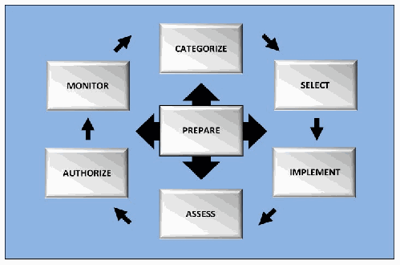
Fig. 2. NIST Risk Management Framework Steps
Fig. 2. NISTリスクマネジメントフレームワークのステップ
未レビュー訳4.1. Prepare
4.1. 準備（Prepare）
System plans support organization- and system-level risk management strategies, including regulatory and compliance obligations that define system-level requirements. To enable oversight and promote accountability, the plans designate individuals with roles and responsibilities for security, privacy, and supply chain risk management, such as those identified in [SP800-37] Appendix D, Roles and Responsibilities. These roles align with broader organizational information security and privacy program plans [SP800-37] and the C-SCRM strategy and implementation plan [SP800-161] for consistency across all systems within the organization.
システム計画は、システムレベルの要件を定義する規制およびコンプライアンス上の義務を含め、組織およびシステムレベルのリスク管理戦略を支援する。監視を可能にし説明責任を促進するために、計画では、[SP800-37]付録D「役割および責任（Roles and Responsibilities）」で特定されているような、セキュリティ、プライバシー、およびサプライチェーンリスク管理に関する役割と責任を持つ個人を指定する。これらの役割は、組織内のすべてのシステム間での整合性を確保するため、より広範な組織の情報セキュリティおよびプライバシープログラム計画[SP800-37]、ならびにC-SCRM戦略および実装計画[SP800-161]と連携している。
未レビュー訳Common control providers develop system plan artifacts that identify and provide implementation details for inheritable common controls. A common control plan describes privacy protections (e.g., data minimization, transparency, consent management) and identifies systems outside of the authorization boundary as a common control provider from which implemented controls are inherited. Inherent relationships with common control providers may be based on specific operational relationships with service providers in the supply chain.
共通管理策プロバイダーは、継承可能な共通管理策を特定し、その実装の詳細を提供するシステム計画の成果物を策定する。共通管理策計画は、プライバシー保護（例：データの最小化、透明性、同意管理）について記述し、実装された管理策の継承元となる共通管理策プロバイダーとして認可境界外のシステムを特定する。共通管理策プロバイダーとの本質的な関係は、サプライチェーン内のサービスプロバイダーとの特定の運用関係に基づいている場合がある。
Organizations may develop tailored control baselines for systems with specialized or unconventional mission, business, or operational requirements to provide details that are incorporated into system plans, including:
組織は、専門的なまたは型にはまらないミッション、業務、もしくは運用上の要件を持つシステムに対して、システム計画に組み込まれる詳細情報を提供するために、調整された管理策ベースラインを策定することができる。これには以下が含まれる。
未レビュー訳•Predetermined organization-defined parameter (ODP) values for control assignment and selection operations
•管理策の割り当ておよび選択操作のための、事前に決定された組織定義パラメータ（ODP）値
未レビュー訳•Additional controls, control enhancements, and compensating controls to address organization-specific risks
•組織固有のリスクに対処するための追加の管理策、管理策の強化、および代替管理策
未レビュー訳•Supplemental scoping information to explain the applicability of the tailored controls to specialized system, system element, or component operations based on security and privacy assumptions
•セキュリティおよびプライバシーの前提に基づいて、テーラリングされた管理策の、特殊なシステム、システム要素、またはコンポーネントの運用への適用可能性を説明するための補足的なスコーピング情報
未レビュー訳Prepare — System Level When the system life cycle is initiated, key information is collected to inform initial drafts of system plans, including:
準備 — システムレベル システムライフサイクルが開始されると、システム計画の初稿に反映させるための重要な情報が収集される。これには以下が含まれる。
未レビュー訳•The mission or business focus supported by the system
•システムによってサポートされるミッションまたはビジネスの重点事項
•System stakeholders
•システムのステークホルダー
未レビュー訳•The information types handled by system
•システムによって取り扱われる情報の種類
•Unique security and privacy risks in the information life cycle that are managed across the entire data ecosystem
•データエコシステム全体で管理される、情報ライフサイクルにおける固有のセキュリティおよびプライバシーリスク
未レビュー訳•How the authorization boundary is defined within the organizational infrastructure or enterprise architecture
•組織のインフラストラクチャまたはエンタープライズアーキテクチャ内で認可境界がどのように定義されているか
未レビュー訳The organization assigns a system identifier to associate component inventory records, device event audit records, and system-related artifacts.
組織は、コンポーネントインベントリ記録、デバイスイベント監査記録、およびシステム関連の成果物を関連付けるためのシステム識別子を割り当てる。
未レビュー訳The system-level C-SCRM plan provides a context for how organizational C-SCRM policies are applied at the system level by enumerating requirements, describing constraints, and addressing other supply chain risk implications. C-SCRM plans for systems align with the established organization-wide risk tolerances and C-SCRM strategy. Many organizations choose to enable systems to inherit common controls that support the organization or enterprise C-SCRM requirements. In cases where multiple components within an organization are responsible for different subsets of the same system, the organization decides the scope of the C-SCRM plan.
システムレベルのC-SCRM計画は、要件を列挙し、制約を記述し、その他のサプライチェーンリスクへの影響に対処することによって、組織のC-SCRMポリシーがシステムレベルでどのように適用されるかのコンテキストを提供する。システムのC-SCRM計画は、確立された組織全体のリスク許容度およびC-SCRM戦略と整合する。多くの組織は、組織またはエンタープライズのC-SCRM要件をサポートする共通管理策をシステムが継承できるようにすることを選択する。組織内の複数の構成要素が同一システムの異なるサブセットを担当している場合、組織がC-SCRM計画のスコープを決定する。
During each of the subsequent RMF steps, the system plans are revised or updated to add additional information as the system is developed.
その後の各RMFステップにおいて、システムが開発されるにつれて追加情報を加えるために、システム計画が改訂または更新される。
Defining the Authorization Boundary The system plans identify how data flows through various subsystems, third-party services, and external networks to ensure that privacy risks are managed comprehensively. The authorization boundary establishes the scope of protection for the system based on mission, management, or budgetary responsibilities. Privacy risks can arise at any stage of data processing because of the interconnected nature of modern systems, and identifying and responding to them may require looking beyond the authorization boundary.
認可境界の定義 システム計画は、プライバシーリスクが包括的に管理されることを確実にするために、データが様々なサブシステム、サードパーティサービス、および外部ネットワークをどのように流れるかを特定する。認可境界は、ミッション、管理、または予算上の責任に基づいて、システムの保護のスコープを確立する。現代のシステムの相互接続された性質のため、データ処理のあらゆる段階でプライバシーリスクが生じる可能性があり、それらを特定して対応するには認可境界の先を見据えることが必要となる場合がある。
未レビュー訳System-specific C-SCRM concerns may include risks derived from suppliers that are several layers removed from the end user or supply chain risks associated with specific organization-defined technologies. For example, C-SCRM considers the complexities of new technologies and dynamic system interdependencies that can result in suppliers gaining incidental access18 to data. C-SCRM plan considerations include vendor-controlled SaaS offerings, hybrid or cloud environments, open-source software, information and communications technology and operational technology from suppliers outside of Trade Agreements Act nations, general procurement from unauthorized resellers, and supply chains of emerging technologies, such as artificial intelligence capabilities.
システム固有のC-SCRMの懸念事項には、エンドユーザーから数層離れたサプライヤーに由来するリスクや、特定の組織定義のテクノロジーに関連するサプライチェーンリスクが含まれる場合がある。例えば、C-SCRMでは、サプライヤーによるデータへの付随的アクセス18をもたらす可能性のある新技術の複雑さや動的なシステムの相互依存関係を考慮する。C-SCRM計画における考慮事項には、ベンダー管理のSaaS製品、ハイブリッドまたはクラウド環境、オープンソースソフトウェア、通商協定法（Trade Agreements Act）適用国以外のサプライヤーからの情報通信技術および運用技術（OT）、無認可リセラーからの一般的な調達、ならびに人工知能機能などの新興技術のサプライチェーンが含まれる。
未レビュー訳4.2. Categorize
4.2. カテゴライズ（Categorize）
The system’s [FIPS199] security categorization reflects potential adverse impacts of the loss of confidentiality, integrity, or availability; determines the [FIPS200] minimum security requirements; and supports the RMF Select step. Security categorization information in the system plan provides the rationale for categorization decisions, including privacy and C-SCRM impacts [SP800-60v2]. Approving the security categorization may require additional input from the senior agency official for privacy and the senior procurement official.
システムの[FIPS199]セキュリティカテゴリ化は、機密性、完全性、または可用性の喪失による潜在的な悪影響を反映し、[FIPS200]の最低限のセキュリティ要件を決定し、RMFの「選択（Select）」ステップを支援する。システム計画におけるセキュリティカテゴリ化情報は、プライバシーおよびC-SCRMへの影響[SP800-60v2]を含め、カテゴリ化の決定の根拠を提供する。セキュリティカテゴリ化の承認には、プライバシー担当シニア機関職員および調達担当シニア職員からの追加のインプットが必要となる場合がある。
To account for both privacy and security risks in system plans, impact levels for each information type reflect potential adverse impacts on organizational operations and assets and the privacy of individuals whose data is processed by the system. Privacy impacts are informed by other risk management activities and documentation, such as PIAs, SORNs, MOUs, and the
システム計画においてプライバシーリスクとセキュリティリスクの双方を考慮するために、各情報タイプのインパクトレベルは、組織の業務および資産、ならびにシステムによってデータが処理される個人のプライバシーに対する潜在的な悪影響を反映する。プライバシーへの影響は、PIA、SORN、MOU、および
未レビュー訳NIST PRAM.
NIST PRAMなどの他のリスクマネジメント活動および文書によって知見が得られる。
未レビュー訳The C-SCRM plan is generally developed for high- and moderate-impact systems, as indicated in [SP800-161]. However, there is value in developing the C-SCRM plan to protect low-impact systems as well, particularly if the low-impact system uses the same components found in high-and moderate-impact systems. In the absence of a C-SCRM plan for a low-impact system, the system security plan can identify the inheritance of C-SCRM controls from organization-level common control providers, enumerate organizational and system risk tolerances, and demonstrate the acceptance versus the transfer or mitigation of cybersecurity supply chain risks via system-specific controls.
C-SCRM計画は、[SP800-161]で示されているように、通常、高影響度および中影響度のシステム向けに策定される。しかし、特に低影響度システムが高影響度および中影響度システムで見られるものと同じコンポーネントを使用している場合、低影響度システムを保護するためにもC-SCRM計画を策定することには価値がある。低影響度システム用のC-SCRM計画が存在しない場合、システムセキュリティ計画によって、組織レベルの共通管理策プロバイダーからのC-SCRM管理策の継承を特定し、組織およびシステムのリスク許容度を列挙し、システム固有の管理策を通じたサイバーセキュリティサプライチェーンリスクの受容と移転または低減を実証することができる。
未レビュー訳4.3. Select
4.3. 選択
The organization determines the approach for selecting, tailoring, and allocating controls for systems based on system requirements. System plans identify the controls that are selected and allocated to the system for implementation. [SP800-37] describes two approaches for selecting controls:
組織は、システム要件に基づいてシステム向けの管理策を選択、テーラリング、および割り当てるためのアプローチを決定する。システム計画は、実装のために選択されシステムに割り当てられた管理策を特定する。[SP800-37]では、管理策を選択するための2つのアプローチが説明されている。
•Organization-generated control selection: The organization uses its own process to select and tailor the controls in the system plan based on a variety of factors, including organizational mission or business priorities, system capabilities, the context in which the system operates, and threats. Organizations may consider applicable Cybersecurity
•組織生成による管理策の選択：組織は、組織のミッションまたは業務の優先事項、システムの機能、システムが運用される状況（コンテキスト）、および脅威を含む多様な要因に基づいて、システム計画内の管理策を選択およびテーラリングするための独自のプロセスを使用する。組織は、該当するサイバーセキュリティ
未レビュー訳and Privacy Framework Profiles to identify controls that support the achievement of security and privacy risk management outcomes.
およびプライバシーフレームワークプロファイルを検討して、セキュリティおよびプライバシーのリスクマネジメントの成果達成を支援する管理策を特定することができる。
未レビュー訳•Baseline control selection: Controls in the organizationally tailored control baselines that were determined during the RMF Prepare step are factored into the control selection process. The initial security baselines in [SP800-53B] group controls that are designed to support the [FIPS200] minimum security requirements for systems based on the [FIPS199] security impact level.
•ベースライン管理策の選択：RMFの準備ステップにおいて決定された、組織的にテーラリングされた管理策ベースラインに含まれる管理策が、管理策選択プロセスに組み込まれる。[SP800-53B]の初期セキュリティベースラインは、[FIPS199]のセキュリティ影響度レベルに基づいて、システムに対する[FIPS200]の最低限のセキュリティ要件をサポートするように設計された管理策をグループ化している。
The initial privacy baseline in [SP800-53B] identifies controls for federal agencies to address privacy requirements and manage privacy risks that arise from processing data about individuals based on privacy program responsibilities under [OMBA-130].19 These controls are rooted in privacy engineering objectives and are designed to respond to privacy risks with effective data protection strategies. System privacy and security officials collaborate on the selection of privacy controls to ensure that both privacy and security risks are managed, particularly in areas where the risks overlap. Organizations can use a control overlay (e.g., C-SCRM extended overlay20) as a starting point for selecting controls with broad-based support across communities of interest for specific circumstances, situations, and conditions [SCOR].
[SP800-53B]の初期プライバシーベースラインは、連邦機関が[OMBA-130]に基づくプライバシープログラムの責任に依拠して個人に関するデータを処理することから生じるプライバシー要件に対処し、プライバシーリスクを管理するための管理策を特定している。19 これらの管理策はプライバシーエンジニアリングの目標に根ざしており、効果的なデータ保護戦略によってプライバシーリスクに対応するように設計されている。システムのプライバシーおよびセキュリティ担当官は、特にリスクが重複する領域においてプライバシーとセキュリティの両方のリスクが確実に管理されるよう、プライバシー管理策の選択において連携する。組織は、特定の状況、事態、および条件に対して利害関係者コミュニティ全体で幅広い支持を得ている管理策を選択するための出発点として、管理策オーバーレイ（例：C-SCRM拡張オーバーレイ20）を使用することができる[SCOR]。
未レビュー訳Completing the tasks in the RMF Select step results in system plans that explain how the security, privacy, and C-SCRM risk management controls are being met for information that is transmitted, processed, and stored by the system.
RMFの選択（Select）ステップにおけるタスクを完了することにより、システムによって送信、処理、および保管される情報に対して、セキュリティ、プライバシー、およびC-SCRMのリスクマネジメント管理策がどのように満たされているかを説明するシステム計画が作成される。
未レビュー訳4.3.1. Control Tailoring
4.3.1. 管理策のテーラリング
The control tailoring activities in [SP800-53B] provide flexibility for aligning the allocated controls with system-specific needs, such as addressing organizational policies or specific use cases in the system’s environment of operation. Tailoring can address the impacts associated with poor quality or counterfeit products, supplier misuse of intellectual property, supplier tampering with or compromise of mission-critical information, and exposure to cyber attacks through vulnerable supplier systems.
[SP800-53B]における管理策のテーラリングアクティビティは、組織のポリシーへの対処やシステムの運用環境における特定のユースケースなど、割り当てられた管理策をシステム固有のニーズに適合させる柔軟性を提供する。テーラリングは、低品質または偽造品、サプライヤーによる知的財産の不正使用、サプライヤーによるミッションクリティカルな情報の改ざんや侵害、および脆弱なサプライヤーシステムを介したサイバー攻撃への曝露に関連する影響に対処することができる。
未レビュー訳The system plans record the justification and decision for control tailoring activities, including:
システム計画には、以下を含む管理策テーラリングアクティビティの正当性および決定事項が記録される：
•Common controls that are inherited by the system from common control providers;
•共通管理策提供者からシステムによって継承される共通管理策；
•Scoping considerations for selected controls;
•選択された管理策に関するスコーピングの考慮事項；
•Compensating controls that are selected and allocated;
•選択および割り当てが行われる代替管理策；
•ODP values for control assignment and selection operations;
•コントロールの割当ておよび選択操作のためのODP値。
未レビュー訳•Additional controls that supplement the baseline, such as controls based on Cybersecurity and Privacy Framework Profiles;21
•サイバーセキュリティおよびプライバシーフレームワークプロファイルに基づくコントロールなど、ベースラインを補完する追加のコントロール。21
未レビュー訳•Additional specification information for control implementation; and
•管理策実装のための追加の仕様情報；および
•Controls that are tailored out of the selected control baseline.
•選択されたコントロールベースラインからテーラリングによって除外された（tailored out）コントロール。
未レビュー訳Security, privacy, and supply chain risk management officials coordinate to adequately address overlapping requirements and potential conflicts related to tailoring activities, and all decisions are approved through the system plan approval process. However, only the authorizing official can accept the risks associated with removing controls from the selected baseline.
セキュリティ、プライバシー、およびサプライチェーンリスクマネジメントの責任者は、テーラリング活動に関連する重複する要件や潜在的な競合に適切に対処するために調整を行い、すべての決定はシステム計画の承認プロセスを通じて承認される。ただし、選択されたベースラインからコントロールを削除することに伴うリスクを受容できるのは、承認責任者（authorizing official）のみである。
未レビュー訳Tailoring can involve enhancing existing controls to meet system-specific operational needs, such as strengthening consent mechanisms or implementing stricter access controls for high-risk data processing activities. Privacy officials tailor controls to address system-specific privacy requirements (e.g., additional safeguards for health or financial data) and confirm that tailoring decisions do not result in compliance gaps or additional privacy risks. The C-SCRM PMO can provide input for C-SCRM plan development through tailored common controls that may apply across the organization or mission, such as supplier risk assessments.
テーラリングには、高リスクのデータ処理活動に対する同意メカニズムの強化やより厳格なアクセス制御の実装など、システム固有の運用のニーズを満たすために既存のコントロールを強化することが含まれ得る。プライバシー責任者は、システム固有のプライバシー要件（例：健康データまたは財務データに対する追加の保護措置）に対処するためにコントロールをテーラリングし、テーラリングの決定がコンプライアンスのギャップや追加のプライバシーリスクをもたらさないことを確認する。C-SCRM PMOは、サプライヤーリスク評価など、組織またはミッション全体に適用され得るテーラリングされた共通コントロールを通じて、C-SCRM計画策定のための情報を提供することができる。
未レビュー訳4.3.2. Identification of Planned Control Implementations
4.3.2. 計画された管理策実装の特定
System plans identify the intended system-specific application of each allocated control along with an adequate level of implementation detail to support the assessment and monitoring of the control and associated control enhancements. Controls that are partially implemented by a common control provider are identified in the system plan as hybrid controls. Implementation details for the system-specific part of hybrid controls describe the risk management responsibilities that are shared between the system and the common control provider.
システム計画では、各割り当てられた管理策の意図されたシステム固有の適用を、管理策および関連する管理策拡張のアセスメントとモニタリングを支援する適切なレベルの実装詳細とともに特定する。共通管理策プロバイダーによって部分的に実装される管理策は、システム計画においてハイブリッド管理策として特定される。ハイブリッド管理策のシステム固有の部分の実装詳細には、システムと共通管理策プロバイダーとの間で共有されるリスクマネジメントの責任が記述される。
未レビュー訳For fully inherited or hybrid controls, system plans reference the source of the common control to avoid duplicating the common control implementation details.22 Notes may be added to the implementation details to describe how fully inherited controls address system requirements. Control implementation details in the system privacy plan describe how the controls meet privacy-specific requirements, such as those that address risks related to the processing of personal information, the context of data use, and potential consequences for individuals.
完全に継承された管理策またはハイブリッド管理策について、システム計画は、共通管理策の実装詳細の重複を避けるために共通管理策の出所を参照する。22 完全に継承された管理策がシステム要件にどのように対処しているかを記述するために、実装詳細に注記を追加することができる。システムプライバシー計画における管理策の実装詳細には、個人情報の処理、データ使用のコンテキスト、および個人への潜在的な影響に関連するリスクに対処するものなど、管理策がプライバシー固有の要件をどのように満たしているかが記述される。
未レビュー訳4.3.3. Plan Review and Approval
4.3.3. 計画のレビューと承認
The senior agency official for privacy is responsible for reviewing and approving the system privacy plan or consolidated plan before it is submitted to the authorizing official or designated representative. This review ensures that privacy risks have been thoroughly identified and that privacy controls and risk management strategies are aligned with organizational policies, legal requirements, and privacy objectives. When reviewing the system-specific C-SCRM plan in the authorization package, authorizing officials consult with the C-SCRM PMO as well as acquisitions personnel in cases of technology procurements. The C-SCRM review ensures that the C-SCRM controls and risk management strategies align with the overall organizational risk tolerances.
プライバシー担当上級機関職員は、システムプライバシー計画または統合計画が承認権限者または指定された代表者に提出される前に、それをレビューおよび承認する責任を負う。このレビューにより、プライバシーリスクが徹底的に特定され、プライバシー管理策およびリスクマネジメント戦略が組織のポリシー、法的要件、およびプライバシー目標と整合していることが保証される。承認パッケージ内のシステム固有のC-SCRM計画をレビューする際、承認権限者は技術調達の場合には調達担当者だけでなくC-SCRM PMOとも協議する。C-SCRMのレビューにより、C-SCRM管理策およびリスクマネジメント戦略が組織全体のリスク許容度と整合していることが保証される。
未レビュー訳The authorizing official may request additional input from the senior accountable official for risk management, CIO, senior agency information security officer, senior agency official for privacy, or senior procurement executive to support the system plan approval decision.
承認権限者は、システム計画の承認決定を支援するために、リスクマネジメント担当上級責任者、CIO、上級機関情報セキュリティ責任者、プライバシー担当上級機関職員、または上級調達責任者に追加の意見を要請することができる。
未レビュー訳•If the system plans are acceptable, the authorizing official or designated representative approves the system plans, enabling the system owner to begin execution of the RMF Implement step.
•システム計画が受け入れ可能である場合、承認権限者または指定された代表者がシステム計画を承認し、システム所有者がRMFの「実装（Implement）」ステップの実行を開始できるようにする。
未レビュー訳•If the system plans are unacceptable, the authorizing official or designated representative may recommend changes for the system owner or common control provider to implement.
•システム計画が受け入れられない場合、認可責任者または指名された代表者は、システム所有者または共通管理策プロバイダーが実施するための変更を推奨してもよい。
Approving system plans at this step does not authorize system operation or the offering of common controls for inheritance. System authorization to operate, authorization to use, or common control authorization are tasks in the RMF Authorize step.
このステップでシステム計画を承認しても、システムの運用や、継承のための共通管理策の提供が認可されるわけではない。システムの運用認可（authorization to operate）、利用認可（authorization to use）、または共通管理策の認可は、RMFの「認可（Authorize）」ステップにおけるタスクである。
4.4. Implement
4.4. 実装（Implement）
Allocated controls are designed, built, tested, and deployed following the details in the system plans. If a control is not implemented as planned or requires additional compensating controls, the system plans are updated to reflect the details of the actual “as-implemented” controls and the selected compensating controls.
割り当てられた管理策は、システム計画の詳細に従って設計、構築、テスト、および配備される。管理策が計画通りに実装されていない場合、または追加の代替管理策が必要な場合、システム計画は、実際の「実装された（as-implemented）」管理策の詳細および選択された代替管理策を反映するように更新される。
4.5. Assess
4.5. アセスメント（Assess）
Control assessments are based on the information in system plans to prepare for, create, and execute an assessment plan [SP800-53A]. Personnel update the system plans based on remediation actions that are taken to resolve control deficiencies reported during the assessment. At the conclusion of the control assessment, system plans provide a “point-in-time” understanding of the system’s operation and the implemented controls that support the RMF Authorize step.23
コントロールのアセスメントは、システム計画内の情報に基づいて、アセスメント計画の準備、作成、および実行を行う [SP800-53A]。要員は、アセスメント中に報告されたコントロールの不備を解決するために講じられた改善措置に基づいてシステム計画を更新する。コントロールアセスメントの完了時点で、システム計画はシステムの運用状況と、RMFの「認可（Authorize）」ステップを支える実装済みコントロールに関する「ある一時点（point-in-time）」の理解を提供する。23
未レビュー訳4.6. Authorize
4.6. 認可（Authorize）
The system owner or common control provider assembles and submits an authorization package to the authorizing official for an authorization decision. The authorization package includes the system security and system privacy plans as well as any additional artifacts that demonstrate risk management activities (e.g., signed interconnection agreements, signed SBOM artifacts, signed POA&M completion artifacts) to enable an informed authorization decision. The C-SCRM plan is not required but is recommended if supply chain risk management is a key organizational concern.
システム所有者または共通コントロールプロバイダーは、認可の決定を得るために、認可パッケージを取りまとめて承認責任者に提出する。認可パッケージには、十分な情報に基づく認可の決定を可能にするために、システムセキュリティ計画およびシステムプライバシー計画に加え、リスク管理活動を実証する追加の成果物（例：署名済みの相互接続協定、署名済みのSBOM成果物、署名済みのPOA&M完了成果物）が含まれる。C-SCRM計画は必須ではないが、サプライチェーンリスク管理が組織の主要な関心事である場合には推奨される。
未レビュー訳The senior agency official for privacy reviews the authorization package to verify that the system aligns with organizational privacy objectives and legal obligations. The authorizing official relies on information in the system plan and feedback from the system owner and senior agency officials to:
プライバシー担当上級機関職員は、認可パッケージをレビューして、システムが組織のプライバシー目標および法的義務に適合していることを検証する。認可責任者は、システム計画内の情報、ならびにシステム所有者および上級機関職員からのフィードバックを頼りに、以下のことを行う。
未レビュー訳•Authorize a system to operate or be used within the organization,
•組織内でのシステムの運用または使用を認可する。
未レビュー訳•Issue a common control authorization, or
•共通管理策の認可を発行する；または
•Deny authorization to the system or common control provider to protect the organization from risks that are outside of established organizational risk tolerances.
•確立された組織のリスク許容度を超えるリスクから組織を保護するために、システムまたは共通管理策プロバイダーに対する認可を拒否する。
未レビュー訳The authorization decision is included in the authorization package, identified in the system plans, and relayed to the system owner, common control provider, and other organization officials as appropriate.
認可の決定は認可パッケージに含まれ、システム計画に明記され、必要に応じてシステム所有者、共通管理策プロバイダー、およびその他の組織の職員に伝達される。
4.7. Monitor
4.7. モニタリング
System plans are reviewed and revised on an organization-defined schedule24 to ensure their continued accuracy and relevancy after authorization. Reviews may occur in response to events that affect security, privacy, or C-SCRM risks, such as:
システム計画は、認可後も継続的な正確性と妥当性を確保するために、組織が定義したスケジュール24で見直しおよび改訂が行われる。レビューは、セキュリティ、プライバシー、またはC-SCRMのリスクに影響を与えるイベントに応じて行われる場合がある（例：）
未レビュー訳•Revisions to the [SP800-53] security and privacy control catalog, [SP800-53B] control baselines, or [SP800-53A] assessment procedures
•[SP800-53] セキュリティおよびプライバシー管理策カタログ、[SP800-53B] 管理策ベースライン、または [SP800-53A] アセスメント手順の改訂
未レビュー訳•New or revised laws, regulations, and organizational policies that affect security, privacy, or C-SCRM requirements
•セキュリティ、プライバシー、または C-SCRM 要件に影響を与える、法律、規制、および組織方針の新設または改訂
未レビュー訳•Updates to the system risk assessment report, often resulting from threat intelligence, that identify new risks that render existing controls less effective
•既存の管理策の有効性を低下させる新たなリスクを特定する、脅威インテリジェンスに起因することが多いシステムリスク評価レポートの更新
未レビュー訳•Weaknesses identified during control assessments and monitoring or after a security, privacy, or supply chain cybersecurity incident or compromise (e.g., system data breach)
•管理策のアセスメントおよびモニタリング中に特定された、またはセキュリティ、プライバシー、もしくはサプライチェーンサイバーセキュリティのインシデントや侵害（例: システムデータ侵害）の後に特定された弱点
未レビュー訳•Changes that significantly alter the risk posture of the system and justify control reassessment and system reauthorization (e.g., revisions to the information types or special factors that affect system categorization, the selection and implementation of additional controls, additional tailoring activities that align control implementations with identified risks)
•システムのリスク態勢を大幅に変化させ、管理策の再アセスメントおよびシステムの再認可を正当化する変更（例: システムのカテゴリ化に影響を与える情報タイプまたは特別な要因の改訂、追加の管理策の選択および実装、特定されたリスクに管理策の実装を適合させる追加のテーラリングアクティビティ）
未レビュー訳•Changes to key system personnel (e.g., if the authorizing official changes, the incoming authorizing official reviews the system plans and artifacts to confirm the existing authorization or issue a new authorization decision)
•主要なシステム要員の変更（例: 認可責任者（authorizing official）が交代した場合、後任の認可責任者がシステム計画および成果物をレビューして、既存の認可を確認するか、新たな認可決定を下す）
未レビュー訳•Changes to the operational status of the system (e.g., promoting the system from “in development” to “operational,” system disposal)
•システムの運用ステータスの変更（例: システムを「開発中」から「運用中」へ移行する、システムの廃棄）
•Renewal of or modifications to existing agreements for information exchanges, the creation of new information exchanges, or the termination of information exchanges
•情報交換に関する既存の合意の更新または変更、新たな情報交換の作成、あるいは情報交換の終了
未レビュー訳[SP800-47]
[SP800-47]
未レビュー訳•Changes to the organizational baseline supply chain risk strategy or inherited C-SCRM controls due to:
•以下に起因する、組織のベースラインサプライチェーンリスク戦略または継承されたC-SCRM管理策への変更：
未レビュー訳Changes in critical suppliers that potentially affect supply chain risks, including o ownership changes, mergers and acquisitions activity, and geopolitical or environmental activity
所有権の変更、企業の合併・買収（M&A）活動、地政学的または環境的な活動など、サプライチェーンリスクに影響を与える可能性がある重要なサプライヤーにおける変更
未レビュー訳Reviews of suppliers’ foreign ownership, control, or influence (FOCI) o Cybersecurity attacks or data breaches that affect a supplier’s ability to support o confidentiality, integrity, or availability objectives
サプライヤーの外国の所有・支配・影響（FOCI）に関するレビュー o 機密性、完全性、または可用性の目標をサポートするサプライヤーの能力に影響を与えるサイバーセキュリティ攻撃またはデータ侵害
未レビュー訳Change management processes ensure that updates to system plans are tracked and noted. Specific procedures for tracking and managing modifications, including the use of revision or version identifiers to maintain a record of changes, can be included in the system configuration management plan. Automating information collection methods (see Sec. 3.3) can result in more efficient and effective system plan maintenance.
変更管理プロセスにより、システム計画の更新が追跡および記録されることが保証される。変更の記録を保持するためのリビジョンまたはバージョン識別子の使用など、変更を追跡および管理するための具体的な手順は、システム構成管理計画に含めることができる。情報収集方法を自動化すること（Sec. 3.3を参照）により、より効率的かつ効果的なシステム計画の維持管理がもたらされる可能性がある。
Reauthorization or Ongoing Authorization The operation of an authorized system requires periodic or ongoing assessments to verify that the implemented controls continue to effectively satisfy security, privacy, and C-SCRM requirements [SP800-53A]. Authorizing officials can reauthorize the system based on these assessment results or update system plans to reflect changes to the control implementation details and environment of operation after ISCM activities [SP800-137].
再認可または継続的な認可 認可されたシステムの運用には、実装された管理策がセキュリティ、プライバシー、およびC-SCRMの要件を引き続き効果的に満たしていることを検証するための、定期的または継続的な評価が必要である[SP800-53A]。認可責任者は、これらの評価結果に基づいてシステムを再認可するか、またはISCM活動の後に管理策の実装の詳細および運用環境への変更を反映するようにシステム計画を更新することができる[SP800-137]。
未レビュー訳For example, the system privacy plan can define privacy metrics (e.g., access requests from individuals, data sharing frequency, incidents) that are regularly analyzed during monitoring activities to track trends and risks. The system privacy officer is responsible for identifying assessment methodologies and metrics to determine whether privacy controls are implemented correctly, operating as intended, and complying with applicable privacy requirements. Appropriate updates to privacy controls and the system privacy plan can strengthen protections.
例えば、システムプライバシー計画では、トレンドやリスクを追跡するためにモニタリング活動中に定期的に分析されるプライバシー指標（例：個人からのアクセス要求、データ共有頻度、インシデント）を定義できる。システムプライバシー責任者は、プライバシー管理策が正しく実装され、意図したとおりに動作し、適用されるプライバシー要件に準拠しているかどうかを判断するための評価方法論および指標を特定する責任を負う。プライバシー管理策およびシステムプライバシー計画を適切に更新することで、保護を強化することができる。
Additionally, the system C-SCRM plan can identify a continuous monitoring capability for critical suppliers to alert system owners to changes that might affect the system’s risk posture. New critical components or technology refresh activities can trigger reviews of and updates to the C-SCRM plan, which may require system reauthorization.
さらに、システムのC-SCRM計画では、システムのリスク態勢に影響を与える可能性のある変更をシステム所有者に警告するために、重要なサプライヤーに対する継続的監視機能を特定できる。新しい重要コンポーネントや技術更新（テクノロジーリフレッシュ）活動によって、C-SCRM計画のレビューおよび更新がトリガーされる場合があり、これによってシステムの再認可が必要になることがある。
未レビュー訳Disposal of System Components System components and information assets may be disposed of at any time during the system life cycle, which may introduce opportunities for the compromise of stored data. System plans can include or reference the instructions for properly disposing of systems or components (e.g., sanitization of storage media) in accordance with applicable data and records retention requirements, such as those provided by the National Archives and Records Administration [NARARECM]. Component disposal records may be referenced in the system plan to indicate the date of component disposal and details about the information assets that are transferred to other systems. Updates to the system component inventory may trigger additional updates to the system plans to reflect changes in the environment of operation.
システムコンポーネントの廃棄 システムコンポーネントおよび情報資産は、システムライフサイクルのいかなる時点でも廃棄される可能性があり、これにより保存されたデータの漏洩（危殆化）の機会が生じるおそれがある。システム計画には、米国国立公文書記録管理局[NARARECM]によって提供されるものなど、適用されるデータおよび記録の保持要件に従ってシステムまたはコンポーネントを適切に廃棄するための指示（例：記憶媒体のサニタイズ）を含めるか、または参照することができる。コンポーネントの廃棄記録は、コンポーネントの廃棄日および他のシステムに移管された情報資産に関する詳細を示すために、システム計画で参照される場合がある。システムコンポーネントインベントリの更新によって、運用環境の変化を反映するためのシステム計画の追加の更新がトリガーされることがある。
未レビュー訳Key considerations for the removal of a system or system elements from operation include the responsibilities of the system owner for protecting system data, the responsibility of the authorizing official for risks associated with data remanence,25 and the organizational liability for inadequate data sanitization. Demonstrating due diligence can address the legal and financial liabilities of data breaches caused by inadequate sanitization, unauthorized access to residual data, or the improper transfer of data to another system.
システムまたはシステム要素を運用から除外する際の主要な考慮事項には、システムデータを保護するためのシステム所有者の責任、データの残留性25に関連するリスクに対する認可権限者の責任、および不適切なデータサニタイズに対する組織の法的責任が含まれる。デューディリジェンス（妥当な注意義務）を実証することは、不十分なサニタイズ、残留データへの不正アクセス、または別のシステムへの不適切なデータ移管によって引き起こされるデータ侵害の法的および金銭的責任に対処することができる。
未レビュー訳References
参考文献
未レビュー訳LAWS AND EXECUTIVE ORDERS
法律および大統領令
未レビュー訳[EO14028] Executive Order 14028 (2021) Improving the Nation’s Cybersecurity. (The White House, Washington, DC), DCPD-202100401, May 12, 2021. Available at https://www.govinfo.gov/app/details/DCPD-202100401
[EO14028] Executive Order 14028 (2021) Improving the Nation’s Cybersecurity. (The White House, Washington, DC), DCPD-202100401, 2021年5月12日. 入手先：https://www.govinfo.gov/app/details/DCPD-202100401
[44USC3502] Title 44 U.S. Code, Sec. 3502, Definitions. 2017 ed. Available at https://www.govinfo.gov/app/details/USCODE-2023-title44/USCODE-2023-title44-chap35-subchapI-sec3502
[44USC3502] Title 44 U.S. Code, Sec. 3502, Definitions. 2017年版. 入手先：https://www.govinfo.gov/app/details/USCODE-2023-title44/USCODE-2023-title44-chap35-subchapI-sec3502
[44USC3552] Title 44 U.S. Code, Sec. 3552, Definitions, 2023 ed. Available at https://www.govinfo.gov/app/details/USCODE-2023-title44/USCODE-2023-title44-chap35-subchapII-sec3552
[44USC3552] Title 44 U.S. Code, Sec. 3552, Definitions, 2023年版. 入手先：https://www.govinfo.gov/app/details/USCODE-2023-title44/USCODE-2023-title44-chap35-subchapII-sec3552
[FASCSA]
[FASCSA]
未レビュー訳Federal Acquisition Supply Chain Security Act of 2018 (FASCSA), Title II of the Strengthening and Enhancing Cyber-capabilities by Utilizing Risk Exposure Technology Act (SECURE) Technology Act of 2018, Pub. L. 115-390, 132 Stat.
2018年連邦調達サプライチェーンセキュリティ法（FASCSA: Federal Acquisition Supply Chain Security Act of 2018）、2018年リスクエクスポージャー技術活用によるサイバー機能強化促進法（SECURE Technology Act: Strengthening and Enhancing Cyber-capabilities by Utilizing Risk Exposure Technology Act of 2018）第II編、Pub. L. 115-390, 132 Stat.
未レビュー訳5173.Available at https://www.congress.gov/115/plaws/publ390/PLAW-115publ390.pdf
5173.以下から入手可能：https://www.congress.gov/115/plaws/publ390/PLAW-115publ390.pdf
未レビュー訳[FISMA]
[FISMA]
未レビュー訳Federal Information Security Modernization Act (P.L. 113-283), December
連邦情報セキュリティ近代化法（P.L. 113-283）、12月
未レビュー訳2014.Available at https://www.congress.gov/113/plaws/publ283/PLAW-113publ283.pdf
2014.https://www.congress.gov/113/plaws/publ283/PLAW-113publ283.pdf から入手可能
未レビュー訳[FOIA]
[FOIA]
未レビュー訳Freedom of Information Act (FOIA), 5 USC § 552, as amended by Public Law No. 104-231, 110 Stat. 3048, Electronic Freedom of Information Act Amendments of 1996. Available at https://www.govinfo.gov/app/details/PLAW-104publ231
情報自由法（FOIA）、合衆国法典第5編第552条、公法第104-231号により改正、110 Stat. 3048、1996年電子情報自由法改正。https://www.govinfo.gov/app/details/PLAW-104publ231 から入手可能
未レビュー訳[PRIVACT]
[PRIVACT]
未レビュー訳Privacy Act (P.L. 93-579), December 1974. Available at https://www.govinfo.gov/app/details/STATUTE-88/STATUTE-88-Pg1896
プライバシー法（P.L. 93-579）、1974年12月。https://www.govinfo.gov/app/details/STATUTE-88/STATUTE-88-Pg1896 から入手可能
未レビュー訳REGULATIONS, DIRECTIVES, PLANS, AND POLICIES
規制、指令、計画、およびポリシー
未レビュー訳[OMBA-130] Office of Management and Budget Circular A-130, Managing Information as a Strategic Resource, July 2016. Available at https://www.whitehouse.gov/wp-content/uploads/legacy_drupal_files/omb/circulars/A130/a130revised.pdf
[OMBA-130] Office of Management and Budget Circular A-130, Managing Information as a Strategic Resource, 2016年7月. 入手先：https://www.whitehouse.gov/wp-content/uploads/legacy_drupal_files/omb/circulars/A130/a130revised.pdf
[OMBM-17-12] Office of Management and Budget Memorandum M-17-12, Reporting Guidance for Executive Order on Strengthening the Cybersecurity of Federal Networks and Critical Infrastructure, May 2017. Available at https://www.whitehouse.gov/wp-content/uploads/legacy_drupal_files/omb/memoranda/2017/m-17-12_0.pdf
[OMBM-17-12] Office of Management and Budget Memorandum M-17-12, Reporting Guidance for Executive Order on Strengthening the Cybersecurity of Federal Networks and Critical Infrastructure, 2017年5月. 入手先：https://www.whitehouse.gov/wp-content/uploads/legacy_drupal_files/omb/memoranda/2017/m-17-12_0.pdf
[OMBM-26-05] Office of Management and Budget Memorandum M-26-05, Adopting a Risk-based Approach to Software and Hardware Security, January 2026. Available at https://www.whitehouse.gov/wp-content/uploads/2026/01/M-26-05-Adopting-a-Risk-based-Approach-to-Software-and-Hardware-Security.pdf
[OMBM-26-05] Office of Management and Budget Memorandum M-26-05, Adopting a Risk-based Approach to Software and Hardware Security, 2026年1月. 入手先：https://www.whitehouse.gov/wp-content/uploads/2026/01/M-26-05-Adopting-a-Risk-based-Approach-to-Software-and-Hardware-Security.pdf
STANDARDS, GUIDELINES, AND REPORTS
規格、ガイドライン、および報告書
未レビュー訳[FIPS199]
[FIPS199]
未レビュー訳National Institute of Standards and Technology (2004) Standards for Security Categorization of Federal Information and Information Systems. (U.S. Department of Commerce, Washington, DC), Federal Information Processing Standards Publication (FIPS) NIST FIPS 199. https://doi.org/10.6028/NIST.FIPS.199
National Institute of Standards and Technology (2004) Standards for Security Categorization of Federal Information and Information Systems. (U.S. Department of Commerce, Washington, DC), Federal Information Processing Standards Publication (FIPS) NIST FIPS 199. https://doi.org/10.6028/NIST.FIPS.199
[FIPS200]
[FIPS200]
未レビュー訳National Institute of Standards and Technology (2006) Minimum Security Requirements for Federal Information and Information Systems. (U.S. Department of Commerce, Washington, DC), Federal Information Processing Standards Publication (FIPS) NIST FIPS 200. https://doi.org/10.6028/NIST.FIPS.200
米国国立標準技術研究所（2006）連邦政府情報および情報システムのための最低限のセキュリティ要件。（米国商務省、ワシントンD.C.）、連邦情報処理規格刊行物（FIPS）NIST FIPS 200。https://doi.org/10.6028/NIST.FIPS.200
未レビュー訳[IR8062]
[IR8062]
未レビュー訳An Introduction to Privacy Engineering and Risk Management in Federal Systems (2017) (National Institute of Standards and Technology, Gaithersburg, MD), NIST Interagency/Internal reports (IR) NIST IR 8062. https://doi.org/10.6028/NIST.IR.8062
連邦政府システムにおけるプライバシーエンジニアリングおよびリスクマネジメント入門（2017）（米国国立標準技術研究所、メリーランド州ゲイザースバーグ）、NIST省庁間／内部報告書（IR）NIST IR 8062。https://doi.org/10.6028/NIST.IR.8062
未レビュー訳[IR8179]
[IR8179]
未レビュー訳Paulsen C, Boyens J, Bartol N, Winkler K (2018) Criticality Analysis Process: Model Prioritizing Systems and Components. (National Institute of Standards and Technology, Gaithersburg, MD), NIST Internal Report (IR) NIST IR 8179. https://doi.org/10.6028/NIST.IR.8179
Paulsen C、Boyens J、Bartol N、Winkler K（2018）重要度分析プロセス：システムおよびコンポーネントを優先順位付けするためのモデル。（米国国立標準技術研究所、メリーランド州ゲイザースバーグ）、NIST内部報告書（IR）NIST IR 8179。https://doi.org/10.6028/NIST.IR.8179
未レビュー訳[IR8286]
[IR8286]
未レビュー訳Quinn SD, Chua J, Ivy N, Gardner RK, Kent K, Smith MC, Witte GA (2025) Integrating Cybersecurity and Enterprise Risk Management (ERM). (National Institute of Standards and Technology, Gaithersburg, MD), NIST Interagency Report (IR) NIST IR 8286r1. https://doi.org/10.6028/NIST.IR.8286r1
Quinn SD, Chua J, Ivy N, Gardner RK, Kent K, Smith MC, Witte GA (2025) Integrating Cybersecurity and Enterprise Risk Management (ERM). (National Institute of Standards and Technology, Gaithersburg, MD), NIST Interagency Report (IR) NIST IR 8286r1. https://doi.org/10.6028/NIST.IR.8286r1
未レビュー訳[ISO73]
[ISO73]
未レビュー訳International Organization for Standardization/Technical Management Board (2009) ISO/TMBG 73:2009 – Risk Management – Vocabulary (ISO, Geneva, Switzerland) [withdrawn]. Available at https://www.iso.org/standard/44651
国際標準化機構／技術管理評議会 (2009) ISO/TMBG 73:2009 – Risk Management – Vocabulary (ISO, Geneva, Switzerland) [廃止]. 入手先: https://www.iso.org/standard/44651
未レビュー訳[NISTCSF]
[NISTCSF]
未レビュー訳National Institute of Standards and Technology (2024) The NIST Cybersecurity Framework (CSF) 2.0. (National Institute of Standards and Technology, Gaithersburg, MD), NIST Cybersecurity White Paper (CSWP) NIST CSWP 29. https://doi.org/10.6028/NIST.CSWP.29
米国国立標準技術研究所 (2024) The NIST Cybersecurity Framework (CSF) 2.0. (National Institute of Standards and Technology, Gaithersburg, MD), NIST Cybersecurity White Paper (CSWP) NIST CSWP 29. https://doi.org/10.6028/NIST.CSWP.29
未レビュー訳[NISTPF]
[NISTPF]
未レビュー訳NIST Privacy Framework: A Tool for Improving Privacy Through Enterprise Risk Management (2020) (National Institute of Standards and Technology, Gaithersburg, MD). https://doi.org/10.6028/NIST.CSWP.01162020
NISTプライバシーフレームワーク：エンタープライズリスクマネジメントを通じたプライバシー向上のためのツール (2020) (National Institute of Standards and Technology, Gaithersburg, MD). https://doi.org/10.6028/NIST.CSWP.01162020
未レビュー訳[NTIASBOM] The Minimum Elements For a Software Bill of Materials (SBOM) (2021) NTIA and Department of Commerce. Available at https://www.ntia.doc.gov/files/ntia/publications/sbom_minimum_elements_report.pdf
[NTIASBOM] The Minimum Elements For a Software Bill of Materials (SBOM) (2021) NTIA and Department of Commerce. 入手先：https://www.ntia.doc.gov/files/ntia/publications/sbom_minimum_elements_report.pdf
[SP800-30] Joint Task Force Transformation Initiative (2012) Guide for Conducting Risk Assessments. (National Institute of Standards and Technology, Gaithersburg, MD), NIST Special Publication (SP) NIST SP 800-30r1. https://doi.org/10.6028/NIST.SP.800-30r1
[SP800-30] Joint Task Force Transformation Initiative (2012) Guide for Conducting Risk Assessments. (National Institute of Standards and Technology, Gaithersburg, MD), NIST Special Publication (SP) NIST SP 800-30r1. https://doi.org/10.6028/NIST.SP.800-30r1
[SP800-37] Joint Task Force (2018) Risk Management Framework for Information Systems and Organizations: A System Life Cycle Approach for Security and Privacy. (National Institute of Standards and Technology, Gaithersburg, MD), NIST Special Publication (SP) NIST SP 800-37r2. https://doi.org/10.6028/NIST.SP.800-37r2
[SP800-37] Joint Task Force (2018) Risk Management Framework for Information Systems and Organizations: A System Life Cycle Approach for Security and Privacy. (National Institute of Standards and Technology, Gaithersburg, MD), NIST Special Publication (SP) NIST SP 800-37r2. https://doi.org/10.6028/NIST.SP.800-37r2
[SP800-39] Joint Task Force Transformation Initiative (2011) Managing Information Security Risk: Organization, Mission, and Information System View. (National Institute of Standards and Technology, Gaithersburg, MD), NIST Special Publication (SP) NIST SP 800-39. https://doi.org/10.6028/NIST.SP.800-39
[SP800-39] Joint Task Force Transformation Initiative (2011) Managing Information Security Risk: Organization, Mission, and Information System View. (National Institute of Standards and Technology, Gaithersburg, MD), NIST Special Publication (SP) NIST SP 800-39. https://doi.org/10.6028/NIST.SP.800-39
[SP800-47] Dempsey KL, Pillitteri VY, Regenscheid A (2021) Managing the Security of Information Exchanges. (National Institute of Standards and Technology, Gaithersburg, MD), NIST Special Publication (SP) NIST SP 800-47r1. https://doi.org/10.6028/NIST.SP.800-47r1
[SP800-47] Dempsey KL, Pillitteri VY, Regenscheid A (2021) Managing the Security of Information Exchanges. (National Institute of Standards and Technology, Gaithersburg, MD), NIST Special Publication (SP) NIST SP 800-47r1. https://doi.org/10.6028/NIST.SP.800-47r1
[SP800-53] Joint Task Force (2020) Security and Privacy Controls for Information Systems and Organizations. (National Institute of Standards and Technology, Gaithersburg, MD), NIST Special Publication (SP) NIST SP 800-53r5. Includes updates as of December 10, 2020. https://doi.org/10.6028/NIST.SP.800-53r5
[SP800-53] Joint Task Force (2020) Security and Privacy Controls for Information Systems and Organizations. (National Institute of Standards and Technology, Gaithersburg, MD), NIST Special Publication (SP) NIST SP 800-53r5. 2020年12月10日時点の更新を含む. https://doi.org/10.6028/NIST.SP.800-53r5
[SP800-53A] Joint Task Force Transformation Initiative (2022) Assessing Security and Privacy Controls in Information Systems and Organizations. (National Institute of Standards and Technology, Gaithersburg, MD), NIST Special Publication (SP) NIST SP 800-53Ar5. https://doi.org/10.6028/NIST.SP.800-53Ar5
[SP800-53A] Joint Task Force Transformation Initiative (2022) Assessing Security and Privacy Controls in Information Systems and Organizations. (National Institute of Standards and Technology, Gaithersburg, MD), NIST Special Publication (SP) NIST SP 800-53Ar5. https://doi.org/10.6028/NIST.SP.800-53Ar5
[SP800-53B] Joint Task Force (2020) Control Baselines for Systems and Organizations.
[SP800-53B] Joint Task Force (2020) Control Baselines for Systems and Organizations.
未レビュー訳(National Institute of Standards and Technology, Gaithersburg, MD), NIST Special Publication (SP) NIST SP 800-53B. Includes updates as of December 10, 2020. https://doi.org/10.6028/NIST.SP.800-53B
(National Institute of Standards and Technology, Gaithersburg, MD), NIST Special Publication (SP) NIST SP 800-53B. Includes updates as of December 10, 2020. https://doi.org/10.6028/NIST.SP.800-53B
未レビュー訳[SP800-60v1] Stine KM, Kissel RL, Barker WC, Fahlsing J, Gulick J (2008) Guide for Mapping Types of Information and Information Systems to Security Categories.
[SP800-60v1] Stine KM, Kissel RL, Barker WC, Fahlsing J, Gulick J (2008) Guide for Mapping Types of Information and Information Systems to Security Categories.
未レビュー訳(National Institute of Standards and Technology, Gaithersburg, MD), NIST Special Publication (SP) NIST SP 800-60v1r1. https://doi.org/10.6028/NIST.SP.800-60v1r1
(National Institute of Standards and Technology, Gaithersburg, MD), NIST Special Publication (SP) NIST SP 800-60v1r1. https://doi.org/10.6028/NIST.SP.800-60v1r1
未レビュー訳[SP800-60v2] Stine KM, Kissel RL, Barker WC, Lee A, Fahlsing J (2008) Guide for Mapping Types of Information and Information Systems to Security Categories: Appendices. (National Institute of Standards and Technology, Gaithersburg, MD), NIST Special Publication (SP) NIST SP 800-60v2r1. https://doi.org/10.6028/NIST.SP.800-60v2r1
[SP800-60v2] Stine KM, Kissel RL, Barker WC, Lee A, Fahlsing J (2008) Guide for Mapping Types of Information and Information Systems to Security Categories: Appendices. (National Institute of Standards and Technology, Gaithersburg, MD), NIST Special Publication (SP) NIST SP 800-60v2r1. https://doi.org/10.6028/NIST.SP.800-60v2r1
[SP800-63-4] Temoshok D, Galluzzo R, LaSalle C, Lefkovitz N, Regenscheid A, Choong YY, Proud-Madruga D, Gupta S (2025) Digital Identity Guidelines. (National Institute of Standards and Technology, Gaithersburg, MD), NIST Special Publication (SP) NIST SP 800-63-4. https://doi.org/10.6028/NIST.SP.800-63-4
[SP800-63-4] Temoshok D, Galluzzo R, LaSalle C, Lefkovitz N, Regenscheid A, Choong YY, Proud-Madruga D, Gupta S (2025) Digital Identity Guidelines. (National Institute of Standards and Technology, Gaithersburg, MD), NIST Special Publication (SP) NIST SP 800-63-4. https://doi.org/10.6028/NIST.SP.800-63-4
[SP800-88] Chandramouli R, Hibbard EA (2025) Guidelines for Media Sanitization.
[SP800-88] Chandramouli R, Hibbard EA (2025) Guidelines for Media Sanitization.
未レビュー訳(National Institute of Standards and Technology, Gaithersburg, MD), NIST Special Publication (SP) NIST SP 800-88r2. https://doi.org/10.6028/NIST.SP.800-88r2
(National Institute of Standards and Technology, Gaithersburg, MD), NIST Special Publication (SP) NIST SP 800-88r2. https://doi.org/10.6028/NIST.SP.800-88r2
未レビュー訳[SP800-137] Dempsey KL, Chawla NS, Johnson LA, Johnston R, Jones AC, Orebaugh AD, Scholl MA, Stine KM (2011) Information Security Continuous Monitoring (ISCM) for Federal Information Systems and Organizations. (National Institute of Standards and Technology, Gaithersburg, MD), NIST Special Publication (SP) NIST SP 800-137. https://doi.org/10.6028/NIST.SP.800-137
[SP800-137] Dempsey KL, Chawla NS, Johnson LA, Johnston R, Jones AC, Orebaugh AD, Scholl MA, Stine KM (2011) Information Security Continuous Monitoring (ISCM) for Federal Information Systems and Organizations. (National Institute of Standards and Technology, Gaithersburg, MD), NIST Special Publication (SP) NIST SP 800-137. https://doi.org/10.6028/NIST.SP.800-137
[SP800-160v1r1] Ross R, McEvilley M, Winstead M (2022) Engineering Trustworthy Secure Systems. (National Institute of Standards and Technology, Gaithersburg, MD),
[SP800-160v1r1] Ross R, McEvilley M, Winstead M (2022) Engineering Trustworthy Secure Systems. (National Institute of Standards and Technology, Gaithersburg, MD),
NIST Special Publication (SP) NIST SP 800-160v1r1. https://doi.org/10.6028/NIST.SP.800-160v1r1 [SP800-160v2r1] Ross R, Pillitteri VY, Graubert R, Bodeau D, McQuaid R (2021) Developing Cyber-Resilient Systems: A Systems Security Engineering Approach. (National Institute of Standards and Technology, Gaithersburg, MD), NIST Special Publication (SP) NIST SP 800-160v2r1. https://doi.org/10.6028/NIST.SP.800-160v2r1
NIST Special Publication (SP) NIST SP 800-160v1r1。https://doi.org/10.6028/NIST.SP.800-160v1r1 [SP800-160v2r1] Ross R, Pillitteri VY, Graubert R, Bodeau D, McQuaid R (2021) サイバーレジリエントなシステムの開発：システムセキュリティエンジニアリングアプローチ。（米国国立標準技術研究所、メリーランド州ゲイザースバーグ）、NIST Special Publication (SP) NIST SP 800-160v2r1。https://doi.org/10.6028/NIST.SP.800-160v2r1
未レビュー訳[SP800-161] Boyens JM, Smith A, Bartol N (2022) Cybersecurity Supply Chain Risk Management Practices for Systems and Organizations. (National Institute of Standards and Technology, Gaithersburg, MD), NIST Special Publication (SP) NIST SP 800-161r1. Includes updates as of November 1, 2024. https://doi.org/10.6028/NIST.SP.800-161r1-upd1
[SP800-161] Boyens JM, Smith A, Bartol N (2022) Cybersecurity Supply Chain Risk Management Practices for Systems and Organizations. (National Institute of Standards and Technology, Gaithersburg, MD), NIST Special Publication (SP) NIST SP 800-161r1. 2024年11月1日時点の更新を含む. https://doi.org/10.6028/NIST.SP.800-161r1-upd1
[SP800-171] Ross R, Pillitteri V (2024) Protecting Controlled Unclassified Information in Nonfederal Systems and Organizations. (National Institute of Standards and Technology, Gaithersburg, MD), NIST Special Publication (SP) NIST SP 800-171r3. https://doi.org/10.6028/NIST.SP.800-171r3
[SP800-171] Ross R, Pillitteri V (2024) Protecting Controlled Unclassified Information in Nonfederal Systems and Organizations. (National Institute of Standards and Technology, Gaithersburg, MD), NIST Special Publication (SP) NIST SP 800-171r3. https://doi.org/10.6028/NIST.SP.800-171r3
[SP800-171A] Ross R, Pillitteri V (2024) Assessing Security Requirements for Controlled Unclassified Information and Organizations. (National Institute of Standards and Technology, Gaithersburg, MD), NIST Special Publication (SP) NIST SP 800-171Ar3. https://doi.org/10.6028/NIST.SP.800-171Ar3
[SP800-171A] Ross R, Pillitteri V (2024) Assessing Security Requirements for Controlled Unclassified Information and Organizations. (National Institute of Standards and Technology, Gaithersburg, MD), NIST Special Publication (SP) NIST SP 800-171Ar3. https://doi.org/10.6028/NIST.SP.800-171Ar3
[SP800-172] Pillitteri V, Ross R (2026) Enhanced Security Requirements for Protecting Controlled Unclassified Information. (National Institute of Standards and Technology, Gaithersburg, MD), NIST Special Publication (SP) NIST SP 800-172r3. https://doi.org/10.6028/NIST.SP.800-172r3
[SP800-172] Pillitteri V, Ross R (2026) Enhanced Security Requirements for Protecting Controlled Unclassified Information. (National Institute of Standards and Technology, Gaithersburg, MD), NIST Special Publication (SP) NIST SP 800-172r3. https://doi.org/10.6028/NIST.SP.800-172r3
[SP800-172A] Pillitteri V, Ross R (2026) Assessing Enhanced Security Requirements for Controlled Unclassified Information. (National Institute of Standards and Technology, Gaithersburg, MD), NIST Special Publication (SP) NIST SP 800-172Ar3. https://doi.org/10.6028/NIST.SP.800-172Ar3
[SP800-172A] Pillitteri V, Ross R (2026) Assessing Enhanced Security Requirements for Controlled Unclassified Information. (National Institute of Standards and Technology, Gaithersburg, MD), NIST Special Publication (SP) NIST SP 800-172Ar3. https://doi.org/10.6028/NIST.SP.800-172Ar3
[SP800-188] Garfinkel S, Guttman B, Near J (2023) De-Identifying Government Datasets: Techniques and Governance. (National Institute of Standards and Technology, Gaithersburg, MD), NIST Special Publication (SP) NIST SP 800-188. https://doi.org/10.6028/NIST.SP.800-188 [SP800-218] Souppaya MP, Scarfone KA, Dodson D (2022) Secure Software Development
[SP800-188] Garfinkel S, Guttman B, Near J (2023) De-Identifying Government Datasets: Techniques and Governance. (National Institute of Standards and Technology, Gaithersburg, MD), NIST Special Publication (SP) NIST SP 800-188. https://doi.org/10.6028/NIST.SP.800-188 [SP800-218] Souppaya MP, Scarfone KA, Dodson D (2022) Secure Software Development
未レビュー訳Framework (SSDF) Version 1.1: Recommendations for Mitigating the Risk of Software Vulnerabilities. (National Institute of Standards and Technology, Gaithersburg, MD), NIST Special Publication (SP) NIST SP 800-218. https://doi.org/10.6028/NIST.SP.800-218
Framework (SSDF) Version 1.1: Recommendations for Mitigating the Risk of Software Vulnerabilities. (National Institute of Standards and Technology, Gaithersburg, MD), NIST Special Publication (SP) NIST SP 800-218. https://doi.org/10.6028/NIST.SP.800-218
未レビュー訳[SP1318]
[SP1318]
未レビュー訳NIST JTC (2025) Protecting Controlled Unclassified Information (CUI): NIST Special Publication 800-171, Revision 3 Small Business Primer. (National Institute of Standards and Technology, Gaithersburg, MD), NIST Special Publication (SP) NIST SP 800-1318. https://doi.org/10.6028/NIST.SP.1318
NIST JTC (2025) Protecting Controlled Unclassified Information (CUI): NIST Special Publication 800-171, Revision 3 Small Business Primer. (National Institute of Standards and Technology, Gaithersburg, MD), NIST Special Publication (SP) NIST SP 800-1318. https://doi.org/10.6028/NIST.SP.1318
未レビュー訳MISCELLANEOUS PUBLICATIONS AND RESOURCES
その他の出版物およびリソース
未レビュー訳[CPRA]
[CPRA]
未レビュー訳California Privacy Rights Act of 2020 (2025). Available at https://thecpra.org/ National Institute of Standards and Technology (2025), NIST Cybersecurity
California Privacy Rights Act of 2020 (2025). 利用可能先: https://thecpra.org/ National Institute of Standards and Technology (2025), NIST Cybersecurity
未レビュー訳[CPRT]
[CPRT]
未レビュー訳and Privacy Reference Tool (CPRT). Available at https://csrc.nist.gov/projects/cprt National Institute of Standards and Technology (2025), NIST Computer
and Privacy Reference Tool (CPRT). 利用可能先: https://csrc.nist.gov/projects/cprt National Institute of Standards and Technology (2025), NIST Computer
未レビュー訳[CSRC]
[CSRC]
未レビュー訳Security Resource Center (CSRC). Available at https://csrc.nist.gov
Security Resource Center (CSRC). 利用可能: https://csrc.nist.gov
未レビュー訳[NARACUI] National Archives and Records Administration, Controlled Unclassified Information (CUI) Registry. Available at https://www.archives.gov/cui
[NARACUI] National Archives and Records Administration, Controlled Unclassified Information (CUI) Registry. 入手先：https://www.archives.gov/cui
[NARARECM] National Archives and Records Administration, NARA Records Management
[NARARECM] 国立公文書記録管理局、NARA レコード管理
未レビュー訳Guidance and Regulations. Available at https://www.archives.gov/records-mgmt/policy National Institute of Standards and Technology (2025), Open Security
ガイダンスおよび規則。利用可能: https://www.archives.gov/records-mgmt/policy 米国国立標準技術研究所 (2025), Open Security
未レビュー訳[OSCAL]
[OSCAL]
未レビュー訳Controls Assessment Language (OSCAL). Available at https://nist.gov/oscal National Institute of Standards and Technology (2025), Catalog of Problems
Controls Assessment Language (OSCAL). 利用可能: https://nist.gov/oscal 米国国立標準技術研究所 (2025), Catalog of Problems
未レビュー訳[PDAP]
[PDAP]
未レビュー訳and Problematic Data Actions (PDAP). Available at https://github.com/usnistgov/PrivacyEngCollabSpace/blob/master/tools/risk -assessment/NIST-Privacy-Risk-Assessment-Methodology-PRAM/catalog-PDAP.md National Institute of Standards and Technology (2025), NIST Privacy Risk
および問題のあるデータアクション（PDAP）。入手先：https://github.com/usnistgov/PrivacyEngCollabSpace/blob/master/tools/risk -assessment/NIST-Privacy-Risk-Assessment-Methodology-PRAM/catalog-PDAP.md 米国国立標準技術研究所（2025）、NISTプライバシーリスク
未レビュー訳[PRAM]
[PRAM]
未レビュー訳Assessment Methodology (PRAM). Available at https://www.nist.gov/itl/applied-cybersecurity/privacy-engineering/resources National Institute of Standards and Technology (2025), NIST Risk
アセスメント手法（PRAM）。入手先：https://www.nist.gov/itl/applied-cybersecurity/privacy-engineering/resources 米国国立標準技術研究所（2025）、NISTリスク
未レビュー訳[RMF]
[RMF]
未レビュー訳Management Framework. Available at https://nist.gov/rmf National Institute of Standards and Technology (2025), NIST Security and
マネジメントフレームワーク。入手先：https://nist.gov/rmf 米国国立標準技術研究所（2025）、NISTセキュリティおよび
未レビュー訳[SCOR]
[SCOR]
未レビュー訳Privacy Control Overlay Repository (SCOR). Available at https://csrc.nist.gov/projects/risk-management/sp800-53-controls/overlay-repository
プライバシーコントロールオーバーレイリポジトリ（SCOR）。入手先：https://csrc.nist.gov/projects/risk-management/sp800-53-controls/overlay-repository
未レビュー訳[ZTDATASEC] Zero Trust Data Security Guide, October 2024. Available at https://www.cio.gov/zero-trust-data-security-guide-oct2024
[ZTDATASEC] Zero Trust Data Security Guide、2024年10月。入手先：https://www.cio.gov/zero-trust-data-security-guide-oct2024
Appendix A. RMF Task Outputs Related to System Plan Elements
付録A. システム計画要素に関連するRMFタスクのアウトプット
未レビュー訳The tasks indicated in Table 1 either explicitly identify the system and privacy plan as expected outputs or identify expected outputs that are directly related to the system plan elements identified in Sec. 3. Details about the individual tasks in Table 2 can be found in the CPRT reference dataset for SP 800-37r2.
表1に示されているタスクは、システムおよびプライバシー計画を期待されるアウトプットとして明示的に特定しているか、あるいは第3節で特定されているシステム計画要素に直接関連する期待されるアウトプットを特定している。表2の個々のタスクに関する詳細は、SP 800-37r2のCPRT参照データセットに記載されている。
Table 2. RMF task outputs related to the system plan elements summary in Table 1
表2. 表1のシステム計画要素サマリーに関連するRMFタスクのアウトプット
未レビュー訳原本PDFの抜粋画像
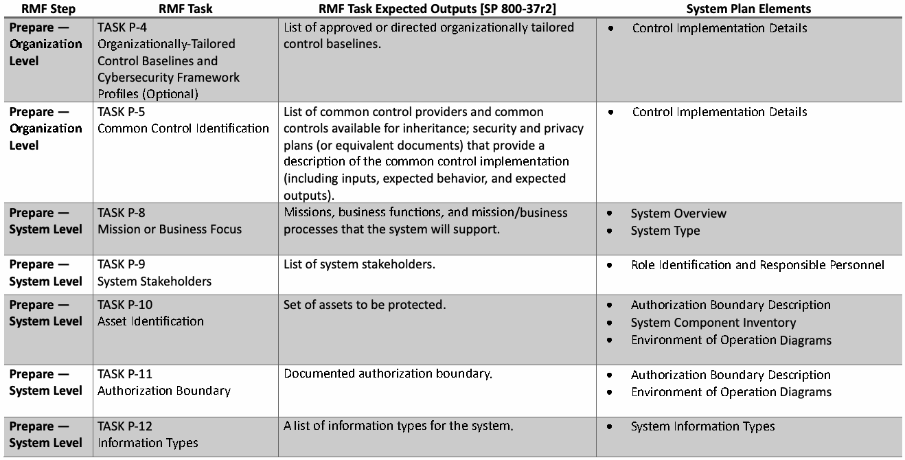
原本PDFの抜粋画像
原本PDFの抜粋画像

原本PDFの抜粋画像

| RMF Step | RMF Task | RMF Task Expected Outputs [SP 800-37r2] | System Plan Elements |
| TASK P-13 I nformation Life Cycle | Documentation of the stages through which information passes in the system, such as a data map or model illustrating how information is structured or processed by the system throughout its life cycle. Such documentation may include data flow diagrams, entity relationship diagrams, database schemas, and data d ictionaries. | ||
| Prepare — System Level | TASK P-15 | Documented security, privacy, and C-SCRM | • Laws, Regulations, and Policies Affecting the |
| Requirements Definition | requirements. | System | |
| TASK P-16 E nterprise Architecture | Updated enterprise architecture; updated security architecture; updated privacy architecture; plans to use cloud-based systems and shared systems, services, o r applications. | ||
| Prepare — System Level | TASK P-17 | List of security, privacy, and C-SCRM requirements for | • Laws, Regulations, and Policies Affecting the |
| R equirements Allocation | the system, system elements, and environment of | System | |
| o peration. | |||
| TASK P-18 S ystem Registration | Registered system in accordance with organizational p olicy. | ||
| Categorize | TASK C-1 | D ocumented system description. | • System Overview |
| S ystem Description | • System Information Types | ||
| • System Operational Status | |||
| TASK C-2 S ecurity Categorization | Impact levels determined for each information type and for each security objective (confidentiality, integrity, availability); security categorization based on h igh-water mark of information type impact levels. | ||
| Categorize | TASK C-3 | A pproval of security categorization for the system. | • System Categorization |
| Security Categorization Review | |||
| a nd Approval | |||
| TASK S-1 Control Selection | Controls selected for the system and the environment o f operation. | ||
| Select | TASK S-2 | List of tailored controls for the system and | • Control Implementation Details |
| C ontrol Tailoring | environment of operation (i.e., tailored control | ||
| b aselines). |
原本PDFの抜粋画像
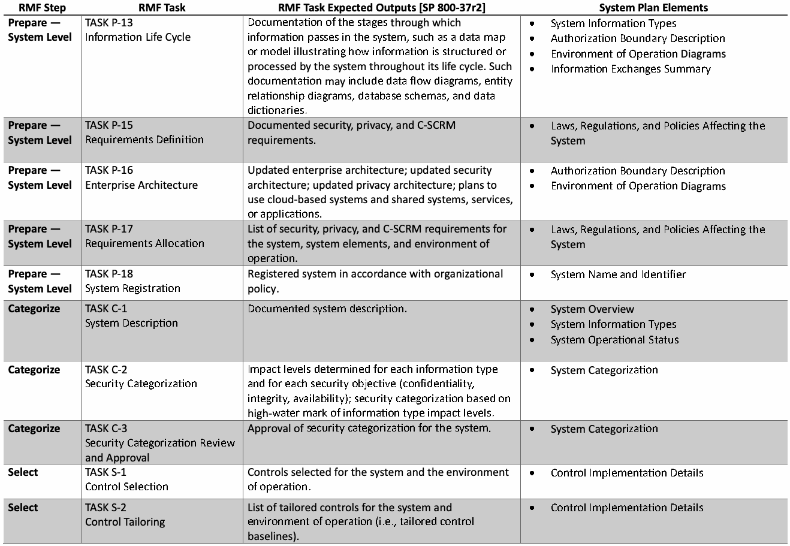
| RMFステップ | RMFタスク | RMFタスクの期待される成果物 [SP 800-37r2] | システム計画の要素 |
| TASK P-13 情報ライフサイクル | ライフサイクル全体を通じてシステムによって情報がどのように構造化または処理されるかを示すデータマップやモデルなど、システム内で情報が通過する段階の文書化。このような文書には、データフロー図、エンティティ関係図、データベーススキーマ、およびデータディクショナリが含まれ得る。 | ||
| 準備 — システムレベル | TASK P-15 | 文書化されたセキュリティ、プライバシー、およびC-SCRMの | • 法律、規制、および方針の影響を受ける |
| 要件定義 | 要件。 | システム | |
| TASK P-16 エンタープライズアーキテクチャ | 更新されたエンタープライズアーキテクチャ、更新されたセキュリティアーキテクチャ、更新されたプライバシーアーキテクチャ、クラウドベースのシステムや共有システム、サービス、またはアプリケーションを使用する計画。 | ||
| 準備 — システムレベル | TASK P-17 | 以下に対するセキュリティ、プライバシー、およびC-SCRM要件の一覧： | • 法律、規制、および方針の影響を受ける |
| 要件の配分 | システム、システム要素、および | システム | |
| 運用環境。 | |||
| TASK P-18 システム登録 | 組織の方針に従って登録されたシステム。 | ||
| カテゴリ化 | TASK C-1 | 文書化されたシステム記述。 | • システムの概要 |
| システム記述 | • システム情報の種類 | ||
| • システムの運用状況 | |||
| TASK C-2 セキュリティカテゴリ化 | 各情報タイプおよび各セキュリティ目標（機密性、完全性、可用性）について決定された影響レベル。情報タイプの影響レベルの最高水準点（high-water mark）に基づくセキュリティカテゴリ化。 | ||
| カテゴリ化 | TASK C-3 | システムのセキュリティカテゴリ化の承認。 | • システムのカテゴリ化 |
| セキュリティカテゴリ化のレビュー | |||
| および承認 | |||
| TASK S-1 コントロールの選択 | システムおよび運用環境のために選択されたコントロール。 | ||
| 選択 | TASK S-2 | システムおよび | • コントロールの実装詳細 |
| コントロールのテーラリング | 運用環境向けにテーラリングされたコントロールの一覧（すなわち、テーラリングされたコントロール | ||
| ベースライン）。 |
原本PDFの抜粋画像

原本PDFの抜粋画像
| RMF Step | RMF Task | RMF Task Expected Outputs [SP 800-37r2] | System Plan Elements |
| TASK S-3 C ontrol Allocation | List of security and privacy controls that are allocated to the system, system elements, and environment of o peration. | ||
| Select | TASK S-4 | Security, privacy, and C-SCRM plans for the system. | • Control Implementation Details |
| Documentation of Planned | • Control Implementation Status | ||
| C ontrol Implementations | |||
| TASK S-5 Continuous Monitoring S trategy — System | Continuous monitoring strategy for the system, including a time-based trigger for ongoing a uthorization. | ||
| Select | TASK S-6 | System plans approved by the authorizing official. | • System Plan Approval |
| P lan Review and Approval | |||
| TASK I-1 Control Implementation | I mplemented controls. | ||
| Implement | TASK I-2 | System plans updated with implementation detail | • Control Implementation Details |
| Update Control | sufficient for use by assessors; system configuration | • Control Implementation Status | |
| I mplementation Information | b aseline. | • Information Exchanges Summary | |
| • Remediation Actions | |||
| • System Plan Change Records | |||
| TASK A-5 R emediation Actions | Initial remediation actions completed based on assessment reports; changes to implementations reassessed by the assessment team; updated assessment reports; updated system plans, including changes to control implementations. | ||
| Assess | TASK A-6 | A plan of action and milestones detailing the findings | • Control Assessment Status |
| Plan of Action and Milestones | from the security and privacy assessment reports that | • Remediation Actions | |
| are to be remediated. | • System Plan Change Records | ||
| TASK R-1 Authorization Package | Authorization package (with an executive summary), which may be generated from a security or privacy management tool for submission to the authorizing official. |
原本PDFの抜粋画像
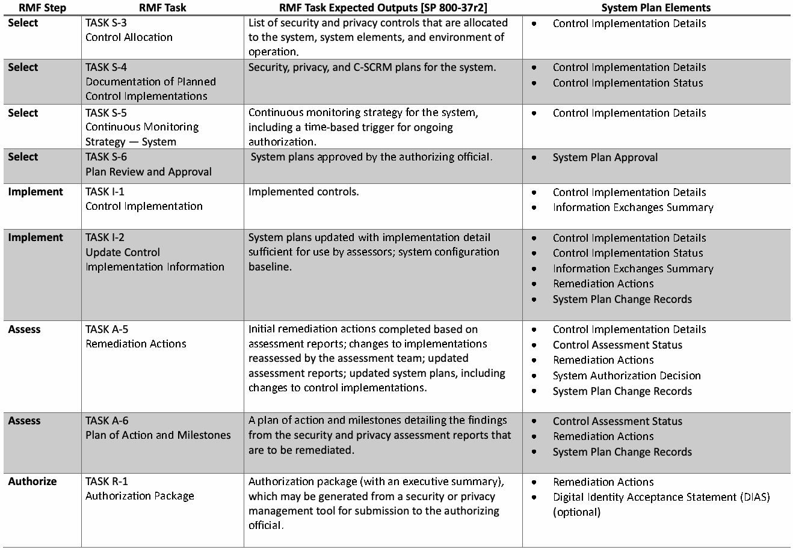
| RMFステップ | RMFタスク | RMFタスク期待される成果物 [SP 800-37r2] | システム計画の要素 |
| タスク S-3 コントロールの割り当て | システム、システム要素、および運用環境に割り当てられたセキュリティおよびプライバシーコントロールのリスト。 | ||
| 選択 (Select) | タスク S-4 | システムのセキュリティ、プライバシー、およびC-SCRM計画。 | • コントロール実装の詳細 |
| 計画されたコントロール実装の | • コントロール実装状況 | ||
| 文書化 | |||
| タスク S-5 継続的モニタリング戦略 — システム | 継続的承認のための時間ベースのトリガーを含む、システムの継続的モニタリング戦略。 | ||
| 選択 (Select) | タスク S-6 | 承認責任者によって承認されたシステム計画。 | • システム計画の承認 |
| 計画のレビューと承認 | |||
| タスク I-1 コントロールの実装 | 実装されたコントロール。 | ||
| 実装 (Implement) | タスク I-2 | アセッサーによる使用に十分な実装の詳細で | • コントロール実装の詳細 |
| コントロール実装情報の | 更新されたシステム計画、システム構成 | • コントロール実装状況 | |
| 更新 | ベースライン。 | • 情報交換の概要 | |
| • 是正処置 | |||
| • システム計画変更記録 | |||
| タスク A-5 是正処置 | アセスメント報告書に基づいて完了した初期是正処置、アセスメントチームによって再アセスメントされた実装への変更、更新されたアセスメント報告書、コントロール実装への変更を含む更新されたシステム計画。 | ||
| アセスメント (Assess) | タスク A-6 | 是正されるべきセキュリティおよび | • コントロールアセスメント状況 |
| 行動計画およびマイルストーン (POA&M) | プライバシーアセスメント報告書からの発見事項を | • 是正処置 | |
| 詳述した行動計画およびマイルストーン。 | • システム計画変更記録 | ||
| タスク R-1 承認パッケージ | 承認責任者への提出のためにセキュリティまたはプライバシー管理ツールから生成される場合がある承認パッケージ（エグゼクティブサマリー付き）。 |
原本PDFの抜粋画像
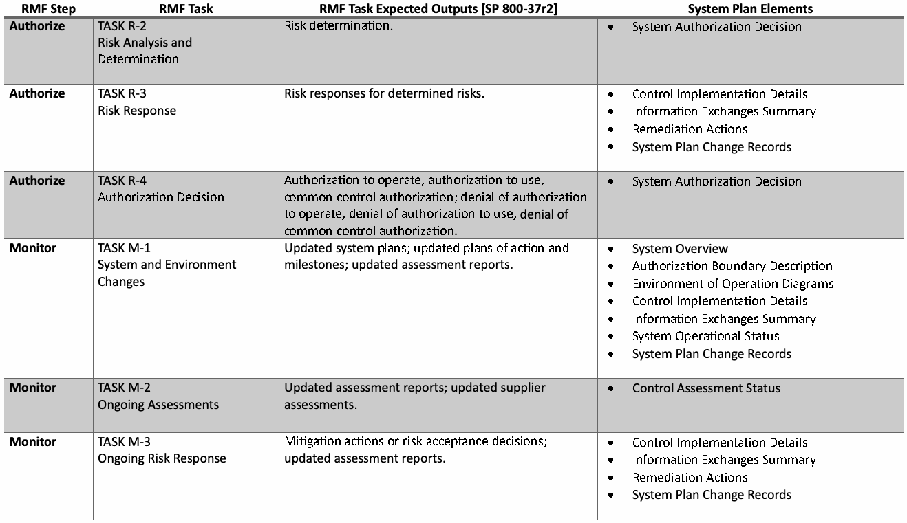
原本PDFの抜粋画像
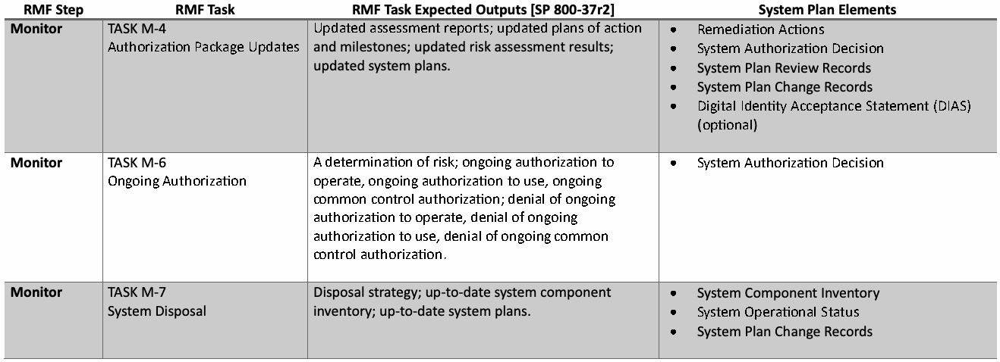
Appendix B. List of Abbreviations and Acronyms
付録B 略語および頭字語一覧
未レビュー訳C-SCRM Cybersecurity Supply Chain Risk Management
C-SCRM サイバーセキュリティサプライチェーンリスクマネジメント
未レビュー訳CIO Chief Information Officer
CIO 最高情報責任者（Chief Information Officer）
未レビュー訳CPRT Cybersecurity and Privacy Reference Tool
CPRT サイバーセキュリティおよびプライバシー参照ツール（Cybersecurity and Privacy Reference Tool）
未レビュー訳CUI Controlled Unclassified Information
CUI 管理対象非機密情報（Controlled Unclassified Information）
未レビュー訳DevSecOps Development, Security, and Operations
DevSecOps 開発、セキュリティ、および運用（Development, Security, and Operations）
未レビュー訳FIPS Federal Information Processing Standards
FIPS 連邦情報処理規格（Federal Information Processing Standards）
未レビュー訳FISMA Federal Information Security Modernization Act
FISMA 連邦情報セキュリティ近代化法（Federal Information Security Modernization Act）
未レビュー訳FOCI Foreign Ownership, Control, or Influence
FOCI 外国による所有・支配・影響（Foreign Ownership, Control, or Influence）
未レビュー訳GRC Governance, Risk, and Compliance
GRC ガバナンス、リスク、およびコンプライアンス（Governance, Risk, and Compliance）
未レビュー訳IR Internal Report or Interagency Report
IR 内部報告書（Internal Report）または機関間報告書（Interagency Report）
未レビュー訳ISCM Information Security Continuous Monitoring
ISCM 情報セキュリティ継続的モニタリング（Information Security Continuous Monitoring）
未レビュー訳MOU Memorandum of Understanding
MOU 基本合意書／了解覚書（Memorandum of Understanding）
未レビュー訳NARA National Archives and Records Administration
NARA 米国国立公文書記録管理局（National Archives and Records Administration）
未レビュー訳OMB Office of Management and Budget
OMB 行政管理予算局（Office of Management and Budget）
未レビュー訳OSCAL Open Security Controls Assessment Language
OSCAL オープンセキュリティ管理策評価言語（Open Security Controls Assessment Language）
未レビュー訳PIA Privacy Impact Assessment
PIA プライバシー影響評価（Privacy Impact Assessment）
未レビュー訳PMO Program Management Office
PMO プログラムマネジメントオフィス（Program Management Office）
未レビュー訳PRA Privacy Risk Assessment
PRA プライバシーリスク評価（Privacy Risk Assessment）
未レビュー訳PRAM Privacy Risk Assessment Methodology
PRAM プライバシーリスク評価手法（Privacy Risk Assessment Methodology）
未レビュー訳RMF Risk Management Framework
RMF リスクマネジメントフレームワーク（Risk Management Framework）
未レビュー訳SBOM Software Bill of Materials
SBOM ソフトウェア部品表（Software Bill of Materials）
未レビュー訳SCRM Supply Chain Risk Management
SCRM サプライチェーンリスクマネジメント（Supply Chain Risk Management）
未レビュー訳SIEM Security Information and Event Management
SIEM セキュリティ情報およびイベント管理（Security Information and Event Management）
未レビュー訳SOAR Security Orchestration, Automation, and Response
SOAR セキュリティオーケストレーション、自動化、および対応（Security Orchestration, Automation, and Response）
未レビュー訳SecCM Security-focused Configuration Management
SecCM セキュリティ重視の構成管理（Security-focused Configuration Management）
未レビュー訳SORN System of Records Notice
SORN システム・オブ・レコード通知（System of Records Notice）
未レビュー訳Appendix C. Glossary
付録C 用語集
未レビュー訳availability Ensuring timely and reliable access to and use of information. [44 U.S.C., Sec. 3542]
可用性（availability） 情報への適時かつ信頼性のあるアクセスおよび利用を確保すること。[44 U.S.C., Sec. 3542]
未レビュー訳confidentiality Preserving authorized restrictions on information access and disclosure, including means for protecting personal privacy and proprietary information. [44 U.S.C., Sec. 3542]
機密性（confidentiality） 個人プライバシーおよび専有情報の保護手段を含め、情報へのアクセスおよび開示に関する正当な制限を保持すること。[44 U.S.C., Sec. 3542]
未レビュー訳cybersecurity supply chain risk management A systematic process for managing exposure to cybersecurity risks throughout the supply chain and developing appropriate response strategies, policies, processes, and procedures. [SP800-161] See supply chain risk management.
サイバーセキュリティ・サプライチェーン・リスクマネジメント（cybersecurity supply chain risk management） サプライチェーン全体を通じてサイバーセキュリティリスクへのエクスポージャーを管理し、適切な対応戦略、ポリシー、プロセス、および手順を策定するための体系的なプロセス。[SP800-161] サプライチェーン・リスクマネジメント（supply chain risk management）を参照。
未レビュー訳cybersecurity supply chain risk management plan A formal document that describes the implementations, requirements, constraints, and implications of cybersecurity supply chain risk management (C-SCRM) controls selected for an information system or environment of operation that work in collaboration with the C-SCRM strategy, policies, and implementation plan to provide a systematic and holistic approach to cybersecurity supply chain risk management across an enterprise. The C-SCRM plan may be integrated with the system privacy and security plans into one consolidated document.
サイバーセキュリティ・サプライチェーン・リスクマネジメント計画（cybersecurity supply chain risk management plan） 情報システムまたは運用環境向けに選定されたサイバーセキュリティ・サプライチェーン・リスクマネジメント（C-SCRM）管理策の実装、要件、制約事項、および影響について記述した正式な文書。この文書は、C-SCRM戦略、ポリシー、および実装計画と連携して機能し、企業全体にわたるサイバーセキュリティ・サプライチェーン・リスクマネジメントへの体系的かつ包括的なアプローチを提供する。C-SCRM計画は、システムのプライバシー計画およびセキュリティ計画と統合されて1つの統合文書にまとめられる場合がある。
未レビュー訳disassociability Enabling the processing of PII or events without association to individuals or devices beyond the operational requirements of the system. [NIST PF]
非関連付け性（disassociability） システムの運用要件を超えて、個人またはデバイスへの関連付けを行うことなく、PIIまたはイベントの処理を可能にすること。[NIST PF]
未レビュー訳information security program plan Formal document that provides an overview of the security requirements for an organization-wide information security program and describes the program management controls and common controls in place or planned for meeting those requirements. [SP800-37] from [OMBA-130] See privacy program plan.
情報セキュリティプログラム計画（information security program plan） 組織全体の情報セキュリティプログラムに関するセキュリティ要件の概要を提供し、それらの要件を満たすために導入済みまたは計画中のプログラム管理策および共通管理策について記述した正式な文書。[SP800-37] [OMBA-130]より。プライバシープログラム計画（privacy program plan）を参照。
未レビュー訳integrity Guarding against improper information modification or destruction and ensuring information non-repudiation and authenticity. [44 U.S.C., Sec. 3542]
完全性 不適切な情報の改ざんまたは破壊からの保護、ならびに情報の否認防止および真正性の確保。[44 U.S.C., Sec. 3542]
未レビュー訳machine-readable When used with respect to data, means data in a format that can be easily processed by a computer without human intervention while ensuring no semantic meaning is lost. [44USC3502]
機械可読性 データに関して使用される場合、意味的な意義が失われないことを確保しつつ、人間の介入なしにコンピュータによって容易に処理できる形式のデータを意味する。[44USC3502]
未レビュー訳manageability Providing the capability for granular administration of PII including alteration, deletion, and selective disclosure. [NIST PF]
管理性 変更、削除、選択的開示を含む、PIIの粒度の細かい管理機能の提供。[NIST PF]
未レビュー訳predictability Enabling reliable assumptions by individuals, owners, and operators about data and their processing by a system, product, or service. [NIST PF]
予測可能性 個人、所有者、運用者による、データおよびシステム、製品、サービスによるその処理についての信頼できる予測の実現。[NIST PF]
未レビュー訳privacy Freedom from intrusion into the private life or affairs of an individual when that intrusion results from undue or illegal gathering and use of data about that individual. [SP800-188]
プライバシー 当該個人に関するデータの不当または違法な収集および使用から侵害が生じた場合の、個人の私生活または私事への侵害からの自由。[SP800-188]
未レビュー訳privacy continuous monitoring program An agency-wide program that implements the agency’s privacy continuous monitoring strategy and maintains ongoing awareness of threats and vulnerabilities that may pose privacy risks; monitors changes to information systems and environments of operation that create, collect, use, process, store, maintain, disseminate, disclose, or dispose of PII; and conducts privacy control assessments to verify the continued effectiveness of all privacy controls selected and implemented at an agency across the agency risk management tiers to ensure continued compliance with applicable privacy requirements and manage privacy risks. [OMBA-130]
プライバシー継続的モニタリングプログラム 機関全体のプログラムであり、機関のプライバシー継続的モニタリング戦略を実施し、プライバシーリスクをもたらす可能性のある脅威および脆弱性に関する継続的な認識を維持する。PIIを作成、収集、使用、処理、保存、維持、配布、開示、または廃棄する情報システムおよび運用環境の変更を監視する。そして、適用されるプライバシー要件への継続的な準拠を確保し、プライバシーリスクを管理するために、機関のリスク管理層全体で機関において選択および実装されたすべてのプライバシー管理策の継続的な有効性を検証するプライバシー管理策のアセスメントを実施する。[OMBA-130]
未レビュー訳privacy control The administrative, technical, and physical safeguards employed within an agency to ensure compliance with applicable privacy requirements and manage privacy risks. [OMBA-130]
プライバシー管理策 適用されるプライバシー要件への準拠を確保し、プライバシーリスクを管理するために機関内で採用される、管理的、技術的、および物理的セーフガード。[OMBA-130]
未レビュー訳privacy control assessment The assessment of privacy controls to determine whether the controls are implemented correctly, operating as intended, and sufficient to ensure compliance with applicable privacy requirements and manage privacy risks. A privacy control assessment is both an assessment and a formal document detailing the process and the outcome of the assessment. [OMBA-130]
プライバシー管理策アセスメント 管理策が正しく実装され、意図したとおりに動作し、適用されるプライバシー要件への準拠を確保してプライバシーリスクを管理するのに十分であるかを判断するための、プライバシー管理策のアセスメント。プライバシー管理策アセスメントは、アセスメントであると同時に、アセスメントのプロセスおよび結果を詳述する正式な文書でもある。[OMBA-130]
未レビュー訳privacy plan A formal document that details the privacy controls selected for an information system or environment of operation that are in place or planned for meeting applicable privacy requirements and managing privacy risks, details how the controls have been implemented, and describes the methodologies and metrics that will be used to assess the controls. [OMBA-130]
プライバシー計画（privacy plan） 適用されるプライバシー要件を満たし、プライバシーリスクを管理するために、情報システムまたは運用環境に対して選択され、導入済みであるか計画されているプライバシー管理策を詳述し、管理策がどのように実装されたかを詳述し、管理策の評価に使用される方法論および測定指標を説明する正式な文書。[OMBA-130]
未レビュー訳Note: The security plan and the privacy plan may be integrated into one consolidated system artifact.
注: セキュリティ計画とプライバシー計画は、1つの統合されたシステム成果物に統合される場合がある。
未レビュー訳privacy program plan A formal document that provides an overview of an agency’s privacy program, including a description of the structure of the privacy program, the resources dedicated to the privacy program, the role of the Senior Agency Official for Privacy and other privacy officials and staff, the strategic goals and objectives of the privacy program, and the program management controls and common controls in place or planned for meeting applicable privacy requirements and managing privacy risks. [SP800-37] from [OMBA-130] See information security program plan.
プライバシープログラム計画（privacy program plan） 機関のプライバシープログラムの概要を提供する正式な文書であり、プライバシープログラムの構造の説明、プライバシープログラム専用のリソース、プライバシー担当上級機関職員（Senior Agency Official for Privacy）およびその他のプライバシー担当職員とスタッフの役割、プライバシープログラムの戦略的目標と目的、ならびに適用されるプライバシー要件を満たしプライバシーリスクを管理するために導入済みまたは計画中のプログラム管理策および共通管理策を含む。[OMBA-130]に基づく[SP800-37]。情報セキュリティプログラム計画（information security program plan）を参照。
未レビュー訳privacy requirements A requirement that applies to an information system or an organization that is derived from applicable laws, executive orders, directives, policies, standards, regulations, procedures, and/or mission/business needs with respect to privacy. [SP800-37]
プライバシー要件（privacy requirements） プライバシーに関して、適用される法律、大統領令、指令、方針、標準、規制、手順、および／または任務／ビジネス上のニーズから導き出される、情報システムまたは組織に適用される要件。[SP800-37]
未レビュー訳Note: The term “privacy requirement” can be used in a variety of contexts, from high-level policy activities to low-level implementation activities in system development and engineering disciplines.
注: 「プライバシー要件」という用語は、高レベルのポリシー活動から、システム開発やエンジニアリング分野における低レベルの実装活動に至るまで、さまざまな文脈で使用できる。
未レビュー訳privacy risk The likelihood that individuals will experience problems resulting from data processing, and the impact should they occur. [NISTPF]
プライバシーリスク（privacy risk） データ処理に起因して個人が問題を経験する可能性（尤度）、およびそれらが発生した場合の影響。[NISTPF]
未レビュー訳privacy risk management A cross-organizational set of processes for identifying, assessing, and responding to privacy risks. [NISTPF]
プライバシーリスク管理（privacy risk management） プライバシーリスクを特定、評価、対応するための組織横断的なプロセスのセット。[NISTPF]
未レビュー訳risk management The program and supporting processes to manage risk to agency operations (including mission, functions, image, reputation), agency assets, individuals, other organizations, and the Nation, and includes establishing the context for risk-related activities; assessing risk; responding to risk once determined; and monitoring risk over time. [OMBA-130]
リスク管理（risk management） 機関の業務（任務、機能、イメージ、評判を含む）、機関の資産、個人、他の組織、および国家に対するリスクを管理するためのプログラムおよび支援プロセスであり、リスク関連活動のコンテキストの確立、リスクの評価、決定されたリスクへの対応、ならびに長期にわたるリスクの監視を含む。[OMBA-130]
未レビュー訳security A condition that results from the establishment and maintenance of protective measures that enable an organization to perform its mission or critical functions despite risks posed by threats to its use of systems.
セキュリティ システムの使用に対する脅威によってもたらされるリスクがあるにもかかわらず、組織がそのミッションまたは重要機能を遂行できるようにする保護対策の確立および維持から生じる状態。
未レビュー訳Protective measures may involve a combination of deterrence, avoidance, prevention, detection, recovery, and correction that should form part of the organization’s risk management approach. [SP800-37]
保護対策には、組織のリスクマネジメントアプローチの一部を形成すべき抑止、回避、防止、検知、回復、および是正の組み合わせが含まれる場合がある。[SP800-37]
未レビュー訳security plan A formal document that provides an overview of the security requirements for an information system or an information security program and describes the security controls in place or planned for meeting those requirements. The system security plan describes the system components that are included within the system, the environment in which the system operates, how the security requirements are implemented, and the relationships with or connections to other systems. [SP800-53]
セキュリティ計画 情報システムまたは情報セキュリティプログラムのセキュリティ要件の概要を提供し、それらの要件を満たすために導入済みまたは計画中のセキュリティ管理策を記述した正式な文書。システムセキュリティ計画は、システム内に含まれるシステムコンポーネント、システムが稼働する環境、セキュリティ要件がどのように実装されるか、および他のシステムとの関係や接続について記述する。[SP800-53]
未レビュー訳Note: The security plan and the privacy plan may be integrated into one consolidated system artifact.
注: セキュリティ計画とプライバシー計画は、1つの統合されたシステム成果物に統合される場合がある。
未レビュー訳software bill of materials A formal record containing the details and supply chain relationships of various components used in building software. Software developers and vendors often create products by assembling existing open-source and commercial software components. The SBOM enumerates these components in a product. [EO14028]
ソフトウェア部品表 ソフトウェアの構築に使用される様々なコンポーネントの詳細およびサプライチェーン関係を含む正式な記録。ソフトウェア開発者およびベンダーは、既存のオープンソースおよび商用ソフトウェアコンポーネントを組み立てることによって製品を作成することが多い。SBOMは、製品内のこれらのコンポーネントを列挙する。[EO14028]
未レビュー訳supply chain Linked set of resources and processes between multiple tiers of developers that begins with the sourcing of products and services and extends through the design, development, manufacturing, processing, handling, and delivery of products and services to the acquirer. [OMBA-130]
サプライチェーン 製品およびサービスの調達から始まり、取得者への製品およびサービスの設計、開発、製造、処理、取り扱い、および納入に至る、複数層の開発者間におけるリソースとプロセスの連動した集合。[OMBA-130]
未レビュー訳supply chain risk Risks that arise from the loss of confidentiality, integrity, or availability of information or information systems and reflect the potential adverse impacts to organizational operations (including mission, functions, image, or reputation), organizational assets, individuals, other organizations, and the Nation. [OMBA-130]
サプライチェーンリスク 情報または情報システムの機密性、完全性、または可用性の喪失から生じるリスクであり、組織の業務（ミッション、機能、イメージ、または評判を含む）、組織の資産、個人、他の組織、および国家に対する潜在的な悪影響を反映するもの。[OMBA-130]
未レビュー訳supply chain risk information Includes, but is not limited to, information that describes or identifies: (1) Functionality of covered articles, including access to data and information system privileges; (2) Information on the user environment where a covered article is used or installed; (3) The ability of the source to produce and deliver covered articles as expected (i.e., supply chain assurance); (4) Foreign control of, or influence over, the source (e.g., foreign ownership, personal and professional ties between the source and any foreign entity, legal regime of any foreign country in which the source is headquartered or conducts operations); (5) Implications to national security, homeland security, and/or national critical functions associated with use of the covered source; (6) Vulnerability of federal systems, programs, or facilities; (7) Market alternatives to the covered source; (8) Potential impact or harm caused by the possible loss, damage, or compromise of a product, material, or service to an organization’s operations or mission; (9) Likelihood of a potential impact or harm, or the exploitability of a system; (10) Security, authenticity, and integrity of covered articles and their supply and compilation chain; (11) Capacity to mitigate risks identified; (12) Credibility of and confidence in other supply chain risk information; (13) Any other information that would factor into an analysis of the security, integrity, resilience, quality, trustworthiness, or authenticity of covered articles or sources; (14) A summary of the above information and, any other information determined to be relevant to the determination of supply chain risk. [FASCSA]
サプライチェーンリスク情報 以下を記述または特定する情報を含むが、これらに限定されない：(1) データへのアクセスおよび情報システムの特権を含む、対象品目の機能。(2) 対象品目が使用または導入されるユーザー環境に関する情報。(3) 対象品目を期待どおりに製造および納入する供給元の能力（すなわち、サプライチェーンアシュアランス）。(4) 供給元に対する外国による支配または影響力（例：外国による所有権、供給元といずれかの外国事業体との間の個人的・職務的関係、供給元が本社を置くか業務を行っている外国の法制度）。(5) 対象供給元の使用に関連する国家安全保障、国土安全保障、および／または国家の重要機能への影響。(6) 連邦政府のシステム、プログラム、または施設の脆弱性。(7) 対象供給元に対する市場における代替手段。(8) 製品、原材料、またはサービスの喪失、損傷、または侵害の可能性によって組織の業務またはミッションにもたらされる潜在的な影響または損害。(9) 潜在的な影響または損害の可能性、あるいはシステムの悪用可能性。(10) 対象品目ならびにそのサプライチェーンおよびコンパイルチェーンのセキュリティ、真正性、および完全性。(11) 特定されたリスクを軽減する能力。(12) 他のサプライチェーンリスク情報の信頼性および信憑性。(13) 対象品目または供給元のセキュリティ、完全性、レジリエンス、品質、信頼性、または真正性の分析に考慮されるその他のあらゆる情報。(14) 上記情報の要約、およびサプライチェーンリスクの判定に関連すると判断されたその他のあらゆる情報。[FASCSA]
未レビュー訳supply chain risk management The process of identifying, assessing, and mitigating the risks associated with the global and distributed nature of information and communications technology product and service supply chains. [OMBA-130] See cybersecurity supply chain risk management.
サプライチェーンリスクマネジメント（supply chain risk management） 情報通信技術の製品およびサービスのサプライチェーンが持つグローバルかつ分散型の性質に関連するリスクを特定、評価、および低減するプロセス。[OMBA-130] サイバーセキュリティサプライチェーンリスクマネジメント（cybersecurity supply chain risk management）を参照。
未レビュー訳system-related privacy risk Risk to an individual or individuals associated with the agency’s creation, collection, use, processing, storage, maintenance, dissemination, disclosure, and disposal of their PII. [OMBA-130] system-related security risk Risk that arises through the loss of confidentiality, integrity, or availability of information or systems and that considers impacts to the organization (including assets, mission, functions, image, or reputation), individuals, other organizations, and the Nation. [SP800-30]
システム関連プライバシーリスク（system-related privacy risk） 機関による個人（または複数の個人）のPIIの作成、収集、使用、処理、保存、維持管理、配布、開示、および廃棄に関連する、当該個人（または複数の個人）に対するリスク。[OMBA-130] システム関連セキュリティリスク（system-related security risk） 情報またはシステムの機密性、完全性、または可用性の喪失によって発生し、組織（資産、ミッション、機能、イメージ、または評判を含む）、個人、他の組織、および国家への影響を考慮するリスク。[SP800-30]
未レビュー訳systems privacy engineering Process that captures and refines privacy requirements and ensures their integration into information technology component products and information systems through purposeful privacy design or configuration. [SP800-37] A specialty engineering discipline of systems engineering. It applies scientific, mathematical, engineering, and measurement concepts, principles, and methods to deliver, consistent with defined constraints and necessary trade-offs, a trustworthy asset protection capability that satisfies stakeholder requirements; is seamlessly integrated into the delivered system; and presents residual risk that is deemed acceptable and manageable to stakeholders. [OMBA-130]
システムプライバシーエンジニアリング（systems privacy engineering） 意図的なプライバシーの設計または構成を通じて、プライバシー要件を把握・洗練し、それらが情報技術コンポーネント製品および情報システムに確実に統合されるようにするプロセス。[SP800-37] システムエンジニアリングの専門エンジニアリング分野。定義された制約および必要なトレードオフと整合しつつ、ステークホルダー要件を満たし、納入されたシステムにシームレスに統合され、ステークホルダーにとって受容可能かつ管理可能とみなされる残存リスクを提示する、信頼できる資産保護能力を提供するために、科学的、数学的、工学的、および測定の概念、原則、ならびに手法を適用する。[OMBA-130]
未レビュー訳Appendix D. Change Log
付録D 変更履歴
未レビュー訳NIST Special Publication (SP) 800-18r2 (Revision 2), Developing Security, Privacy, and Supply Chain Risk Management Plans for Systems, provides guidelines for developing and maintaining system security plans, system privacy plans, and C-SCRM plans.
NIST Special Publication (SP) 800-18r2 (Revision 2)『Developing Security, Privacy, and Supply Chain Risk Management Plans for Systems（システム向けのセキュリティ、プライバシー、およびサプライチェーンリスクマネジメント計画書の策定）』は、システムセキュリティ計画、システムプライバシー計画、およびC-SCRM計画を策定および維持するためのガイドラインを提供する。
•Section 2 defines and explains the system plan types based on the RMF [SP800-37], [SP800-161], and the NIST Privacy Framework.
•第2節では、RMF [SP800-37]、[SP800-161]、およびNISTプライバシーフレームワークに基づくシステム計画のタイプを定義および説明する。
•Section 3 updates the suggested elements for system security, privacy, C-SCRM plans and addresses the relationship between security risk management and privacy risk management. Material has been added to address the use of information management tools and automation to support the development, management, maintenance, and protection of system plan information.
•第3章では、システムセキュリティ、プライバシー、C-SCRM計画の提案要素を更新し、セキュリティリスクマネジメントとプライバシーリスクマネジメントの関係について扱う。システム計画情報の策定、管理、維持、および保護を支援するための情報管理ツールと自動化の利用に対応する資料が追加された。
未レビュー訳•Section 4 relates the development and maintenance of system security, privacy, and C-SCRM plans to the implementation of the RMF.
•第4章では、システムセキュリティ、プライバシー、およびC-SCRM計画の策定と維持をRMFの実施に関連付ける。
未レビュー訳In addition, the publication has been restructured and the following content changes have been applied:
さらに、本出版物は再構成され、以下の内容変更が適用された。
•Technical content from other NIST publications is now included by reference rather than repeated.
•他のNIST出版物からの技術的内容は、繰り返されるのではなく、参照によって含まれるようになった。
•The terms general support system, major application, and minor application have been deprecated to be consistent with OMB Circular A-130 (July 2016) [OMBA-130].
•OMB Circular A-130 (July 2016) [OMBA-130] との整合性を保つため、general support system（一般サポートシステム）、major application（主要アプリケーション）、および minor application（軽微なアプリケーション）という用語は非推奨とされた。
•The term system boundary has been updated to authorization boundary for consistency with the terminology in [SP800-37].
•[SP800-37] の用語との一貫性のため、system boundary（システム境界）という用語は authorization boundary（認可境界）に更新された。